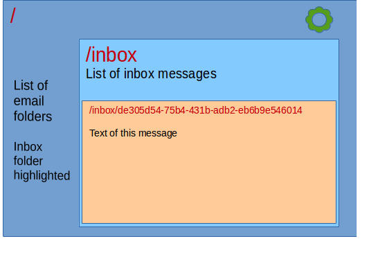

# Introduction
With the rapid pace of progress in the creation of libraries and tools for web development, most information comes in brief articles and blog posts. There are not very many comprehensive guides to all that may be needed from A to Z.
This book intends to fill that gap. We will go step by step gathering the tools and utilities we need for each step and explaining how to use them and coding a full, modern single page application.
We will avoid dumping a whole suite of tools and sample code all at once. There are many full-stack solutions or 'boilerplates' available, however, they are often quite hard to assimilate all at once. They contain too many pieces all strung together without much explanation. We prefer to go one step at a time. You may jump ahead and go to the end but then you wouldn't know why we did things the way we did and wouldn't know how to fix it if you disagree.
We will make many mistakes in the way. Don't take a sample from any chapter blindly. The purpose of this book is to learn, not to provide recipes. We get to a working solution towards the end but we hope you would have learned enough while getting there to devise your own. Beyond using React and Redux, we are not selling a particular way of doing things, we want you to be able to decide on which one out of the many available out there.
We won't cover all the alternatives -that would be impossible- but we will present a very good one. We will use Facebook's React coupled with Redux for data handling.
We will write both server and client code and keep track of its development via GitHub. We will lint, test, check its performance and package it for faster delivery and automate all these processes. We will turn our app isomorphic, that is, able to render fully formed pages straight from the server for faster rendering on slow devices or for SEO purposes.
Sample code showing each feature as it is described within the book are available for download. The  ⇓ icon points to ZIP files containing the code. It can be downloaded and expanded anywhere. Then the code can be installed and made ready to run by doing:
⇓ icon points to ZIP files containing the code. It can be downloaded and expanded anywhere. Then the code can be installed and made ready to run by doing:
npm install
npm run build
npm start
We will explain the purpose of those commands later on.
A brief itinerary of what we will go through follows, however, you may skip straight into chapter 1.
# Base software
There is some software we need to make sure we have installed. You might already have it or not. We'll check that in the first chapter. To begin with we will need NodeJS, which gives us the ability to leverage our knowledge of JavaScript at both ends. It is fair to say that JavaScript is not the only alternative on the server side, you might have already used or heard about PHP or Java but unless you have any legacy system and/or experience, nowadays JavaScript is the way to go, one single language across all the application.
Then, we need to create a repository on GitHub. A repository is the place up in the cloud where all the development team can store and share their work. GitHub is one major provider of such shared space. Even if we work alone, GitHub will help us to keep track of the progress of the project, report and respond to issues and keep a nice set of safe copies of our job up there in the cloud. It not only works with code, documentation can be stored there as well; after all both this book and the accompanying code are up there in GitHub.
To use GitHub we need to install a GIT client.
# Server side code
In the next few chapters we will work on the server-side. Our browser will show whatever information the server is able to provide so it makes sense to start on that side. Most of what we learn on the server side we will later use on the client side.
Moreover, the server is also a simpler environment. When we are on the client side we need to take into account too many other issues. This can make it all very confusing. In the simpler environment of the server, we can go a step at a time.
We will learn to install and create a web server using Express and how to serve data from it by using REST (Representational state transfer) architecture.
To avoid unintended errors, we will do a static check of our code using a linter, a sort of compiler that checks the syntax and formatting of our code and only produces a listing of errors, if any. This will also help us keep a consistent style on the code we produce. When developing in teams, it is better to have a consistent coding style everyone can easily recognize.
Before releasing this server-side software to the world, it is better to test it dynamically, not just do a static syntax check, which we will do by setting an automated testing system. This not only ensures that our code works as we meant it to, but also that during development, any changes we make do not break any functionality that was already there.
Once we are sure our code is good, we send the new version back to the GitHub repository. In this way we share it with the rest of the team so that it can all rejoice and celebrate or, at least, get on with the rest of the project.
Up to this point, in our examples, we would have been storing our data in-memory within the web server. This would have allowed us to concentrate on the topics described above, however, for any meaningful amount of data, memory storage is not a good idea. There are very many ways to store data server-side. The first big decision to make is whether to go for an SQL server or a non-SQL or NoSQL one. Then, within each of those, which particular implementation.
For the purpose of this book, we will use a simple SQL database, SQLite. The SQL language is quite standard, in fact, it is both an ANSI (American) and ISO (international) standard. Admittedly, there are small inconsistencies in between actual implementations, but at least there is a solid base, which NoSQL databases lack. Within all the SQL databases available, we will use SQLite because it is the simplest one to set up and install. It is not apt for a serious web service, but for teaching purposes, it works fine.
Once we do the conversion to SQL, we will run the tests again, to make sure we didn't break anything in the migration. Here, we can clearly see the benefit of having a set of tests made. We have completely changed our back end software and we can still assure that our server still works as it did before.
As always, after testing, we save it in our GitHub repository.
# Client side
First of all we will learn how to retrieve the data from the server we have been building in the previous chapters. Our first renderings will be rather crude, but we'll fix that in a moment.
For the browser, we have opted to use Facebook's React as the rendering library. This is just one of very many options out there and plenty of books could be devoted to praising one or the other. Many articles certainly have. It would be easy to say that it handles the V in the MVC model, but that would get us into equally endless discussions about MVC and the many abbreviations derived from it and which of them applies.
A web developer should be able to reach all users using any sort of browser. It is not admissible to have an application that only works in the most recent release of a particular browser. The great majority of browsers do not support the latest version of JavaScript, formally EcmaScript 2015, often shortened to ES6. To deal with that, and the various incompatibilities amongst browsers we will use Babel, what is now know as a transpiler, that is, a compiler that reads ES6 code and translates it to ES5 code that can run in any browser.
Browsers don't know about modules and packages as NodeJS does. ES6-style modules are not supported in most browsers, if any. To be able to use modules in the client side, we will use a packager called WebPack which will produce a single bundle that any browser can easily load and simulate NodeJS-style modules for us.
We will use React-Router to be able to convert our separate pages into a Single-Page Application (SPA) by allowing the user to navigate across all of our application without resorting to the server.
We will then see how we can consolidate all our data into various models (the M in MVC), separate from the rendering components (the V in MVC) so we can avoid duplication of data and ensure proper synchronization of information across all of our application.
Now that we have the data properly managed, we can start changing it by responding to user interaction. We will do that by using Redux one of the various implementations of the Flux uni-directional data-flow architecture. Flux, as originally defined, is a good concept but its implementation as a library is somewhat lacking. Redux, is very well documented and while it is an amazingly small piece of code, it is quite complete and has a good number of tools that supplement it when needed.
As we progress in our application we will see how to improve its looks by using an external style library. We will use the popular Bootstrap though there are many alternatives. We will just use its built-in styles and avoid using its active components so as to show how to code working components. In practice, once you settled on a user interface style library, you would use its components.
One of the advantages or having JavaScript on the server is that we may run the very same code that runs in the browser. One reason to do that is to improve the user perception of speed. On slow devices on slow connections, which usually means smart phones, a complex page might take quite a while to load and render. If a static image of that same page can be produced on the server, it can be immediately displayed to the user even before the application has been loaded. The other reason is that search engines won't execute your application to find out what it produces in order to index it. A page composed on the fly at the browser is invisible to search engines. Producing a static version of it at the server is the way to have it indexed. This is called isomorphism, the ability to look the same at either end. We will see what needs to be done to turn our application into an isomorphic one.
Finally we will deal with internationalization, the ability of an application to show up in different languages and using regional conventions to display numbers or dates.
All along we will make an aside on writing the code to check it by linting and testing it.
It is unfortunate that we will not be able to show any utility to provide automated documentation. The existing utilities lag behind the tools we will be using, the docs they provide fall quite short of really describing the code. The best ones analyze the code itself to fill in part of the documentation. While this is a good idea to reduce the work of the programmer, many of these are unable to understand ES6 or JSX (more on JSX later) so they get totally confused. The results are quite unsatisfactory so we will not cover them. We will just hold on to the basic principle of writing small modules in separate files with sensible names placed in a logical folder structure and providing self-describing identifiers to any named thing.
# Initial software setup
# NodeJS
For a long time, Web developers had to learn one of several languages to code on the server, usually PHP, Python, Java or whatever your company had available. Shyly, some developers started adding some interactivity to web pages using JavaScript. JavaScript started to grow with sophisticated web applications such as Google Maps or fancy email clients. Thus, developers ended up having to use two different languages, one for the client, JavaScript, and another for the server.
All that changed in 2009 when Ryan Dahl adapted Google's open source V8 JavaScript engine to work in Linux. With later versions made to work in all popular platforms, NodeJS allowed web developers to use one single language everywhere: JavaScript.
We need to check if we have NodeJS already installed. At a command prompt we can type node --version or node --help which will either fail if NodeJS is not installed or produce a suitable response. At the time of reviewing this chapter, the version for NodeJS is 4.4.2. If you do have an older NodeJS it means you already know how to install it and hopefully how to upgrade it.
To install NodeJS simply go to the download page on their site. The home page will detect which download is suitable for your computer and offer it as a download. NodeJS offers two versions, the LTS (Long Term Support) which is the safest one, which is what we will be using, and a more adventurous one for developers willing to experiment with the upcoming features.
# NPM
NodeJS became quite a success and suddenly lots of developers were writing software to run on it. NodeJS promotes a very modular way of writing code. Instead of big source files containing hundreds of lines of code, it is much better to split the code in small, very maintainable pieces called modules. Several of those modules can be grouped together to make a package. To help in managing those packages, Isaac Z. Schlueter wrote npm, NodeJS Package Manager. Initially, npm had to be installed separately, currently it is installed along NodeJS so there is nothing you have to do, if you installed NodeJS, you have npm.
NPM is not just software, there is also a web site npmjs.com that contains above two hundred thousand free packages. Npm, Inc, the company that runs the site, does not evaluate the quality of those packages but it provides good information to evaluate its worth. There are very many well known excellent packages. We will use several of those.
# Editor
Comprehensive IDEs such as Eclipse or Microsoft's Visual Studio have fallen out of favor mostly because they are too heavy and slow. As Web development changes fast, it is impossible for the large IDEs to keep pace. The current trend is towards smaller and fast text-editors with a flexible plugin architecture so, whatever the original designers left out, someone else can add.
If you don't have a beloved text editor installed in your system I'd like to suggest a couple of interesting options Adobe Brackets and GitHub Atom. Both are very capable and fast editors and both have a large list of plugins to add any features not already built-in. The most interesting feature of both is that they are written mostly in JavaScript running in NodeJS, which you should have installed by now.
Both editors are also open source and anyone of us can contribute to its development or add plugins. As any such large collaborative project, they are both hosted in GitHub ( Brackets and Atom)
# GitHub
Teams of developers, possibly continents apart, need somewhere to put their source code which they can all reach. GitHub has become the place of choice for that. The last two links in the previous section point to software stored in GitHub. The little icon before each name is Octocat, GitHub's mascot. Lots of people got creative with this little creature and there is the Octocat Index or Octodex showing many of its personalities. We will use that icon along links pointing to code residing in GitHub.
It is now time to setup your GitHub account. Go to GitHub and create your account. Just follow the instructions on the screen. To finish the account creation process, GitHub will send an e-Mail message to validate the address you have provided. GitHub will recognize you by your e-Mail address so it is vital that it works but it will not make it public unless you tell it to.
All your postings in GitHub will show the user name you have given when you created the account. Do provide a good user name because that is how everyone will refer to you and, hopefully, make you famous. Your Twitter handle or similar known alias would be a good choice. GitHub will use your name for a folder where all your stuff will be stored. Unfortunately, many good, short names are already taken, some of which you don't even see because they might be private projects.
Software in GitHub is stored in repositories. Repositories can be public or private. Public repositories are free. Absolutely everyone can see what you store in them but only those you set as collaborators can modify it. If you want to keep your code secret, then you have to create a private repository and pay a fee.
Though we will use GitHub to store computer code, it can actually be used for any kind of text, such as this book () or all sorts of documents like those issued by government agencies (). Many legal firms, editors and publishers, translators and others sharing large amounts of documents also use it though, understandably, they tend to use private repositories.
Though everyone can see and download anything in public repositories, to actually change anything, besides having permission to do so, you can either use the on-line editor, which is only practical for minor modifications, or use a git client which lets you synchronize your local working copy and the one in the remote repository.
# GIT
Git is a source control system. It allows a distributed team of people to share and keep track of changes in source code over time. It was initially designed in 2005 by Linus Torvalds to manage the Linux kernel, the version of Unix he wrote and named after himself. Linux which, at the time, was the largest open source project in the world, needed a safe, secure and fast means of allowing its collaborators to work together. None of the existing systems satisfied all the expectations of the team so they developed one of their own.
The basic Git client software can be downloaded from their download page. The basic Git client software is a command-line utility with no user interface. Several GUI clients are listed in the same site. In this book, however, we will use the command-line commands, since they are the standard. For Windows or Mac users I would suggest GitHub's own desktop since that is where we will store our code. Many popular coding text editors and IDEs (Integrated development environment) have plugins for Git.
Once Git is installed, we need to set it up. Since Git will interact with remote servers, you need to provide it with information about you.
git config --global user.name "YOUR USER NAME"
git config --global user.email "YOUR EMAIL ADDRESS"
It is best to use the same user name and e-mail address you used on your GitHub account. GitHub will use the e-Mail address to associate your commits with your GitHub account. GitHub will not make your e-Mail public unless you explicitly tell it to. Do not change the e-Mail address once you set it up, otherwise, GitHub will no longer recognize you. The user name you give to your git client may or may not match your GitHub account name, but then, why wouldn't it?
In order to prevent GitHub from requesting your login information too often, you might want to tell git to temporary remember you.
git config --global credential.helper cache
Git will remember you for about 15 minutes after a login, if you want to change that, you can do:
git config --global credential.helper 'cache --timeout=3600'
Timeout is measured in seconds so the above gives you one hour.
If you have a Git GUI or a plugin for your editor, they will usually offer to save your credentials for you.
# Working with repositories
# Creating a repository
Go to GitHub and, if you are a new user, you will see a mostly empty page except for some pictures linking to some tutorials. Somewhere on that page (the design might vary over time) there will be a button to create a New repository. Click on it (nothing will happen until you confirm it) and fill in the name and description. Select a public (free) repository, opt to have a README file and select a .gitignore for Node and a license.
As Nicholas C. Zakas explains in a recent article selecting a license is vital. You might assume that by not imposing a license requirement you are leaving your code open for anybody to use. Quite the opposite, in most countries unless you explicitly surrender your rights, the copyright is yours. You can either pick one of the very many licenses on offer (I suggest the MIT License) or state your own terms. Don't try to be funny with the terms of your license if you make your own. A well known piece of software added the clause "The Software shall be used for Good, not Evil" and caused quite a lot of trouble.
Finally, click on the Create repository button. You can actually add both the README, .gitignore and license files later on and if you are not happy with the name or description, you can change it as well. And if you don't like anything in it, you can delete it though, once you start working on your project, it would be a shame.
# Cloning your repository
So far you have the basic structure of a project but it is only up there in GitHub, you have nothing in your own computer. The first thing we need to do is to make a local working copy of it and to do that we will clone it.
Somewhere in the page (now it is above the file listing but it used to be on the right so, just look for it) there is a dropdown that lets you pick either SSH or HTTPS and to its right there will be a long string that looks like an URL, for example, if you select HTTPS you might see:
https://github.com/MyUserName/MyNewRepository.git
Copy that string.
In a terminal, command prompt or whatever you call it in your operating system type git clone and then paste the URL you copied from GitHub. The git clone command will create a folder with the repository name under your current folder and download everything in the repository. It will also add a .git folder with some configuration information related to the repository.
If you now do a cd MyNewRepository (or whatever you called it) you will see your README.md, LICENSE and .gitignore files. Unix-based systems, by default will not show files starting with a dot so you might not see the .gitignore file. We will see the purpose of this file later on.
The LICENSE file is a plain text file containing the terms of the license you have selected.
The README.md file is what contains the text that is shown right below the file listing in the GitHub repository. It is a plain text file written in Markdown format, the same used in writing this book. The sample file will contain the name of the repository as its main heading and the description provided when you created the repository as its content.
You might want to change some of the text in that README.md file to try out some of the styles shown in the guide. Markdown was originally designed to be an easier way to generate simple HTML, improving on the usual readme.txt files that used to be distributed along software packages.
If you are using the Brackets editor you might want to install the MarkdownPreview extension. If you are using Atom you already have the markdown-preview plugin installed. Either will let you see a preview of how your README.md will look once uploaded to GitHub. GitHub uses a particular flavor of Markdown so except for the Atom previewer the results shown on others might be slightly different.
# Uploading the changes
We want to change something in our working copy so we can see how to upload our changes to GitHub. We have already played a little bit with our README.md. Now, lets go and create a folder called server where we will put the code we are about to write. Lets put a file there, an empty file called index.js. We will fill it up later, but for now, lets just see how git works.
Go to the terminal or command prompt and type git status. This will show which files have been modified such as the README.md, and which files are untracked which means they have been newly created and git has no clue about them yet. This already tells us something, git keeps track of the files it knows about, namely, those that have been brought from your GitHub repository.
Uploading files to your remote repository is a process similar to sending a package through the mail. First you put everything into a box. In git parlance this is called staging. Git already knows about those files you have received, however, it doesn't know about the new files you have added or which files you want to include in the box. For whatever reason, you might want to ship your files in separate packages but, if you know that everything in your working folder should go, you can simply do a git add . . Note the dot after add, meaning the current working folder. This will add to the box every file and folder it finds in the current folder and in those below.
If you repeat the git status command, you will see the files previously listed in red (if your terminal/command prompt supports such coloring) now showing in green meaning that they are in the box, that is, staged. git status is always a handy command to use. Another useful one is git diff README.md which will show a list of the differences in between your working version of the README.md file (or any other you ask for) and the copy in the repository.
Now that you have everything in the box, you have to close it and label it. You do that with git commit -m "my first commmit". The -m "whatever" is optional and if you don't provide that option, git will fire up whichever your default text editor might be configured in your system (notepad, gedit, etc.) and let you write a brief description of what you have changed in this commit.
Finally, you just have to dispatch it. You do this by pushing it: git push origin master. You will then be asked for your user name and password. So far there had been no need for identifying yourself. Since the repository is public, everyone can read it and clone it. All the changes you then do in your local workspace are of no concern to git, however, when you push your changes back GitHub needs to make sure you are authorized to do that.
The basic command is git push but you need to add some destination address to your shipment. We won't deal with that right now but suffice it to say that git is able to manage multiple versions or branches of the same project and also deal with hierarchies of repositories so that, for example, in our case a sub-team might deal with server-side development and another with client-side development and each have a sub-repository from the main repository. That is the reason for those extra options. Since, for the time being, we are the only users of our single repository, we will always do git push origin master.
If we go to GitHub we will now see our changes reflected in the repository. If we did any changes in the README.md file, the home page of the project, shown right below the file listing, will display the new text. We can also dig down into the server folder where we will find the index.js. The description we provided when we issued the git commit command with the -m option will be shown along the files affected as well as the date of the change.
If we open the README.md file, we will see its raw, unformatted contents and at the top we can see there is a button labeled History. This will show us each of the changes done on the file (not many right now) each accompanied with its commit description and time stamp and, if we click on any of the entries, we will see the file with its changes marked green for the additions and red for the deletions. Two columns of line numbers on the left correspond to the before and after source files.
There is not much to see right now but try it out later on once we have done some few changes. There is far more to git and GitHub than what we have mentioned so far. It really shines when used with large teams in big projects but, for the time being, it is good to becomes somewhat familiar with it.
# Summary
We have learned how to install several of the tools we will need to develop our application: NodeJS, NPM and optionally some JavaScript editors written in JavaScript.
We have also installed GIT which allows us to work with GitHub, a place where we can store our code, keep track of the changes, share it with others, track bugs and issues and, in general, manage much of the process of creating an application.
Finally, we created a repository within GitHub to test these tools.
# Creating a simple web server
NodeJS has been designed to be used primarily in web sites so creating a web server is pretty easy. In many other languages such as PHP we would need to have a web server, such as Apache plus the interpreter for PHP. Not so in NodeJS. The following code is all we need to start with:
const http = require('http');
const PORT = 8080;
const server = http.createServer();
server.on('request', (req, res) => {
console.log(`Received request for ${req.url}`);
res.writeHead(200, { 'Content-Type': 'text/plain' });
res.write('Hello World!\n');
res.end(`Received request for ${req.url}`);
});
server.on('listening', (error) => {
if (error) {
console.error(error);
} else {
console.log(`Server running at http://localhost:${PORT}/`);
}
});
server.listen(PORT);All the code for the book is available at https://github.com/Satyam/book-react-redux which includes instructions on how to see or download the code for any of the chapters. You can see the original of the segments of code included in this book by clicking on the Octocat
NodeJS programs are made of modules, little bits of code that provide useful functionality. NodeJS already offers a good number of such modules. One of them is http and to load it we do:
const http = require('http');We save a reference to that module in the http constant. It is usual, though not required, to name the references to the modules after the name of the module itself.
We are using the const keyword instead of a simple var because we want to make sure we don't accidentally change its contents later on. It might surprise C programmers because in in C constants are numeric or string literals. In JavaScript any variable can contain anything, numbers, booleans, functions or full objects. By declaring it as const we just mean that we want to protect it from accidental changes later on.
const PORT = 8080;PORT is more of a traditional constant in the C sense, a plain numeric value. Following the regular convention, we use an all-uppercase name for it. This is not mandatory, just a convention. The PORT will be the part after the : in the URL:
http://localhost:8080
We might already have an active web server running on our machine which will be listening in the standard port number of 80. We don't want to interfere with any existing web server so we put ours to listen on another port. The low port numbers (below 1024) are mostly reserved for well known services. It is customary to use 8080 for temporary test web servers. If we get an error stating that the port is already in use, we can simply use some other number.
const server = http.createServer();The http.createServer function creates an instance of a web server, which we save into the variable server declared as a constant to keep it safe.
We want to know when our server receives any request, that is, a user has navigated to an URL on this web server. So, we tell the server that on receiving a 'request' it should let us know.
server.on('request', (req, res) => {
console.log(`Received request for ${req.url}`);
res.writeHead(200, { 'Content-Type': 'text/plain' });
res.write('Hello World!\n');
res.end(`Received request for ${req.url}`);
});It will do so by calling the function we provide. We are using arrow functions which were incorporated in ECMAScript 2015 or ES6 as it is often called (const is also new to ES6). Basically, the two fragments below are more or less equivalent:
(req, res) => {
function (req, res) {
So, for each request our web server receives it will call our function providing it with two arguments, a request req, containing information about the request just received such as the URL (req.url) or the headers. It also provides a response object res that allows us to return a response to the browser.
We use res.writeHead to start the reply to the browser by giving it the 200 HTTP response code for Ok, then we add one header to change the default Content-Type of text/html. We want to send back plain text instead of HTML so we change it to text/plain.
With res.write we start sending the text we mean to show on the browser. The response object res will keep accepting text as long as we keep writing into it. To tell it we are done we do a final call to res.end. We are using the same template string as in the earlier console.log where we tell JavaScript to interpolate the value of req.url into the template.
We also want to know when the server becomes ready to start listening so we ask the server that on 'listening', it should let us know by calling the function we provide.
server.on('listening', (error) => {
if (error) {
console.error(error);
} else {
console.log(`Server running at http://localhost:${PORT}/`);
}
});This is also an arrow function. It receives an error argument which, if not null, will contain an error message, otherwise, it means the server is ready.
Finally we tell the server we want to listen on the given PORT.
server.listen(PORT);If you clicked in any of the OctoCat links above you might have noticed that they point to highlighted lines or ranges of lines in the sample code in GitHub. This is just one of many features in GitHub that makes it great when doing development in teams, we can use these links to talk about code with other people, as we are doing here.
We can run this brief script by typing node server. Since server is a folder, NodeJS will try to run a file named index.js. The program will soon print
Server running at http://localhost:8080/.
Now, if we go to a browser and navigate to that URL, the server script will print:
Received request for /
Received request for /favicon.ico
The first line is due to the URL we requested. The second is because most modern browsers look for a file called favicon.ico at the root of the site, which it will use as the icon to associate with the site.
On the browser, we will see the reply from the server:
Hello World!
Received request for /
We can add whatever we want to that URL and the server will report whatever else we asked after the site root. Thus http://localhost:8080/this/that?something=else will produce:
Hello World!
Received request for /this/that?something=else
By parsing and analyzing the URL and the rest of the information the request object provides we can respond in any way we want by sending back files, presumably HTML files or images, or assembling web pages on the fly. Doing all these would be somewhat tiresome, like re-inventing the wheel. Instead, in the next chapter, we will use a package which will do much of the work for us.
# Important NodeJS features
This simple example allows us to learn about some of the goodies that JavaScript and NodeJS gives us.
# Modules
NodeJS allows us to break up a big project into little pieces called modules, each a piece of JavaScript code that does very well a very simple thing. This is great for working in teams because each individual can concentrate on a simple, well-defined module and not be concerned with anything beyond. Even a single solitary developer benefits from Modules because it makes it easy to know where the various parts of a project go. It also allows us to reuse the same code over and over again.
Modules are gathered into packages. NodeJS comes with NPM, its own package manager. A public repository of packages npmjs.com collects thousands of packages. We will use one of those in the next chapter to improve on our web server. Express is actually one of the most popular packages for NodeJS.
Let us have a look at the entry for Express in the NPM registry. On the right hand there is a column with plenty of information. They are on a 4.xx version, which means it is a mature product that has gone through many major revisions. It has an MIT license meaning we can freely use it. There is a link to the GitHub repository () where we can find the source code and all the history of its development. We can see that in the last month it had millions of downloads, which speaks of its popularity.
If we scroll further down, we can see a list of Dependencies and Dependents. Here lies the beauty of packages and of the whole NPM ecosystem. Each developer does something that depends on the code done by someone else and will see his/her own package used by others and depended upon by many other packages.
This is open source at its best.
# Event loop
Much of the efficiency and simplicity of NodeJS comes from the event loop. Events are simply things that happen. We are used to events such as button clicks in the browser. We don't know when or even if an event will happen, it is up to the user of the browser. This has proved a powerful concept in interfacing with the user. Instead of prompting the user for information one piece at a time as we did in the age of teletypewriters (well, at least some of us did), we give the user freedom to interact with our pages in multiple ways and have our applications respond to that.
It seems a little bit of a stretch to extend this to the server, where there is no user, however, it works wonderfully well, as we've seen. In our simple web server, we don't know when a request from a browser will come. Thus, we tell our server that on receiving a 'request' it should let us know. Likewise, we don't know how long will it take to setup the server and get it ready to listen to requests so, we tell the server that on becoming ready to start 'listening', it should tell us.
This is thanks to the event loop. After initializing, NodeJS reads and executes the script and then enters what is called the event loop. If there is anything listening on something else, it just stays there waiting for that something to happen. When an event happens, it notifies whomever it might concern by executing the function provided as a callback and loops back to the event loop. While NodeJS is executing those callbacks, events get queued so on returning to the event loop NodeJS first checks the queue and processes the events queued in it.
NodeJS changes the way we do many other operations, for example, reading a file. In most other languages, we have to open the file and read it. When we tell the operating system (OS) to open the file, our application is temporarily frozen until the OS does get the file open and returns a handle. Then, when we order the OS to read the file, our program gets frozen once again until the file is actually read and its contents made available somehow to our program. NodeJS doesn't work like that (it can, but it is not encouraged).
In NodeJS, we tell the OS that we wish to have the file opened and tell it to let us know when it has complied. Likewise, when we read from a file, we tell the OS to read the file for us and let us know when the chunk we have requested is available. Our program is never frozen. Once we place our requests to the OS, we are free to continue doing something else or, most likely, go idle, allowing NodeJS to return to the event loop and see if something else has happened that might be of interest to some other application.
Contrast this to, for example, PHP. It has the library functions to write a simple web server just like NodeJS but it cannot deal with concurrency, that is, multiple request coming from various sources. It can easily do one at a time and, in principle, it seems NodeJS does the same. However, there is a big difference. When the incoming request needs a file to be read, PHP freezes until the read operation is done and no other request can be processed. NodeJS doesn't freeze, it simply returns to the event loop and allows other events to be processed, be them further HTTP requests or files read by previous requests that are still pending. That is why PHP and so many other languages require complex environments such as an Apache web server or Microsoft's IIS to juggle with the various PHP processes each dealing with a single request.
# Callbacks
Unlike in most other languages, functions in JavaScript are just one more type of object and they can be assigned to variables, passed as arguments to functions and, of course, called. This sits nicely with the event loop because that is the way to tell NodeJS or the browser what to do when an event happens. We just give it a function. Basically, we are saying "when this happens, call me back". It is the kind of thing we would wish we could do when calling customer support; instead of listening to the "All our customer support representatives are busy ... yada yada ..." we let them know we need help and have them call us back. That is why we have callback functions.
In the code above, we have supplied both our event listeners with callback functions. In one we print suitable messages depending on whether the server succeeded in listening to incoming requests, in the other we process those requests.
In other languages, for example, Java, we cannot use functions so freely because we cannot pass functions as arguments. Instead we have to define a class which implements a particular interface that declares a method which will be called when the event occurs, then we pass the whole class instance to the event listener. Sounds complicated? Well, you get used to it, but the JavaScript way is so much easier! And since ES6 and its arrow functions it is even easier. In JavaScript, when we need a function, we write it right there.
# Chaining
Functions don't always return values. In other languages we had functions, which always return some value, and subroutines or procedures which we call (often using the call statement) to do something, but that don't return anything.
In JavaScript there are only functions and they always return something, even if that something is undefined. Someone, and I think it was John Resig in jQuery, thought that returning undefined was a waste so all the methods (functions in object instances) that have nothing better to return will return a reference to itself.
In our sample web server, we call several functions within the server instance (that is, methods) and never use any return from those functions. Actually, all those functions return a reference to the same object they belong to.
Using those references to the very same object they belong to allow for what is called chaining where we can chain one function call right after the other.
We can see this in action in the following example:
const http = require('http');
const PORT = 8080;
http.createServer()
.on('request', (req, res) => {
console.log(`Received request for ${req.url}`);
res.writeHead(200, { 'Content-Type': 'text/plain' });
res.write('Hello World!\n');
res.end(`Received request for ${req.url}`);
})
.on('listening', (error) => {
if (error) {
console.error(error);
} else {
console.log(`Server running at http://localhost:${PORT}/`);
}
})
.listen(PORT);It is our very same web server changed to use chaining. First thing to notice is that we are no longer declaring a variable server. The http.createServer() function already returns an instance of an HTTP server and all the functions, such as on, that would otherwise have nothing better to return, keep returning references to the same HTTP server instance they belong to. We have chained several operations one after another to the same instance.
Good styling dictates that when doing chaining the chained functions (.on or .listen) to start with the dot on a separate line indented one position from the original source of the object instance. All functions chained to the same object should be at the same depth. Also note that there are no semicolons at the end of the chained functions because otherwise the statement would be finished and the object reference lost.
You might expect res to be similarly chainable but, unfortunately it is not. the write method does return information while the other two used here return undefined, which is a waste.
# ... and finally
We can shorten our code even more:
const http = require('http');
const PORT = 8080;
http.createServer((req, res) => {
console.log(`Received request for ${req.url}`);
res.writeHead(200, { 'Content-Type': 'text/plain' });
res.write('Hello World!\n');
res.end(`Received request for ${req.url}`);
})
.listen(PORT, () => {
console.log(`Server running at http://localhost:${PORT}/`);
});Subscribing to the request and listening events is such a frequent thing to do that the developers of the http module have made it easier, we just pass the request handler function to the createServer method and the listening callback to the listen method. Also, we don't actually need to check for the error argument because most of the errors at that stage simply produce fatal errors and the application will terminate before we have any chance to do something about it.
# Summary
We have seen how easy it is to have a web server up and running using plain NodeJS without any extras, which is due to several features built into NodeJS, such as its module system, and, most important of all, the event loop.
We have also seen some standard coding practices such as the use of callbacks and chaining.
# NPM Packages
So far we have written a very primitive web server and we could go on and make it really useful, but that would be a real waste of effort to repeat standard behavior and we don't want to re-invent the wheel. Instead, we will use one of NPM's most popular packages, Express.
We also want to keep a record of what packages we install for our application so that anyone else can set it up in the same way. NPM uses a file called package.json to do that.
To create our package.json file, we go to the root of our project and type npm init and answer a few questions. It is not crucial that we answer them right the first time, the file is editable and we can change much of it later on. NPM will offer defaults for each answer which we might accept by pressing Enter so, if you are not sure about something, simply accept what NPM offers.
NPM knows about Git and GitHub so it will link to the repository created in chapter 1. It also adds an entry for bug tracking:
"bugs": {
"url": "https://github.com/Satyam/book-react-redux/issues"
},
Bug tracking is one of many extras offered by GitHub beyond serving Git requests. In the current version of GitHub, a series of tabs at the top of the page allow you to access several features of any project. So far we have seen the Code tab but there are several others such as Issues, Wiki or Graphs that are very useful. The Settings tab allows us to decide which of these features we want in our repositories.
The package.json file is in JSON format, a data -interchange format first devised by Douglas Crockford and now an ECMA standard. The file is made of simple text so it is editable. Open it up to have a look at it. You will easily find out where most of the responses you provided to npm init have gone.
Now we may fix some of them. NPM suggests version 1.0.0. Those numbers follow the semver semantic versioning standard. The first number is called the major version. A major version of 1 at this point would be somewhat presumptuous from us since it would suggest it is a finished product in its first release. We can change that to 0.1.0 or something like that. A major version of 0 clearly states that it is still a prototype.
# Running the script
Something else we might want to change is the "main" : "index.js" entry. That came from the prompt entry point: (index.js). Lets change it to "main" : "server/index.js". Save the change and go to a terminal/ command prompt and type node .. The server will now be started. Originally, we had to do node server or node server/index.js. When given a folder instead of a full file name, NodeJS actually looks first for a file called package.json for the main entry and if it doesn't find it, only then it goes searching for an index.js which is what we've been doing so far. Now that we do have a package.json we can let NodeJS find it for us. Note the dot at the end of node ., otherwise, NodeJS runs in interactive mode and prompts us for input.
The main entry point declared in package.json is mostly used for libraries, that is, when your code is meant to be depended upon, not when doing an application. To start running an application, it is much better to use the scripts.start property.
"scripts": {
"start": "node server/index.js",
"test": "echo \"Error: no test specified\" && exit 1"
},The npm init command already created a scripts.test property which we will use later on. We simply add the start entry whose value is the command to start the server. Then we can do:
npm start
and the server will start. Using the npm start command for running applications is the recommended way. Most developers, when looking at your application, on seeing a package.json file will expect to find the command to start your application there.
Actually, npm start is a shortened form of npm run start. The npm run xxxx command will look for a xxxx property in the scripts object and execute the string it finds there. Doing npm run without any extra arguments will list all the available scripts. Only a few of them have shortened forms: npm start, npm restart, npm stop and npm test.
There are also a series of pre and post entries that, if found, will be executed automatically before and after some other commands are run. You can check them out in the NPM manual.
There is an extra benefit of running commands from NPM. All of the information in the package.json file will be available to the program being run with the npm_package_ prefix with underscores instead of dots separating the properties. For example, you can read npm_package_version or npm_package_scripts_start.
You can freely add your own properties though, to avoid conflicts with existing options, it is better to use your own property object name. The config property already exists so avoid using that one. Existing properties are all lowercase so mixing some uppercase characters is a good idea, for example:
"myWebServer": {
"port": 8080
},Our server program can now have:
const PORT = process.env.npm_package_myWebServer_port || 8080;This will allow other team members to easily find configuration options without having to go looking into the source files.
# Installing dependencies: Express
As mentioned earlier, NodeJS comes with some packages pre-installed such as http which we have used earlier. For extra packages, we have to use NPM to install them. For Express, we do:
npm install express --save
The command npm install will look for the package name in the NPM registry and, if found, download and install it. The name given in the command should be exactly as in the heading of the entry in the NPM registry for Express it should be express. The --save option instructs the installer to save the reference to that package in our package.json file. If we take a look at it, we may see that it now has the following added:
"dependencies": {
"express": "^4.13.4"
}
This is how NPM keeps track of the extra modules it loads, it means that our app needs the express package version 4.13.4 or higher up to, but not including, any 5.y.z. Changes in the major version usually mean there might be some incompatible changes with the previous one so, once you program for a particular major version, you want to keep within that one.
Once the npm install command finishes, it shows what it has done, listing the module it has downloaded plus all its dependencies. Each entry contains the registered name of the package and the version it has actually installed.
Now you will find an extra folder in your project called node_modules and inside it, a folder called express. That is where the downloaded package has gone. Each package will also have its own package.json file and its node_modules folder with its dependencies, each of which will have its package.json file and its node_modules and so on.
Let us add some other packages. The following are optional sub-modules of Express itself which we will use later on. Do:
npm install body-parser --save
npm install cookie-parser --save
The package.json file will now show more dependencies:
"dependencies": {
"body-parser": "^1.15.0",
"cookie-parser": "^1.4.1",
"express": "^4.13.4"
}
and the node_modules folder will contain a folder for each of those extra packages.
One of the benefits of the package.json files is that it records all the dependencies so that anyone can recall them. Lets go and delete the node_modules folder. Now, we don't have any of the dependencies. However, we still have the package.json file so we can reestablish all the dependencies. If we now do:
npm install
with no extra arguments, NPM looks into the package.json file and installs all the dependencies listed in it.
# Installing developer dependencies: ESLint
The NPM registry not only contains many packages we can use in our application, it also contains plenty of packages that can help us in the development process. We will install one such utility: ESLint. A linter is a sort of compiler that doesn't actually produce any code, instead, it checks the syntax of the code to warn us of any possible errors and may check style, such as whether the indentation for each line is right. ESLint is such a linter for ECMAScript, thus ESLint.
ESLint is the third generation of linters for JavaScript. The first one, JSLint was written by the same Douglas Crockford that gave us JSON. However, it had always been a very opinionated product. It has a limited number of options and many rules are fixed to follow Crockford's preferences, admitting no alternatives. A more customizable JSHint followed years later and ESLint, by Nicholas Zakas, is the newest and, by far, the most customizable and flexible of the lot.
Do:
npm install eslint --save-dev
We have used the --save-dev option instead of simply --save. This means that this package dependency is meant to help us in development, not for the final product. Using the --production option when doing npm install will not install them (the default is to install all dependencies). In package.json we now have:
"devDependencies": {
"eslint": "^2.7.0",
"eslint-config-standard": "^5.1.0",
"eslint-plugin-promise": "^1.1.0",
"eslint-plugin-standard": "^1.3.2"
}Let us go and add another script lint to package.json:
"scripts": {
"start": "node server/index.js",
"lint": "eslint . || exit 0",
"test": "echo \"Error: no test specified\" && exit 1"
},If we now do:
npm run lint
We will get one fatal error message on the first const because it is an ES6 keyword and ESLint cannot parse it with its default rules. To find why there is that || exit 0 after the eslint . command simply delete it and run it again.
To tell ESLint what we want it to do we need to add a rules file. We can write one of our own or pick one of several standard ones available in the NPM registry, for example:
npm install eslint-config-standard --save-dev
Though this ESLint rule set is named standard there is no actual standard backing it. It is a reasonable compilation of many often-used rules but it is not endorsed by any standards body or group. However, it wouldn't be bad if it were.
This downloads and installs the rules, but it does not tell ESLint that it should follow them. There are various ways to do that. In this book we will add a configuration file .eslintrc.json containing:
{
"extends": "standard",
"env": {
"node": true
},
"rules": {
"semi": [1, "always"]
}
}This tells ESLint that
- our rules will be an extension of those in
eslint-config-standard(theeslint-configprefix can be omited) - that our code is meant to be executed by NodeJS, which helps it make some assumptions about features we will use
- that we will customize those same rules by requiring that semicolons are always present at the end of statements.
There are very many rules that really allow us to customize our code in any way we want. Many companies have their internal standards available in the NPM registry, just search for eslint-config and, at the time or writing this, almost five hundred of such rules are listed.
Though we are using the .json extension on the ESLint configuration files, ESLint can do without the extension, figuring out the internal format from reading the contents. It can actually accept files in YAML format instead of JSON and it is quite relaxed about what it accepts as JSON.
Now we can repeat the npm run lint command and it should show no errors. Change the server/index.js file making some errors and lint it again to see the effect.
Both Brackets and Atom have plugins to have ESLint integrated into the editor window.
JavaScript can manage without semicolons at the end of its statements, it is what is called ASI, Automatic Semicolon Insertion. It has become fashionable to write code without semicolons and let JavaScript figure out when a statement ends. It was originally designed to make it more forgiving to sloppy first time coders and it works quite well, but it implies some degree of guessing from the JavaScript interpreter and I don't like ambiguities. Anyway, I can't imagine what could I possibly do in a life already full of much reveling and frolicking with the half a minute or so a day I could shave off my coding time by skipping the semicolons.
# Global installs: ESLint
Usually, ESLint is installed globally to make it accessible directly as a command in your terminal/command prompt window. We haven't done it this way to avoid polluting our global space. Global in NPM parlance means it is installed in a way that can be shared in between all applications within our computer. It also saves some disk space since only one copy of it is needed for all apps instead of one for each.
To install applications globally we use the -g option on npm install and we don't use the --save or --save-dev options because we don't actually want it listed on our package.json file. Thus, we would do:
npm install -g eslint
npm install -g eslint-config-standard
These two commands will install both ESLint and the standard set of rules in a shared folder (/usr/lib/node_modules for Linux users). We can still have a .eslintrc.json file in our home folder (~/.eslintrc.json) with our preferences so that we can use the eslint . command right from the terminal in any project and check anything anywhere with our home set of rules.
We can still set per-project rules by creating a local eslintrc file extending our own defaults plus adding our own, as we already did:
"extends": "standard",ESLint configuration files can go on forever extending one another with the later rules overriding the previous settings.
# Ignored files
Looking at our GitHub repository () once we committed and pushed all these changes, we can see that there is no node_modules folder, which is a good thing since, at this point, it has about 17MB of data and it makes no sense to put a copy of all that in GitHub. After all, the npm install command can easily reconstruct it from the dependencies listed in package.json.
That trick is thanks to the .gitignore file which is a list of file patterns of files and/or folders that Git should ignore, with comments preceded by sharp # signs.
# Logs
logs
*.log
# Runtime data
pids
*.pid
*.seed
# Directory for instrumented libs generated by jscoverage/JSCover
lib-cov
# Coverage directory used by tools like istanbul
coverage
# Grunt intermediate storage (http://gruntjs.com/creating-plugins#storing-task-files)
.grunt
# node-waf configuration
.lock-wscript
# Compiled binary addons (http://nodejs.org/api/addons.html)
build/Release
# Dependency directory
# https://www.npmjs.org/doc/misc/npm-faq.html#should-i-check-my-node_modules-folder-into-git
node_modulesnode_modules is listed down at the end of the list. This file was produced by GitHub when we originally created our repository and asked for a .gitignore file for Node which adds NodeJS-specific entries such as node_modules.
# Summary
We have seen how NPM, the Node Package Manager allows us to leverage thousands of NodeJS packages, in this case, to improve on our previous very basic web server. We installed Express to add advanced features to our server.
NPM uses the package.json file to store its configuration and it also allows us to use it to store our own application configuration and the commands to start, test and run any script we might need to help in developing or running our application.
There are tools both to run our application as well as to help us develop it. A linter is one such development tool. It helps us check our code statically, that is just looking at the source without running it. We installed ESLint and some associated plugins and configurations, saw how this was recorded in package.json and added a script to run it.
Finally, we had a look at .gitignore and how it spares us from uploading unnecessary large volumes of data to GitHub.
# Creating an Express Web Server
We will modify our previous web server () to use Express:
const http = require('http');
const express = require('express');
const app = express();
const PORT = process.env.npm_package_myServerApp_port || 8080;
app.get('*', (req, res) => {
console.log(`Received request for ${req.url}`);
res.writeHead(200, { 'Content-Type': 'text/plain' });
res.write('Hello World!\n');
res.end(`Received request for ${req.url}`);
});
http.createServer(app)
.listen(PORT, () => {
console.log(`Server running at http://localhost:${PORT}/`);
});It really doesn't look that much different, we can actually see the difference () in GitHub.
First we load the Express package into the constant express and then create an instance of the Express server by running the default function in the package, which we store in app.
const express = require('express');
const app = express();That app will handle the requests for us. When we call createServer, instead of providing a function to handle the 'request' event as we did before (), we let the Express request handler app to do it for us:
http.createServer(app)That allows us to use the Express router. There are four basic methods in the app object that corresponds to HTTP request methods: app.get, app.post, app.put and app.delete. These methods register a callback function to listen to a particular type of request. Each gets as its arguments the path they should respond to and the function to call back when the path is matched.
Here, we have used app.get which is the standard request you get when navigating to a URL.
app.get('*', (req, res) => {The first argument is a wildcard '*' which means we want to respond to a request for any URL, the second is the very same arrow function we used earlier. It still receives the very same req and res objects as before, but greatly augmented with very many extra properties and methods. Using those new methods, we could now write our callback function like this:
app.get('*', (req, res) => {
console.log(`Received request for ${req.url}`);
res.type('text')
.status(200)
.send(`Received request for ${req.url}`);
});The first thing to highlight is that the new methods are now chainable. The type method allows us to set the content type in a far easier way than writeHead did and likewise with status. Though the send method doesn't look that much different from write or end it is actually able to do some extra magic which we will use later on.
There is no limit to the number of routes you can register with the router. We have added a couple of extra routes:
app.get('/hello', (req, res) => res.send('Hi, long time no see!'));
app.get('/bye', (req, res) => res.send('See you later'));Now, if we navigate to http://localhost:8080/hello we will get Hi, long time no see! and if we go to http://localhost:8080/bye we get See you later. Since we haven't used neither type or status, Express will assume the default text/html content type and a 200 response status code. Since now the reply is HTML, the browser will show it in a different typeface than it did with the text/plain response.
The syntax of the new ES6 arrow functions allows us to write the callback far more succinctly than before.
Whatever other URL we navigate to, it will fall through to the wildcard response. Express matches the routes in the order they are registered so we should never put a the wildcard first because it would then match all requests and never reach the other responses. We will rarely use such a catch-all wildcard route except for diagnostics. The Express router will reply with a regular 404 Not Found page if no route matches the requested URL.
The router also supports a limited form of regular expressions.
# Request parameters
It would be impossible to plan for routes matching all possible queries with variable parts. Express allows for parameters within the routes.
app.get('/hello/:name?', (req, res) => res.send(`Hi ${req.params.name}, long time no see!`));A segment of a path with a leading colon : and up to the next slash / represents a parameter. Express will accept anything in that position and will save it in the req.params object under the given parameter name. The above will match http://localhost:8080/hello/John and reply with Hi John, long time no see!, however it will not match our previous http://localhost:8080/hello because there is no /:name parameter. Parameters must be there for the route to match. However, a question mark ? after the parameter name makes it optional.
Express will also accept any mix of fixed and variable parts:
app.get('/elect/:fname/:lname?/for/:position', (req, res) => res.send(req.params));With such a route, navigating to http://localhost:8080/elect/joe/doe/for/mayor will produce {"fname":"joe","lname":"doe","position":"mayor"} and it will also accept http://localhost:8080/elect/joe/for/mayor resulting in {"fname":"joe","position":"mayor"}. The send method is smart enough to convert the req.params object to JSON when sending it.
Express will also look for query parameters (the part of the URL after the question mark). Query parameters do not affect the route.
app.get('/search', (req, res) => res.send(`You are searching for "${req.query.q}"`));In response to http://localhost:8080/search?q=whatever, it will respond with You are searching for "whatever". In response to http://localhost:8080/search it will reply You are searching for "undefined".
Express cannot retrieve the part of the URL after the hash # mark since browsers do not send that to the server but handle it locally once the page has arrived.
# Using Middleware
The functionality offered by Express can be extended via middleware. Only one comes prepackaged, express.static:
app.use(express.static(path.join(__dirname, '../public')));
We are telling Express to use the express.static middleware which should serve static files from the /public folder within our project folder. Middleware is registered in Express just like routes so the order is important. In general, our dynamic responses have to go first, otherwise Express might assume they are file requests. Only if no route matches should Express look for static files.
The path.join function is part of NodeJS but it is not loaded by default so we had to add const path = require('path'); to make it available.
We have dropped the wildcard route at the end of the list of routes because we are now serving actual files for everything but our matched routes or returning a 404 Not Found error otherwise. We now have a home page at /public/index.html (). We could also put a favicon.ico there so it gets shown in the address bar.
We will add more middleware to our server which we first load:
const bodyParser = require('body-parser');
const cookieParser = require('cookie-parser');and then use:
app.use(bodyParser.urlencoded({extended: false}));
app.use(cookieParser());Unlike the express.static middleware, we put these two before our dynamic routes because we want them to have the request processed for any request. They don't send anything back to the browser. They act like filters, pre-processing the information received before it gets acted upon.
So far we have only dealt with HTTP GET requests and the information that comes encoded in the URL itself. body-parser allows us to access the information sent in the body of the request. When there is information sent in the body and it can be decoded, body-parser will populate the req.body object.
The body can be sent encoded in various ways and the body-parser middleware provides several decoders. The original middleware tried to figure out how the body was encoded and produce some sort of result, which wasted processing time. Now, we have to explicitly state which parser to use. All parsers can be added and each will give it a try in turn. If a filter fails, it doesn't reject a request, it simply lets it pass through so other filter, if there is any other one after, can try.
# Reading data from a form
Our home page now has a form with a single input field in it:
<form method="post" action="form">
<input name="field1"/>
</form>The value of that field will be posted to the /form path, where we can read it:
app.post('/form', (req, res) => res.send(`You have entered "${req.body.field1}"`));Here we have used app.post instead of app.get as we've done so far since that is the method declared in the <form method="post"> tag.
Middleware can also be restricted to respond to specific routes. For example, all our data posts and puts will go in JSON to the /data route so we limit our decoding to just that route leaving the rest to be url-decoded:
app.use('/data', bodyParser.json());We have also added the cookie-parser middleware which reads the cookies we might have sent in earlier responses via res.cookie and makes them available in the req.cookies object.
We now have the http://localhost:8080/cookie path to read and increment the chocolateChip cookie count and http://localhost:8080/naughtyChild to clear it.
app.get('/cookie', (req, res) => {
var chocolateChips = parseInt(req.cookies.chocolateChip || 0, 10);
res
.cookie('chocolateChip', chocolateChips + 1)
.send(`I now have ${chocolateChips} chocolate chip cookies`);
});
app.get('/naughtyChild', (req, res) => {
res
.clearCookie('chocolateChip')
.send('No cookies for you');
});# Summary
We have seen how to create an Express server and tell it how to respond to various URLs and how to read extra query parameters.
We have also learned about middleware how to load it and use it in our web server. We've seen how to load and use the body and cookie parser middleware besides the built int static middleware.
We have used the body parser middleware to be able to decode information received from an HTML form and manipulated information in cookies via the cookie parser.
# REST
Representational State Transfer, REST is the standard way in which plain data, that is, not formatted for human consumption, is requested and transfered in the Web.
Every piece of data in the web can have an URL (or more precisely an URI, but we won't dwell on the difference) and from previous chapters, we know how we can respond to any URL our server receives.
Once we identified the data, we need to tell the server what to do with it. We have the HTTP request codes for that. In data handling terms we have four basic operations known by their initials: Create, Read, Update and Delete (CRUD). These map one to one with the HTTP request methods we've already mentioned though, unfortunately, they don't result in any acronym we could use:
- Create: POST
- Read: GET
- Update: PUT
- Delete: DELETE
So, if we do a GET to our server for, say, /employees we will get a list of all employees, but if we ask for /employees/123435 we will get more detailed information about an employee with that record number. If we POST an employee record to /employees it means we want to create a record for a new hire. The server will respond with the record number it assigned to that employee (assuming, as it is often the case, that it is the server that assigns the record identifier). If we do a DELETE on /employees/123435 that record would be deleted while if we do a PUT along some information, for example, a new home address because the employee has moved, the record for that employee would get updated. In theory this scheme can be stretched to absurd limits /employees/12345/lname/2 might mean the second character of the last name of that particular employee which just serves to show how generic and flexible URIs can be though it would be impractical to stretch it that far.
REST requests can be further qualified with query parameters. For example, a GET on /employees?search=lname%3DSmith instead of bringing up the list of all employees, it would only return the results of performing the database search for employees whose last name is Smith: lname=Smith (the %3D is the url-encoding of the equals sign).
We might handle further qualifiers, for example, /employees?search=lname%3DSmith&fields=fname,ZIPcode would return the names and postal codes for all the Smiths in the database.
It is also important to know who is asking for the information. Nobody wants their salaries disclosed to just about anyone. So, beyond what the URL says, the server has to decide whether someone can access or change some particular piece of information. Usually this is done through cookies. In the previous chapter we have already seen how to deal with cookies () using the cookie-parser middleware. After the user is positively identified (logs in) we send as a cookie some temporary token that allows us to recognize that user during one particular session, and know his/her permissions.
Defining what URLs we support and the expected responses is a very important part of defining a project. Many large web services companies have very well defined public APIs, for example GitHub or Google, though some might adopt some proprietary format.
Defining our API also allows us to split the responsibility of the project in between separate people, the server-side team dealing with responding to these requests and the client-side team taking care of requesting and presenting this information to the user and translating the user commands into server requests. The REST API is the contract in between these two teams.
# Defining our REST API
First, we have to separate our data requests from any other request our web-server might have to serve. Thus, the root for all our data requests will be /data. This doesn't mean we have to create a folder of that name, it is simply a path our server will respond to.
Occasionally, it is a good idea to reflect on our own fallibility. We might get things wrong and if we define our API too rigidly, we might get in trouble. To be able to change our API in the future it is better to include a version number in our API requests so, if we ever have to change it, we change the version number. For a certain time, we can respond to requests in either format, both versions coexisting until everything gets updated and the old version finally gets dropped. For this API we will then use the prefix /data/v1.
For our application, we will have a series of projects and for each project a series of tasks to perform. This is just a twist on the popular TODO list application with one such TODO list for each of our projects. This would be our API:
| Method | URL | Description |
|---|---|---|
| GET | /projects |
Returns a list of project ids, names and descriptions |
| GET | /projects/:pid |
Returns the name and description of the given project and its list of tasks, providing their id, description and completion status |
| GET | projects/:pid/:tid |
Returns the task id, description and completion status for a particular task within a particular project |
| POST | /projects |
Accepts the name and description for a new project, returns project id |
| POST | /projects/:pid |
Accepts the description and completion status for a new task for a given project, returns the id for the new task. Completion status defaults to false. |
| PUT | /projects/:pid/:tid |
Updates the given task with the information in the body |
| DELETE | /projects/:pid/:tid |
Deletes the given task |
| DELETE | /projects/:pid |
Deletes the given project and all its tasks |
The REST standard doesn't really force you to do things in any particular way. For example, deleting a project should also delete all existing tasks or should it fail if the task list is not empty? When creating a new record, which fields are mandatory and which have defaults? That behavior has to be described.
Optional query parameters should also be specified such as those that allow queries by field value or to enumerate the fields to be returned, as we commented earlier.
# Loading sample data
For the time being, we will store our information in memory. This is certainly not practical for any real-life application, but it will help us concentrate on issues other than data storage. Our data comes from a JSON file () which we will read and keep in memory.
We need to load the File System package which is included in the NodeJS distribution so we don't need to install it via NPM.
const fs = require('fs');We then use the readFile method to read the full file.
fs.readFile(path.join(__dirname, 'data.json'), (err, data) => {
if (err) {
console.error(err);
process.exit(1);
}
global.data = JSON.parse(data);To compose the pathname to the file we use the path.join method in a similar way we did when we set the folder to fetch static content from.
The readFile method is asynchronous so we have to provide a callback for it to tell us when the read has succeeded. In most NodeJS async methods, the first argument is an error object which, if it is not null, means the operation has not succeeded. If that is the case, we show the error and exit. Otherwise, the second argument data will contain the full contents of the file. Since it is in JSON, we parse it and save it to global.data.
# Global variables
As it name implies, global is NodeJS global object, available everywhere, much as the window object is in a browser. Every property of global is accessible just by name, for example, there is global.setTimeout just like there is a window.setTimeout in the browser and both can be called by its name, setTimeout, the global name being implicit. We have already used a couple of such properties. Both __dirname and, to some extent, require are properties of global.
We can make our own properties globally accessible just by setting them as properties of global, we just have to make sure we are not colliding with an existing property. Since we are going to use the data we've just read everywhere, it makes sense to make it globally accessible.
ESLint will complain about using the global variable data. ESLint knows about the standard, well-known global names for whichever environment we are working on, that is why we specified that our environment would be node:
"env": {
"node": true
},If there is anything beyond those globals, it will flag it as an undeclared variable, which usually signals a typo. To prevent that, we add our own list of globals (for the time being just data) to eslintrc.json:
"globals": {
"data": false
}The false value means we don't want this global variable written, only read. This might sound strange, how do we set it if it is read-only? When we set it we did global.data = .... whatever. ESLint doesn't mind us changing the data property of the global object, it would have complained if we did data = ... even though both amount to the same thing.
Our earlier server code has been trimmed of all those app.get( ... routes we had put there to try out different features, which we don't need any more. There is another change that might pass unnoticed, the earlier code is now contained within the callback function (). This is because only if and when we succeed reading the data.json file it makes any sense to start the web server. It would make no sense to start it if there is no data to serve.
# Writing a module to respond to REST requests
The Express server has a default router which we have been using so far. All those app.get we wrote earlier are registered with the default router which will dispatch each of the callbacks according to the full path in the URL received. When we have many routes sharing the very same prefix, in this case /data/v1, it is inefficient (and boring) to repeat it over and over again. For these cases we can create an additional router that will respond to that prefix and will deal with the rest of the path from that point on.
const projectsRouter = express.Router();
app.use('/data/v1/projects', projectsRouter);
const projects = require('./projects.js');
projects(projectsRouter);First, we request a new router instance from Express which we call projectsRouter. We tell our instance of the Express server to use that router to deal with paths starting with /data/v1/projects. Finally, we call projects and provide it with this router instance.
Where did projects came from? It is a module we created ourselves. We loaded it right before we used it via:
const projects = require('./projects.js');The projects come from the file ./projects.js () which we created ourselves. When the require function gets a module name starting with . or / it will not search for that module in the usual places ( NodeJS built-in library or node_modules) but will assume you are providing a full file name to a very specific file and load that one instead.
Loading modules in NodeJS is not the same as loading them in the browser via the <script> tag. In the browser, everything in the loaded file gets merged into whatever is already there, as if all those JavaScript files were concatenated together. This can get quite messy as all the variables declared in all files get into the same name space, possibly colliding with one another.
In NodeJS when you require another module, you only get to see whatever the loaded file exports. In our sample, we export a fat arrow function which will receive our router instance.
module.exports = (router) => {Since what we exported is a function, on the other side, we can execute it:
projects(projectsRouter);For example, if we receive a request for /data/v1/projects the projectsRouter will recognize it is the path it is meant to respond to and pass on the implicit / at the end. We then respond to the / path like this:
router.get('/', (req, res) => {
res.json(Object.keys(data).map((pid) => ({
pid: pid,
name: data[pid].name,
descr: data[pid].descr
})));
});We use Object.keys list all the keys in the data object, which happen to be the pids. Object.keys returns an array and we use the map method of this Array instance. We then use the pid to assemble each item in the response with the pid then the name and description descr. Since data was set as a global earlier we can use it freely here.
global.data = JSON.parse(data);We can use res.send instead of res.json since when Express is requested to send an Object or an Array, it will send it JSON-encoded. However, it is better to state our intent as clearly as possible.
We can try it out by starting our server via npm start and then, in a browser go to http://localhost:8080/data/v1/projects which will show in our browser more or less like this:
[{"pid":"25","name":"Writing a Book on Web Dev Tools","descr":"Tasks required to write a book on the tools required to develop a web application"},{"pid":"34","name":"Cook a Spanish omelette","descr":"Steps to cook a Spanish omelette or 'tortilla'"}]
It might not look good but it is not meant to be seen by humans, it is meant for our client-side code to read.
For our second route '/:pid' we need to access the pid which we do by using req.params.pid:
router.get('/:pid', (req, res) => {
const prj = data[req.params.pid];
if (prj) {
res.json(prj);
} else {
res.status(404).send(`Project ${req.params.pid} not found`);
}
});If we find no actual project for that number, we respond with a regular 404 HTTP response code, however, in this case it is not a page that was not found but a specific project.
We respond very much the same way for the next route either with the task data or a 404 error when the project or the task is not found.
router.get('/:pid/:tid', (req, res) => {
const prj = data[req.params.pid];
if (prj) {
const task = prj.tasks[req.params.tid];
if (task) {
res.json(task);
} else {
res.status(404).send(`Task ${req.params.tid} not found`);
}
} else {
res.status(404).send(`Project ${req.params.pid} not found`);
}
});For a POST operation, i.e.: adding a new record, we have to receive data, not send it. We cannot receive large amounts of data via the URL as we have been doing with the few parameters we have been using so far. To be able to receive data we need to access it from the body.
We have access to req.body because we already loaded the body-parser middleware. Since we are only going to use JSON on the REST data exchanges, we will parse JSON only on the /data path.
app.use('/data', bodyParser.json());We don't include the version part of the path since it is fair to assume that other versions would use the same data format. Most middleware such as body-parser is quite versatile and tolerant. If in a later version we decide to use another data format, instead of failing, body-parse will let it go through, expecting that some later parser might deal with it. Also, if we want to parse JSON on another path, we can add as many instances of body-parser elsewhere as needed.
To create a new project we first try to create a new project id pid.
router.post('/', (req, res) => {
const pid = nextId++;
const prj = Object.assign({name: '', descr: ''}, req.body || {});
data[pid] = prj;
res.json({pid: pid});
});We get it from the variable nextId which we set at the very top of the file to a number larger than any ID in the data file.
var nextId = 100;We increment that value as soon as we read from it. It might seem strange that we go through so much trouble to get a pid when we might as well push the new record into an Array of projects and figure out its position. As it happens, we don't want to use an Array even though our indexes are numeric, because items within an array can move and what now has index 10 may become 9 after record 5 is deleted. Though within JavaScript empty Array slots take no memory, there is no way to skip over empty slots in JSON. We want our pids and tids to be permanent and not be just temporary indexes. That is why we take the trouble of producing unique, permanent IDs. In an SQL database, we would use an auto-increment integer field, in a noSQL database, we would take whatever unique record identifier that the database generated for us.
We build our new record using Object.assign to merge a couple of default values with the data coming from the client in req.body. Since there might be no data (we might want to validate for that) we also default to an empty object.
We then store that project record into the array at the position given by our new pid and return that pid to the client.
For updating records via put we first locate the existing record (project or task) and use Object.assign to merge the new values from req.body into the existing record. We return an error if the record does not exist.
router.put('/:pid', (req, res) => {
const prj = data[req.params.pid];
if (prj) {
Object.assign(prj, req.body || {});
res.json(prj);
} else {
res.status(404).send(`Project ${req.params.pid} not found`);
}
});For deleting we simply delete the whole entry.
router.delete('/:pid', (req, res) => {
if (req.params.pid in data) {
delete data[req.params.pid];
res.send();
} else {
res.status(404).send(`Project ${req.params.pid} not found`);
}
});We first try to locate the record to be deleted and return an error if not found. We might have handled things differently. We might not check for the existence of the record assuming that if not found it has already been deleted, which should be fine as that is what the user wanted. We might have also returned the old record as it was before deletion though, being a potentially big piece of data, it might be a waste of bandwidth. If the client code wanted it, it might have gotten it first.
# Summary
We have learned about the REST (Representational State Transfer) protocol to accept and respond to data requests from the client. We have defined the API we will be using in our application.
We have loaded a sample of data and showed how we can read it via suitable URLs.
We have learned how to write our own modules which we can use as well as the ones loaded via NPM. We wrote one such module to handle our REST request.
By separating our code into various modules we keep each modules small, focused and thus easy to understand and maintain.
# Testing our server
So far we've tested the server we wrote in a very primitive and limited manner. We can issue some HTTP GET requests from any browser and get a few responses from our server. We can even test the REST API, at least the get requests but we can't test much else unless we create actual HTML pages with <form> tags for any of the other methods and input fields with suitable values. Still, browsers transmit the form's contents url-encoded, not JSON-encoded which is what we will be using, so we can't really do much.
We can just keep going ahead, hoping for the best, and use the client, the one we haven't written so far, to do the testing. The problem is, we would be testing two previously un-tested elements at once. If we find something doesn't work, which of them is at fault? This can be harder if development is split in between two teams.
Testing the REST API is like verifying the deliverables of a contract. The server-side developers know what is required of their code and they can show it complies. The client-side developers know that, once tested, the server-code can be trusted.
Moreover, software tends to have a life longer than we could expect. Over that time, issues and bugs might show up and, in attempting to fix them, we might mess up something else. It is really hard to try this kind of collateral damage because when we fix something and then manually test whether it is fixed we tend to forget or prefer to avoid testing everything else. So, the best thing to do is to automate testing so we can ensure all works as it had before.
Once the basic testing infrastructure is in place, adding further tests is easy. The first step to fix an issue is to reproduce it, and a new test is the easiest way to do so. Adding a test to our existing battery can help us understand what went wrong and ensures it won't happen again. Thus, testing also helps us fix new issues by reproducing them and lets us know we have fixed them when they no longer fail.
Looking at our pakage.json file, we can see that the npm init command has already created an entry for a script test.
"scripts": {
"start": "node server/index.js",
"test": "echo \"Error: no test specified\" && exit 1"
},It hasn't added any other placeholders for any of the other possible scripts. Moreover, the npm test command can be shortened to npm t. These are indications that at least NPM takes testing seriously. And so should we.
# Loading testing software
We will load several NodeJS packages that will help us in testing. First of all, Mocha, the basic testing framework to run our tests. The Chai package lets us make assertions, that is, ensure our expectations are fulfilled. Finally, Axios allows us to create any kind of HTTP request. We use NPM to install them:
npm i mocha --save-dev
npm i chai --save-dev
npm i axios --save
The npm install command can be shortened to npm i. We have installed the first two packages with the --save-dev options so that they are saved into package-json as development dependencies along ESLint, all listed in alphabetical order.
"devDependencies": {
"chai": "^3.5.0",
"eslint": "^2.7.0",
"eslint-config-standard": "^5.1.0",
"eslint-plugin-promise": "^1.1.0",
"eslint-plugin-standard": "^1.3.2",
"mocha": "^2.4.5"
}Axios, however, was installed with the --save option since it is a package that we will end up using in production so it is a regular dependency.
"devDependencies": {
"chai": "^3.5.0",
"eslint": "^2.7.0",
"eslint-config-standard": "^5.1.0",
"eslint-plugin-promise": "^1.1.0",
"eslint-plugin-standard": "^1.3.2",
"mocha": "^2.4.5"
}We also need to replace that test script in package.json with something useful.
"scripts": {
"start": "node server/index.js",
"lint": "eslint . || exit 0",
"test": "mocha"
},It is customary to separate test files from those used in production code so our test files will go into a separate folder. Unless we explicitly tell Mocha which script file or files to run, it will search for files using the pattern ./test/*.js and run all the scripts it finds.
We will place all our test scripts into the /test folder () and will start with server.js.
Mocha will add serveral global methods such as describe and it that ESLint doesn't know about, so it will complain about them. We could add a comment at the beginning of our source files to give instructions to ESLint:
/*globals describe:false, it:false, before:false, after:false*/
However, doing this on each and every test file would become tedious. ESLint allows us to add extra .eslintrc files in any folder with extra configuration options. When ESLint enters a folder, it first checks for an .eslintrc file there and, if it finds one, it will merge the configuration options in that file with the options it is already working with. Thus, by adding a .eslintrc.json file in the /test folder we can tell ESLint about our new globals. Actually, this is even easier because ESLint already knows about Mocha so we can just tell it to assume the environment these files are meant to run in is, besides NodeJS, Mocha so that it will immediately accept all of Mocha's globals.
{
"env": {
"node": true,
"mocha": true
}
}Then we load the two NPM packages that will help us do the testing, axios and chai. Chai offers several different syntaxes for writing our assertions, we will use the expect syntax.
const chai = require('chai');
const expect = chai.expect;
const axios = require('axios');To avoid having to repeat the connection configuration over and over again, Axios lets us create a pre-configured http connection instance. Here we can appreciate the advantages of placing our configuration parameters in package.json, both the server and the server testing software can read the port number from the same location.
const PORT = process.env.npm_package_myServerApp_port || 8080;
const http = axios.create({
baseURL: `http://localhost:${PORT}`,
responseType: 'json'
});To write a test, we start with a description and what should be expected.
describe('Static pages test', function () {
it('Get / should return home page', function () {
Both describe and it accept a string which will be printed as the tests are executed, in green for success, in red for failed ones. As the second argument, both expect a callback function. The documentation for Mocha states that we should not use fat arrow functions because Mocha forces this within the callback to a value of its choice that allows us access to several functions. However, if we don't need to use any of those functions (and right now, we don't), we may use fat arrow functions.
Mocha allows for synchronous or asynchronous tests. All HTTP operations are asynchronous because we don't actually know when the server will respond. If we don't tell Mocha that a test is asynchronous, it will assume the test is passed when the test function reaches the end without errors, even if the reply from the server is still to arrive.
There are two ways to tell Mocha that a test is asynchronous. If a test returns a Promise, Mocha will wait for its resolution and report on its success. This is great since Axios returns a Promise. We will explain the other mechanism later on.
Each test file can contain any number of describe calls and each one of those any number of it calls or further describe. Each describe is a test suite and Mocha allows us to define setup and tear down operations that can be done for each suite. We will use those later on.
Our first test is very simple, we will simply check that the server can respond with our simple home page.
it('Get / should return home page', () =>
http.get('/')
.then((response) => {
expect(response.status).to.equal(200);
expect(response.headers['content-type']).to.contain('text/html');
expect(response.data).to.contain('<title>Sample Web Page</title>');
})
);We are sending an http get request on the root '/' and we expect the server to respond with a 200 status code, a content type of HTML and somewhere in the body to be that <title> tag. The syntax of the calls chained after expect is provided by Chai as a series of keywords that turn out quite readable.
Axios returns a Promise which will be resolved when a reply arrives. The function at the then part of the Promise will then be called. The then is also chainable so it still returns a Promise which we return so that Mocha itself can chain to it, wait for its completion and report on its success or failure.
It does not look as if we are returning anything to Mocha since there is no return statement, however, one of the changes in fat arrow functions is that if the body of the function is an expression, the fat arrow function implicitly returns its value. Normal function functions return undefined if nothing is returned explicitly, which was always somewhat of a waste. These functions are all equivalent:
function (x, y) {
return x * y;
}
(x, y) => {
return x * y;
}
(x, y) => x * y;
For the last test, we have to somehow turn around the normal response of Mocha because we do expect an error.
it('Get /xyz should return a "page not found" error', () =>
http.get('/xyz')
.then(
(response) => {
throw new Error('Should not have found it');
},
(response) => {
expect(response.status).to.equal(404);
}
)
);The then method of a Promise actually accepts two callbacks, one for success, which is the one we usually use, and a second one for failure. Here, we listen to both outcomes. In the success callback, which is invalid in this case, we throw an error which Mocha will report. In the second, we check that the status code on the failed response is, indeed, 404. Since the failure is caught and supposedly fixed (unless the status code is something else but 404), the Promise is now considered successful and that is what Mocha will report.
# Running the tests
We have to run both the server and the test. To do that we may either open two terminal windows and run the server via npm start in one of them and then npm t (shorthand for npm test) in the other. Alternatively, if the operating system allows it, we could run the server in the background doing npm start & and then npm t.
Unfortunately, we cannot simply chain one command after the other npm start && npm t because npm start exits when the server may not yet be listening to requests, and the tests might fail. It might succeed, but it is a matter of chance and how fast the machine is.
All these options are really messy. What we want is for the tests to start and stop the web server when needed. To do that, we first need to do some minor changes to our server code.
We need to export the server instance so our test has access to it. Before, we had:
http.createServer(app)
.listen(PORT, () => {
console.log(`Server running at http://localhost:${PORT}/`);
});This created and set the server to listen to requests all at once. We have to break that into two so we can export the server.
const server = http.createServer(app);
module.exports = server;We now create the server instance and export it. Later on, when the data file data.json has been read, we start listening but only if the script was executed directly and not loaded as a module.
if (require.main === module) {
server.listen(PORT, () => {
console.log(`Server running at http://localhost:${PORT}/`);
});
};In NodeJS, when require.main, that is the main module, that which has not been required by any other module is this very same module it means it was run from NodeJS. Only then we call the listen method to set the server to listen for requests. This prevents the server to start listening immediately when our tests start.
In our test script we require the server as if it was just any other module.
const server = require('..');/* Any of these would do just as well:
const server = require('../server');
const server = require('..');
*/
Since the server, when loaded as a module, will not start listening, we add these two extra commands to our test suite:
before('Starting server', (done) => {
server.listen(PORT, done);
});
after('Closing the server', (done) => {
server.close(done);
});Within each describe, Mocha will look for and execute before callbacks, then it will look for the it tests or further describe test suites and execute those and finally it will call the after callback, if there is any. There are also beforeEach and afterEach that, if present, will be called not just once per test suite but for each and every individual test within the suite. We are not using those here.
In our before callback we are telling our server to start listening. It is the same listen method we used earlier in our web server which accepts a PORT and a callback to let us know when it is ready. It is an asynchronous operation so we have to tell Mocha to wait until it is finished. We cannot use the Promise mechanism because we have no Promise to return. Instead we will use the done mechanism. When Mocha detects that the test callbacks have accepted an argument, it assumes the test is async and waits for done to be called. So, we call that done method once the server is ready to listen. Likewise, we close the server after we are done with the tests. close is also asynchronous so we accept the done argument and let close call it when it is done.
Now, with npm start we can run the server and with npm t we can run the tests, which will start the server as well. NodeJS allows us to have a script act as both an executable script and a library module.
Time to give it a try and, after that, make it fail. We can try changing the test script to expect a different status code, content type or text within the file or ask for non existing files and see how Mocha reports that. Change the server script, for example, comment out the express.static () middleware or change the folder it points to.
Someone might have noticed that while we have dealt with the asynchronicity of the listen method of the server, we have not dealt with that of reading the data file. There are a few ways to deal with that but, in the end, it really doesn't matter as the use of that data.json file is just an interim way to just get going with the parts of the application we really care about at this point. Since it works anyway and, in the long run, it will be replaced, we won't deal with this issue right now. It is noticeable in that the first test is somewhat slow and Mocha reports the delay in yellow as a warning or red as unacceptable.
# Testing the data server
Testing the REST API has made our server.js test script grow five-fold, even though we haven't tested everything that could possibly be tested. Later on, we will see how to find out what we have checked and what not. Most of the test code is quite repetitive, it usually goes like this:
it('whatever the test ...', () =>
http.method(URL /* possible object with data: {descr: 'changed description'} */)
.then((response) => {
expect(response.status).to.equal(200);
expect(response.headers['content-type']).to.contain('application/json');
let data = response.data;
// further tests on the data
})
);
Most tests will call some method (get, post, put or delete) on the http object which is a pre-configured Axios instance such as the one we use for static pages:
const http = axios.create({
baseURL: `http://localhost:${PORT}`
});
Or the one we use to access the REST API, which already points to /data/v1
const http = axios.create({
baseURL: `http://localhost:${PORT}/data/v1/projects`,
responseType: 'json'
});
Depending on the method we may need to add further information, for example, both the POST and PUT methods need an object with the data to insert or modify, which Axios will take care to JSON-encode.
For all responses, we check whether the response status code is 200 and the content-type is JSON, except for DELETE operations which return no data. This might not seem strictly necessary since it is to be expected that if one GET returns JSON, all GETs will. However, testing doesn't happen that often and does not affect response times in production so, why not waste a little time now and spare us trouble later? After all we are chaining plenty of to, be and other Chai readability methods to our expect assertions though they are completely useless, just to make our tests as clear as possible.
The first few tests () check for the data already contained in the data.json file. Since later testing relies on us being able to read the data we have inserted or changed, it makes sense to ensure we get GETs right.
For later tests, we
Likewise, for tasks, we
For each kind of manipulation test, we repeat the creation and deletion so we have used the beforeEach to create the project or task to manipulate and the afterEach to delete it when done.
In all the tests we return the Promise that Axios creates for each operation so Mocha can check it. Even the beforeEach and afterEach callbacks are checked for success.
When running the test script, the various tests are shown indented according to the context they are in, as marked by the describe enclosing it. It is interesting to see how Mocha makes it easy for us. For example, when changing the completion status of a particular tasks within a project, Mocha would have gone through all these steps:
What are we missing? Plenty, for example:
- Add a second project and make sure it gets a different pid
- Add another task to a project and make sure it gets its own tid
- Do an actual GET on a changed project or task instead of relying on what the PUT method reports back
- Delete a project or task to check it actually fails
- Do a GET on a deleted project or tasks and check it fails
- Change the information on a project with tasks in it and make sure we don't mess with those tasks
Our tests have already paid off. We were mishandling our tasks. When creating a new project, we forgot to initialize the tasks list to an empty object. Later on, both when creating a new task or when deleting an existing one, we forgot that they go under the tasks member of the project object and not as part of the project itself. We got it right for changing it, but forgot on the other two operations. GitHub can show us the changes () we did to server/projects.js to fix those errors, the green lines replacing the mistaken red lines.
That is what testing is for.
# Summary
We have learned how to use Mocha and Chai to automatically test our code and found an error while doing so.
We have modified our server code to enable it to be automatically started when run directly and to control when to start and stop it when run from other code, such as our test scripts.
We have modified our ESLint environment to accept Mocha's globals.
We have also started using Axios, the HTTP client library that we will eventually use in the actual client-side production code. After all, our test code is acting as a client would so it is better to use the same modules our client would.
# Code coverage
In the previous chapter, we made a brief list of some of the things we had not checked in our test script. Those are the known unknowns which is bad enough, but then, as expected, there are the unknown unknowns.
As exhausting as writing all those tests might have been, they are not yet as exhaustive as they should be. That is because we have not covered all the alternatives. There are two great subsets of errors, the application logic errors, most of which we have checked and others we haven't, such as those we listed towards the end of the last chapter.
Then, there are coding errors, most of which we have already checked, but several might lay hidden in code that rarely executes, which not even our tests have exercised. In a compiled language, most of those are discovered at compilation time, but in an interpreted language, if one particular piece of code is never reached, it might never cause the application to fail. A Linter certainly helps but, as compilers, they are only static checkers, they can't know what the value of the variables are going to be at the time of execution. So, the best alternative is to actually exercise each and every part of the code.
Plenty of times, we check conditions in our code to make sure we only proceed when things are fine. We may or may not have an else for those conditions that are invalid. We tend to think linearly, we rarely cover all the alternatives in our minds. What happens when those elses run? Quite often, we even forget to check them. That is exactly what we've done here, most of those elses returning 404 errors have not been checked.
} else {
res.status(404).send(`Task ${req.params.tid} not found`);
}
} else {
res.status(404).send(`Project ${req.params.pid} not found`);That is why we need a tool to check our code coverage. We need to make sure that our tests have gone through each end every line of code so that we are sure they all behave correctly.
Istanbul is such a tool. Coupled with Mocha, it makes sure there is not line of code that has not been checked at least once.
Istanbul produces an excellent report. In order not to waste space in GitHub uploading coverage report for our code, we can have a look at Istanbul's own coverage report. The filenames on the left are links which expand to more and more detail. Lets take a look at the ones that have the worst coverage, those will show the abundance of information Istanbul can provide.
Beyond the statistics, the uncovered parts of the code are shown highlighted in color for each file individually. When placing the cursor over each highlighted segment, Istanbul will show a brief description of the error.
The column to the right of the line numbers show the number of times each line has been executed. This can also help us determine which lines are executed the most and thus can most affect our application performance.
Coverage is such a standard operation that the .gitignore file that GitHub automatically generated for us already lists the standard folder for our coverage report.
# Coverage directory used by tools like istanbul
coverage# Installing Istanbul
To set up Istanbul we first need to load it. Just as ESLint, we may load it globally with npm i -g istanbul as recommended in its home page so we share the same copy for all our applications. However, we can also load it locally.
npm i --save-dev istanbul@1.0.0-alpha.2
The part after the package name @1.0.0-alpha.2 tells NPM to load that particular version of the package. The default (without the @ part) is to load the latest stale published version. The problem in this case is that the current stable version of Istanbul does not handle some features we will use later on in this book so we have to go for a pre-release version. Perhaps by the time you read this book, the 1.0.0 is the stable release and specifying the version is no longer needed
Anyway, this helps to explain why we are installing it locally instead of globally. If we were to install a single global version of Istanbul, which one should we install? The stable or the experimental? It would be risky to install an experimental version globally, but then, what do we do with this particular application? That is why it is better to install the tools locally for each application. Each app gets the version it needs.
Besides, local installs get recorded into package.json () which makes it easier to set up the development environment by simply doing npm install on a fresh download of the application. Global installs don't get recorded so we have to tell each new developer about all the globals we expect, and those developers might not be happy about us forcing them to provide our preferences.
# Running Istanbul
To execute it, we need to add another command to the scripts section of our package.json:
"scripts": {
"start": "node server/index.js",
"lint": "eslint . || exit 0",
"test": "mocha",
"coverage": "istanbul cover node_modules/.bin/_mocha"
},That is it. Now, we can simply run it.
npm run coverage
A coverage folder will be created in our project. Look for /coverage/lcov-report/index.html. Doble-clicking on it will show the report for our application. We haven't done that bad, the report shows mostly green indicating we have a reasonably good coverage. Still, what is missing?
# Improving coverage
If we look at the coverage for projects.js we can see that we mostly missed the 404 error returns for non-existing projects or tasks. We checked that for the GET method, but we haven't checked for wrong pids or tids for the other methods.
Once we get those covered, basically by copying and pasting the error-inducing code for the GET method () and changing the method on each copy (), we go from this:
=============================== Coverage summary ===============================
Statements : 86.42% ( 70/81 )
Branches : 61.76% ( 21/34 )
Functions : 100% ( 0/0 )
Lines : 86.25% ( 69/80 )
================================================================================
To this level of coverage:
=============================== Coverage summary ===============================
Statements : 95.06% ( 77/81 )
Branches : 82.35% ( 28/34 )
Functions : 100% ( 0/0 )
Lines : 95% ( 76/80 )
================================================================================
Since our source code is relatively small, any extra line of code we get covered really makes a whole lot of difference.
Another remaining uncovered branch is the default for non-existing bodies, which is repeated in several places:
Object.assign(prj, req.body || {});If req.body is null or undefined, we provide an empty object. We haven't done any tests for PUT and POST with no data. So, we add those tests and, surprisingly, our coverage results don't improve. The || {} alternative is never used. What is going on? As it turns out, the body-parser middleware kindly provides an empty object when none is received, thus our default is completely unnecessary. It is not that we missed a test for that condition, it is a condition that can't ever happen. When we drop those:
Object.assign(prj, req.body);our coverage of the branches taken improve further as we got rid of a bunch of useless code.
=============================== Coverage summary ===============================
Statements : 95.06% ( 77/81 )
Branches : 92.31% ( 24/26 )
Functions : 100% ( 0/0 )
Lines : 95% ( 76/80 )
================================================================================
# Linting
If we now run our linter, we will get thousands of errors, all of them from the folder used for the output of Istanbul. The .gitignore file that GitHub produced for us already knows about Istanbul and similar tools () so GIT won't bother uploading those files. We need to do something similar for ESLint. By providing a .eslintignore file () listing the file and folder patterns of files we don't want checked, we can tell ESLint to ignore those files.
# Summary
Hopefully, these few examples have shown how code coverage can help us improve the quality of our code. Istanbul is very easy to set up once we have our tests in place and it provides us with plenty of information. It allows us to be confident that we have every alternative covered as well as strip unnecessary code that will never be executed.
# Switching to SQL
Our server has been working from data stored in memory, a solution workable only for the smallest data set. To go any further we should go to some more serious data management system. We have to switch to SQL.
Why not a NoSQL database? The information we have been using so far looks pretty much like the hierarchical information that is usually stored in NoSQL databases so it should be easy to store it in one such.
One reason to go the way of SQL is that it is, indeed, a challenge. We must support the agreed interface so we might as well prove that it can still be supported with any technology. As long as it complies with the test suite we have written to validate our API, it really doesn't matter what is behind.
A second reason is that there is no NoSQL standard. If we look at an SQL statement, we know what it means. NoSQL databases are plagued with a wide variety of proprietary languages. The purpose of this book is to look into React and Redux, not analyzing particular NoSQL dialects.
Finally, out of the many SQL variants, we will use SQLite for its simplicity. It still falls short of any large-scale database management system or DBMS like the popular and also free MySQL, PostgreSQL or some larger commercial ones, but for the purpose of this book, it has the benefit of requiring no other installation than using NPM to load the corresponding package. SQLite manages its databases out of a simple file. Opening a database simply means telling the SQLite driver which file to use. It is also so small that many applications use it to store its own data. For example, Mozilla Thunderbird, a popular Open Source eMail client, creates several files with extension .sqlite that are SQLite databases just to hold configuration information.
Moreover, SQLite can use both temporary files or a memory store. Both are valid through the duration of the application execution, which is all we need for the purpose of this book.
In our earlier version, we loaded the content of the data.json file in memory and handled all the data as a big global data object. Except for loading the data.json file into memory, all data operations where synchronous. Now, using SQL, all our operations are asynchronous, which more closely resembles a real life scenario, and the purpose of this chapter is to explore that more thoroughly.
To load SQLite we follow the usual procedure. First, we use npm i --save sqlite3 to download the package from the NPM registry. Since we will use SQL in production, we use the --save option instead of --save-dev so it will be saved as a regular dependency in package.json (). Then, in our server/index.js file we add const sqlite3 = require('sqlite3'); to load it as we have done with all the packages. No news there.
So far, the only asynchronous operation we have seriously dealt with has been to put the HTTP server to listen. We have ignored reading the data.json file, which is also an asynchronous operation, because we were going to drop it. We are now dropping it but have added some more asynchronous operations. Now, we do the following operations:
- Connect to the SQL database
- Load the
data.sqlfile containing the database setup - Make SQLite execute that file
- Setup some SQL Prepared Statements
- Set the HTTP server to listen to requests
const webServer = {
start: (done) => {
global.db = new sqlite3.Database(':memory:', (err) => {
if (err) return done(err);
fs.readFile(path.join(__dirname, 'data.sql'), 'utf8', (err, data) => {
if (err) return done(err);
db.exec(data, (err) => {
if (err) return done(err);
projects(projectsRouter, (err) => {
if (err) return done(err);
server.listen(PORT, () => {
console.log(`Server running at http://localhost:${PORT}/`);
done();
});
});
});
});
});
},
stop: (done) => {
server.close(done);
}
};
module.exports = webServer;To make all those operations available both to run the server regularly via npm start or to test it via npm t or npm run coverage we create a webServer object containing a start and a stop function. We export that webServer object for the benefit of our test script.
In the start method, we create a new sqlite3.Database which will be kept in memory.
global.db = new sqlite3.Database(':memory:', (err) => {We could use an actual file or pass an empty string which will tell SQLite to create a temporary file, but we don't really have that much data. We make that db instance global by assigning it to global.db.
Then, we use the FileSystem fs module to read data.sql which contains standard SQL statements to create and populate the tables to store our data. Once read, we tell the db to execute db.exec all those statements at once.
fs.readFile(path.join(__dirname, 'data.sql'), 'utf8', (err, data) => {
if (err) return done(err);
db.exec(data, (err) => {We need to do some further setup in server/projects.js which is also asynchronous so we have added an extra argument to projects, we give it the router instance and now we also add a callback so it can tell us when it is done.
projects(projectsRouter, (err) => {Finally, we set our HTTP server to listen.
We do each operation sequentially. Each asynchronous operation takes a callback function whose first argument is an error object. So, to proceed with each step we first check that the previous step has had no errors. If err is not null, we call done(err) to notify our caller that there has been an error. We have used a shortcut, we might have written this like this:
if (err) {
done(err);
return;
}
But we know that done does not return anything, thus, we are free to write:
if (err) return done(err);
Since done returns undefined and a solitary return is like return undefined, our shortcut works just the same. We have not used this kind of shortcut elsewhere because we don't know what the callback might return.
For close we simply close the HTTP server. Since the database is a temporary one in memory, it really doesn't matter if we close it or not.
server.close(done);To start the server in production mode using npm start, we have:
if (require.main === module) {
webServer.start((err) => {
if (err) {
console.error(err);
process.exit(1);
}
});
}Once again, we check if this module is the main one and, if so, we call webServer.start to get everything up and running. We provide a callback function which start would receive as the done argument that, if it does receive an error, it shows it in the console and exits with an error code.
We have made the function which is the default export of server/projects.js an asynchronous one by adding just one more argument to it, the done callback. We had to do this because all SQL operations are asynchronous so at initialization time, when we setup the prepared statements we can let our caller know when we are done or otherwise signal an error.
module.exports = (router, done) => {A prepared statement is an optimization present in most varieties of SQL which allows the SQL engine to pre-compile and possibly optimize an SQL statement for future execution. For example, selectAllProjects contains the prepared statement 'select * from projects'.
module.exports = (router, done) => {
const selectAllProjects = db.prepare('select * from projects', (err) => {
if (err) return done(err);
});
const selectProjectByPid = db.prepare('select * from projects where pid = $pid', (err) => {
if (err) return done(err);
});Prepared statements can have variable parts which will be filled in when they are executed. Variable parts can be represented in various ways, we have opted to use an identifier preceded by a $ sign. Thus when we want to execute selectProjectByPid, we have to provide an actual value for $pid.
Now, in response to a request for /data/v1/projects, we ask the selectAllProjects prepared statement to give us all the projects it can find.
router.get('/', (req, res) => {
selectAllProjects.all((err, prjs) => {
if (err) {
res.status(500).send(err);
} else {
res.json(prjs);
}
});
});We give '/' as the path since our projectsRouter already passes on only the requests to /data/v1/projects.
app.use('/data/v1/projects', projectsRouter);We call the all method on our selectAllProjects prepared statement, meaning, we want all the records it returns instead of one at a time. We provide it with a callback that will receive an error, if any, and an array containing all the projects if there is no error. If we do get an error, we reply with a 500 HTTP error code along the text of the error or otherwise we send back those projects JSON-encoded.
We use a 500 error code here instead of the 404 we have used so far because the only reason for an error is a serious server-side error which fits the error standard description "500: Internal Server Error". There are plenty of standard HTTP Status Codes already defined that cover most needs. It is better to use the correct HTTP error code.
Creating a new project via a POST to /data/v1/projects uses parameters:
router.post('/', (req, res) => {
createProject.run({
$name: req.body.name,
$descr: req.body.descr
}, function (err) {
if (err) {
res.status(500).send(err);
return;
}
res.json({pid: this.lastID});
});
});Here we run the createProject prepared statement filling in the $name and $descr variables with the corresponding information from the body of the request. If there is an error, we report it back to the client with a 500 error code, otherwise, we get the pid of the newly inserted record which SQLite stores in this.lastID.
res.json({pid: this.lastID});SQLite has two such variables lastID which represents the row ID of the last record inserted and changes which returns a count of the number of records affected in an insert, update or delete statement. There is only one copy of each per connection so they must be read immediately after the SQL operation and before any new operation is attempted. Different SQL engines have different names for these variables but they are always there in one way or another.
We are not using any shortcut to return when an error is found. The following may work, but it is not safe:
if (err) return res.status(500).send(err);
If we did this, we would be returning a copy of res but we don't know what the Express router might do with that. We might use:
if (err) return void res.status(500).send(err);
But it lacks clarity, which is important for maintainability, unless the practice is standardized across the organization. One-off hacks are never a good idea but if it becomes standard practice, it would be OK (and it would allow us to improve our coverage statistics).
# Building SQL statements dynamically
We can't use SQL prepared statements everywhere. In an update, what is it we are updating, all of the record or just part of it? In a project, we might independently update the project name or its description. In a task we might change the description or its completion status. Just two fields per record would require three prepared statements, one with both SQL field names and another two, each for a separate field. This is not acceptable. With more fields the situation would be even worst. So, we build it dynamically by concatenating as many fields as values arrive in the request body:
router.put('/:pid', (req, res) => {
const sql = 'update projects set ' +
Object.keys(req.body).map((column) => `${column} = $${column}`).join(',') +
' where pid = $pid';
db.run(sql, {
$name: req.body.name,
$descr: req.body.descr,
$pid: req.params.pid
}, function (err) {
if (err) {
if (err.errno === 25) {
res.status(404).send(`project ${req.params.pid} not found`);
} else {
res.status(500).send(err);
}
return;
}
if (this.changes) {
res.json({pid: req.params.pid});
} else {
res.status(404).send(`Project ${req.params.pid} not found`);
}
});
});Since we have no prepared statement, we ask the db to run the sql statement we have just built by concatenating it in bits and pieces. We then provide the parameters to fill into the placeholders in the statement. If either of name or descr is undefined it will not show in the parameter list, but neither will it be in the statement so SQLite won't be expecting it.
# Regular anonymous functions vs. fat arrow functions
Our use of regular anonymous functions like in the code above and fat arrow functions elsewhere might seem capricious but it is not so. Fat arrow functions are the preferred choice because of their compact syntax and the way they handle this, which has always been an inconvenience in JavaScript. Regular functions have their this either undefined or set to the global object. This was a problem for callbacks because they lost track of the this from the object instance they were contained in. In contrast, fat arrow functions retain the this of their containing object.
Many developers have turned this issue into an advantage. Both Mocha and the SQLite driver set the context (the value of this) to a value of their choice which gives access to properties or methods useful to the callback. Within an it test in Mocha, this.timeout(nnn) allows delays in tests. In sqlite3, this.lastID and this.changes are accessible to the callback of the SQL operations. If we were to use fat arrow functions, the this that those utilities give us would be lost.
# Testing the changes
We won't go through all of the changes in projects.js, it is basically SQL data handling. Once all the changes are done, we have to check them and we have two ways of doing so. As always, we run ESLint via npm run lint. Even if we have added linting to our editor, it is better to do a full check anyway because editors usually lint only the files they actually show.
Then, we need to run the tests via npm t. These don't come good. Though 10 errors are reported, after analyzing them, it turns out they are only three different types.
-
We changed the way we report the error messages. Before, we had
Project nnn not foundandTask nnn not found, now we have more descriptive messages such asTask nnn in project nnn not foundwhich is better for debugging. This is not a big deal of a change since the message is informative and useful only for debugging but it hardly matters to our client software which will simply check for the 404 error, not for the message. -
When we are testing whether the server returns a proper error when we are updating a non-existing record, we expect a
404 Not Founderror, however, we are getting a500 Internal Server Error. This is because in our tests, we didn't bother sending any actual data to update since we expected an error. This no longer works with SQL because we are generating the SQL statement dynamically and, if there are no fields to update, the statement is invalid and won't compile. This was an error on our test suite which caused an error different from what we expected. However the server did report an error so, it is hardly questionable. -
When doing an update we used to reply with the updated record. This is easy when the data is in memory, but it requires one more SQL operation. Retaining the original behavior would be costly. Is that cost worth preserving the compatibility? This is not an unusual decision to take at an earlier stage as we are now at.
The first two errors are backward-compatible, a client would not complain about those. The last one is not. However, it is hard to see an application that would complain about it, after all, the client already has the information, the server reply was just a confirmation, an expensive one at that. So, we opt to accept the change in behavior. We will not be providing the changed record on our updates, if we want it, you can always ask for it, which is what we do in our tests. Instead of just expecting the data to arrive with the reply to our update, we do an additional query to verify they were properly done ().
Many such changes in behavior are not so simple. The important lesson here is that to do this properly, we need to change the version number in package.json from "version": "0.1.0" to:
"version": "0.2.0",Whenever we change the first non-zero number part in our version, it means there has been a compatibility change. If our module were to be listed as a dependency in some other package.json like this:
"dependencies": {
"how_to_do_a_todo_app": "^0.1.0"
}
NPM would load any version 0.1.0 or later, such as 0.1.1 or 0.1.999999 but it would never load 0.2.0 because when the first non-zero number changes, it means there is a compatibility issue.
Since we are still in the 0.x.x version numbers, it means we are not yet in production so we are still free to do this kind of changes. Later on, we would need to gently migrate our users to the new version. This would require us to handle two versions at once, the old one on the /data/v1 route and the new one in /data/v2.
# Handling URL Query Parameters
Within a REST request, each part has a clear function. We have dealt with most of them, namely:
-
The method (GET, POST, PUT, DELETE) tells the server what to do.
-
The path (
projects/34/5) identifies the item we mean to operate upon. -
The optional body of the request carries non-key data associated with that item, usually for insert or update operations.
-
The optional query parameters (the part following the query mark in the URL) indicate options.
We may add query parameters to our REST API such as search conditions or which fields to return. Often, to handle those cases we need to build the SQL statement dynamically. However, since the query parameters are usually an exception, we will still use the generic SQL prepared statement for the usual condition and a built one for the exceptional cases.
router.get('/', (req, res) => {
const cb = (err, prjs) => {
if (err) {
res.status(500).send(err);
} else {
res.json(prjs);
}
};
if (Object.keys(req.query).length === 0) {
selectAllProjects.all(cb);
} else {
const sql = 'select ' +
(req.query.fields || '*') +
' from projects' +
(req.query.search
? ' where ' + req.query.search.replace(/([^=]+)=(.+)/, '$1 like "%$2%"')
: ''
);
db.all(sql, cb);
}
});We changed the route handler for the GET on / to handle query parameters. Since one way or another we are going to use the same callback for queries with or without parameters, we first define the callback function cb.
const cb = (err, prjs) => {
if (err) {
res.status(500).send(err);
} else {
res.json(prjs);
}
};We check whether there are any query parameters. Express already parses the query parameters and places them in an object at req.query. If there are none, it will give us an empty object.
if (Object.keys(req.query).length === 0) {If there are no keys in req.query we use the selectAllProjects prepared statement, otherwise, we build the SQL statement into sql and run it.
const sql = 'select ' +
(req.query.fields || '*') +
' from projects' +
(req.query.search
? ' where ' + req.query.search.replace(/([^=]+)=(.+)/, '$1 like "%$2%"')
: ''
);
db.all(sql, cb);If there is a fields key, we expect it to be a comma separated list of fields to list, such as name,descr and we concatenate that list, otherwise, we ask for all fields '*'.
If there is a search key, we assemble an SQL where clause. We expect the search to be of the form field=value which we translate, via a regular expression, into field like "%value%" which is an SQL wildcard search for that value anywhere within the field. This is just an example of how a search could be translated, many others would be just as good. The REST API we are dealing with is not meant for direct human consumption so its syntax could be far more complex and/or cryptic, after all, there will be client-side software to translate it from the user request.
As expected, we then test our changes ().
# SQL Injection
The previous example shows us the danger of relying on information coming from a remote client to build an SQL statement. We may add the following test to our suite to see how it can be done:
it('SQL injection ', () => http.get('/?fields=* from sqlite_master;select *')
.then((response) => {
expect(response.status).to.equal(200);
expect(response.headers['content-type']).to.contain('application/json');
const data = response.data;
expect(data).to.be.an.instanceof(Array);
console.log(data);
})
);
Our server code accepts two query parameters, fields and search. The first is expected to contain a comma-separated list of field names such as ?fields=name,pid but what if it doesn't? In the code above we cheated the server and injected an extra SQL statement for the server to execute. When that request is executed, the server code () will produce the following SQL statement:
select * from sqlite_master;select * from projects
Many database engines can return the result of two queries at once or will return one or the other. In this case, SQLite returns the first and ignores the second. The table sqlite_master is an internal table within SQLite that actually contains the information about all the other elements in the database.
[ { type: 'table',
name: 'projects',
tbl_name: 'projects',
rootpage: 2,
sql: 'CREATE TABLE projects (\n pid INTEGER PRIMARY KEY,\n name TEXT,\n descr TEXT\n)' },
{ type: 'table',
name: 'tasks',
tbl_name: 'tasks',
rootpage: 3,
sql: 'CREATE TABLE tasks (\n tid INTEGER PRIMARY KEY,\n pid INTEGER,\n descr TEXT,\n completed TINYINT\n)' } ]
It lists the only two elements we have created, the two tables projects and tasks and the SQL statements used for the creation of each, listing the fields and constraints for each.
Once we know the tables available in the server, we could then issue a HTTP GET request to '/projects?fields=* from projects;select *' or any other table we had and steal whatever information is within reach.
This process is called SQL Injection and it is one of the main exploits to steal data from servers. We should always check the data received.
if (req.query.fields && !/^\s*\w+\s*(,\s*\w+\s*)*$/.test(req.query.fields)) {
res.status(400).send('Bad request');
return;
}
if (req.query.search && !/^\s*\w+\s*=\s*\w[\w\s]*$/.test(req.query.search)) {
res.status(400).send('Bad request');
return;
}Our test now shows that trying to inject anything unexpected fails.
it('SQL injection ', () =>
http.get('/?fields=* from sqlite_master;select *')
.then(
(response) => {
throw new Error('Should not have let it go');
},
(response) => {
expect(response.status).to.equal(400);
}
)
);We should never trust the information coming from a remote source. It might not actually be a user on a browser.
# Summary
We have successfully migrated our server from using in-memory data to an external SQL database.
In doing so we have found that our original definition of our REST API had some expensive features. This required us to change the agreed interface causing a compatibility issue. We indicated that by incrementing our version number of our code in package.json.
It was our tests that allowed us to discover this issue. We should always write tests.
We have also shown how SQL injection can be done and how to prevent it by validating the requests. And, of course, we tested for it.
# Separating Concerns
Our projects.js () file is a real mess. It was useful so far because it allowed us to see in just one glimpse how a request could be handled but it mixed two separate concerns, those of handling the HTTP and the database connections. As more complexity was added to the routes in some of the examples, they became really difficult to follow.
We fix this mess by separating the concerns. To start with, it seems our server software will only deal with projects. This is probably shortsighted, we would eventually have to tackle other concerns, such as user login, which will also require us to manage users.
Our server has already hard-coded a root route to deal with projects:
const projectsRouter = express.Router();
app.use('/data/v1/projects', projectsRouter);For starters, we will move the code dealing with projects into its own projects folder under /server (). This will further give us flexibility to separate the code dealing with projects into various files without crowding the /server folder.
The routes.js () file deals with routing the HTTP requests to appropriate handlers and transactions.js () deals with actually handling the data for those requests.
Several clues indicate the split is a good thing.
routes.js- no longer uses
db, the global variable holding the database connection. - validates all incoming arguments and issues a
400 Bad requestHTTP Error. The 4xx error codes are client-side errors and sending improper values is its concern. - converts incoming text values into proper internal data types (numbers and booleans)
- sends
500 Internal Server Errorwhen an error comes fromtransactions.js. The 5xx error codes are for server-side errors and whatever the specific error might be, from an HTTP standpoint, it is a 5xx error.
- no longer uses
transactions.js- it assumes that the data from the request is present and validated
- it is the only one accessing the database
- knows nothing about HTTP error codes
- knows nothing about where the data is located within the request
All the database functionality is contained within an object which is the only export of transactions.js. Each property in that object is a function. An init function sets everything up, basically, pre-compiling the SQL prepared statements, followed by several functions handling each possible CRUD operation.
const prepared = {};
module.exports = {
init: (done) => {
prepared.selectAllProjects = db.prepare('select * from projects', (err) => {
if (err) return done(err);
});
prepared.selectProjectByPid = db.prepare('select * from projects where pid = $pid', (err) => {
if (err) return done(err);
});
prepared.selectTasksByPid = db.prepare('select tid, descr, completed from tasks where pid = $pid', (err) => {
if (err) return done(err);
});
prepared.selectTaskByTid = db.prepare('select * from tasks where tid = $tid', (err) => {
if (err) return done(err);
});
prepared.createProject = db.prepare('insert into projects (name, descr) values ($name, $descr)', (err) => {
if (err) return done(err);
});
prepared.createTask = db.prepare('insert into tasks (pid, descr, completed) values ($pid, $descr, $completed)', (err) => {
if (err) return done(err);
});
prepared.deleteProject = db.prepare('delete from projects where pid = $pid', (err) => {
if (err) return done(err);
});
prepared.deleteTask = db.prepare('delete from tasks where pid = $pid and tid = $tid', (err) => {
if (err) return done(err);
});
done();
},
getAllProjects: (keys, data, options, done) => {All the functions are asynchronous receiving a done callback function as their last or only argument.
getProjectById: (keys, data, options, done) => {All data handling functions, such as the two shown above expect the following arguments:
keys: Object containing the key or index to locate the item to operate upon. They are usuallypidand/ortid.data: Object containing data associated to the request. They can benameanddescrfor projects,descrandcompletefor tasks.options: Object containing request options such asfields: list of fields to returnsearch: name of field and value to look for in that field.
done: callback function.
They all produce the same type of reply through the combination of the two arguments of the done callback function.
done(null, data): success. Requested data is returned.done(err): error. The database handler produced some sort of error. The second argument is irrelevant.done(null, null): not found. The keys provided failed to locate any items. This is usually an error androutes.jsreports it as a404 not foundHTTP error. This is different from a request for a list of items that returns no items because that returnsdone(null, [])and it is not necessarily an error.
Extracting the arguments for each data processing function and processing the replies is mostly handled by the processPrj function:
const processPrj = (op, res, keys, data, options) => {
transactions[op](keys, data, options, (err, data) => {
if (err) return void res.status(500).send(err);
if (data === null) return void res.status(404).send('Item(s) not found');
res.json(data);
});
};It receives the name of the method within transactions.js that should handle the operation, the res response object from Express and the keys, data and options object for each request, as described above. It calls the given method on the transactions objects which is the result of requiring transactions.js
const transactions = require('./transactions.js');On receiving the callback call, it checks for errors and sends a 500 error if one is found. If err is null it then checks whether data is null and if so it sends a 404 error and otherwise just sends the data.
A typical database operation turns out to be quite simple:
getTaskByTid: (keys, data, options, done) => {
prepared.selectTaskByTid.get({$tid: keys.tid}, (err, task) => {
if (err) return done(err);
if (!task || task.pid !== keys.pid) return done(null, null);
task.completed = !!task.completed;
done(null, task);
});
},All operations receive the very same 4 arguments though depending on the operation, some will be empty. Here, getTaskByTid calls the SQL prepared statement selectTaskByTid providing it with the object that will fill its placeholders, in this case only one $tid for the task Id. On callback, it checks for errors and return immediately if any is found, it then checks whether a task item was actually returned and if so whether the pid on it matches the pid requested and in either case, it returns both null indicating that no record matched the requested keys. Finally, it does a data type conversion on the completed field because SQLite does not have an actual Boolean type but represents it as numbers 0 or not zero. Just as the routes.js module dealt with type conversion on the data received in the HTTP request, it is the responsibility of the module dealing with the database to do the data type conversion of the values received from it to native JavaScript data types. Finally, it calls done with the data retrieved.
It is always a good rule that the first module receiving the information from an external source (http client, database handler, etc.) is responsible for validating and converting the values to native data types.
We will off-load dealing with specific data routes from our core web server code. Instead of setting up a sub-router for the whole /data/v1/projects route (), we will only deal with /data/v1:
const dataRouter = express.Router();
app.use('/data/v1', dataRouter);However, it is not a good idea to let every data server plug itself into whichever route it pleases. It is best to have some centralized place responsible to tell each module which branch off the main /data/v1 route it should respond to. Thus, we tell the module where it should go when initializing itself:
const projectsRoutes = require('./projects/routes.js');
projectsRoutes(dataRouter, '/projects', (err) => {The projects router will receive the dataRouter and the branch it should respond to.
module.exports = (dataRouter, branch, done) => {
const projectsRouter = express.Router();
dataRouter.use(branch, projectsRouter);
projectsRouter.get('/', (req, res) => {Each module might choose to generate a new sub-router, as we did here by creating a new projectsRouter, or it might use the dataRouter and concatenate the branch into each of the paths:
// With sub-router
projectsRouter.get('/:pid', (req, res) => {
// Concatenating the branch into the path
dataRouter.get(`${branch}/:pid`, (req, res) => {
Within each router, Express checks the routes sequentially in the order they were defined. By creating sub-routes we turn this sequential list into a tree, which is faster to traverse. It also allows us to plug any group of routes anywhere else in the tree with little effort should we ever need it. Besides, we write less.
It might well be noted that in our database handlers, the arguments keys, data and options copy values from req.params, req.body and req.query respectively. It might seem that we are coupling our data-handling functions with the REST API, just changing the name of things. This is not so.
As we mentioned earlier, each part of the URL has a specific purpose. The path, such as /data/v1/projects/25 is meant to identify a resource, the 25 in this case being the pid, thus, it matches the concept of a key in an indexed database or any other data-retrieval mechanism. The data associated with that resource should go elsewhere, req.body in the request or the data argument in each data handling function. Finally, it is equally fitting that the options come in the form of query parameters in req.query.
Thus, it is far from coincidence. However, this is in no way enforced by Express or any of the other library modules we have been using. It is just our own convention.
# Simplifying validation with middleware
We have already seen how flexible Express can be in the way we can match routes. We have transformed a large sequential list of routes to a tree quite easily. Routes also allows us to use variable parts in routes and extract them as parameters.
Express is also flexible in the way we handle that route once it has been matched. So far, we have used the pattern:
router.method('route pattern', (req, res) => {
// ...
});
However, Express allows any number of handlers to be chained after each route pattern.
router.method('route pattern', handler1, handler2, /* .... */ (req, res) => {
// ...
});
This can be very useful in validating the data received. It is obvious from our routes.js file how we keep repeating the very same validation code over and over again. We can simplify this by using chained handlers which is basically what middleware does.
All route handlers have three arguments, req and res which we have been using so far and next which we haven't even mentioned yet.
The third, next, argument is a function that, when called, tells Express to call the next handler in the chain and, if there are no further handlers for that route, to go back to route matching.
Handlers can add information to both req and res and each successive handler in the chain will see the changes the previous one has made on those objects. That is what, for example, body-parser does. It reads and parses the information received in the request body and places it in req.body. Then, it calls next() so Express continues matching routes.
We have moved our validators to a separate validators.js file. This is our pid validator:
validatePid: (req, res, next) => {
const pid = Number(req.params.pid);
if (Number.isNaN(pid)) return send400(res);
req.$valid.keys = {
pid
};
next();
},It converts the :pid parameter from string to number. If it is NaN it means the conversion failed and sends back a 400 HTTP error. Otherwise, we store the converted pid into req in an object of our own called $valid under keys. Finally, it calls next to chain into the next validator or the final handler.
The send400 function sends our default response to invalid request data:
const send400 = (res) => void res.status(400).send('Bad request');When we return from sending the 400 response, we are not calling next because there is no point in continuing further down the chain, a response has already been sent. We only call next on a successful validation.
The choice of using a req.$valid object to store validated values is completely arbitrary. It simply needs to be some property that doesn't collide with any existing property names. Express does not use the $ for its properties. Traditionally, though variable names can start with an underscore _ or a dollar sign $, they are somewhat reserved. Identifiers starting with underscore are meant to signal a private member. It doesn't meant they are really private in the sense of other languages that make them invisible to other modules, it just signals the intent to keep them private. In other words, it signals that developers should not count on it. A developer is expected to support the public interface of their modules. If any public interface is broken, then you have a backward compatibility issue. Developers are not expected to support their private interfaces and they signal those by using the underscore prefix. If you use any private interface from a third party module, you do it at your own risk.
The dollar sign usually signaled temporary or auxiliary variables whose existence is ephemeral. Then came JQuery, but that is another story. So, using $valid under req should be quite safe.
Our validators all assume there is a req.$valid object. To ensure that, we use another chained handler:
const send400 = (res) => void res.status(400).send('Bad request');We have to put this chained handler before any validators and we already have the perfect place to do so.
module.exports = (dataRouter, branch, done) => {
const projectsRouter = express.Router();
dataRouter.use(branch, validators.add$valid, projectsRouter);Our projectsRouter sub-route handler is just another piece of middleware and any number of such handlers can be chained even when defining a new sub-route. So, we add our add$valid middleware right in front of the sub-route handler to ensure req.$valid will already be available for any handler below.
This makes all our routes quite simple, even boringly so:
projectsRouter.put('/:pid/:tid',
validators.validateTid,
validators.validateTaskData,
(req, res) => processPrj('updateTask', req, res)
);To PUT (change) a task, we need to validate both the tid (which includes validating the pid) and the data to change. If each of these validators succeeds, each will call next until the chain falls into our own handler which calls processPrj with the name of the method to execute. Note that the last handler in the chain does not call next because it will take care of the request itself and no further handlers need to be concerned with it. If it did call next, Express would continue the route matching process and with no further handlers matching this particular route, it would go all the way until the end and then send a 404 not found reply, which is not good, mostly because of the time wasted since the valid reply would have already been sent long before.
The processPrj function has not changed that much from the previous version. Instead of expecting the keys, data and options arguments, it expects to find those same arguments within req.$valid so it uses those.
const processPrj = (op, req, res) => {
const valid = req.$valid;
transactions[op](valid.keys, valid.data, valid.options, (err, data) => {
if (err) return void res.status(500).send(err);
if (data === null) return void res.status(404).send('Item(s) not found');
res.json(data);
});
};Can we go a little further? processPrj receives req and res like all handlers. Can we make it a piece of middleware?
Sure!
const processPrj = (op) => (req, res) => {
const valid = req.$valid;
transactions[op](valid.keys, valid.data, valid.options, (err, data) => {
if (err) return void res.status(500).send(err);
if (data === null) return void res.status(404).send('Item(s) not found');
res.json(data);
});
};Lets take a look at both versions side by side. The difference is just in the very first line:
// Previous:
const processPrj = (op, req, res) => {
// Now:
const processPrj = (op) => (req, res) => {
We turned processPrj from a function that receives three arguments into a function that receives the single op argument and returns a function that is the actual handler that will eventually receive the req and res arguments and respond with the requested data, which is what a route handler does. In other words, processPrj is now a function that returns route handlers already bound to a particular op. The inner function will have access to op in the outer function via closure. This is called currying.
A route in our list of route handlers ends up quite succinct:
projectsRouter.put('/:pid',
validators.validatePid,
validators.validatePrjData,
processPrj('updateProject')
);
It is just a number of chained middleware and handlers each doing its part in the processing of the request.
# Summary
Now we have much less code repetition than we had before, all our validation is concentrated each in one simple validator. Should we later change the pids or tids to something else instead of plain integers, for example, UUIDs such as {3F2504E0-4F89-41D3-9A0C-0305E82C3301} we can change it in a few places.
Our code coverage also increases. Since there is less repetition, there are fewer repeated lines and branches that need to be separately tested with extra tests. Now, with the same number of tests, we go through most of the code.
Another interesting effect in our code coverage is that the column showing the number of times a certain line of code has been used increases since those fewer lines are used more times each.
We haven't added any tests since doing SQL Injection but we certainly should, though they wouldn't add much for the purpose of this book. Please feel free to try on your own. Our validators should be thoroughly checked forcing errors and making sure they detect them. One advantage of putting our validators into a separate file is that they can be tested on their own, without having to go through Express' routing or doing actual SQL transactions. As a general rule, there should be one set of tests for each file, as a matter of fact, the /test folder should reproduce the file structure of the rest of application, having one test file per application file.
To top this off, we will do further chaining of the JavaScript kind. The get, post, put and delete methods are also chainable so all our routes definitions can be reduced to the following:
projectsRouter
.get('/',
validators.validateOptions,
processPrj('getAllProjects')
)
.get('/:pid',
validators.validatePid,
processPrj('getProjectById')
)
.get('/:pid/:tid',
validators.validateTid,
processPrj('getTaskByTid')
)
.post('/',
validators.validatePrjData,
processPrj('addProject')
)
.post('/:pid',
validators.validatePid,
validators.validateTaskData,
processPrj('addTaskToProject')
)
.put('/:pid',
validators.validatePid,
validators.validatePrjData,
processPrj('updateProject')
)
.put('/:pid/:tid',
validators.validateTid,
validators.validateTaskData,
processPrj('updateTask')
)
.delete('/:pid',
validators.validatePid,
processPrj('deleteProject')
)
.delete('/:pid/:tid',
validators.validateTid,
processPrj('deleteTask')
)
;# Client side
# The way not to do it
Perhaps the best way to learn why we do things in a certain way is to see what would happen if we did it otherwise. This is our new index.html file that shows the list of projects in the database.
<!DOCTYPE html>
<html>
<head>
<meta charset="UTF-8">
<title>Sample Web Page</title>
</head>
<body>
<div id="contents"></div>
<script src="/node_modules/axios/dist/axios.js"></script>
<script>
axios.get('/data/v1/projects')
.then(response => {
document.getElementById('contents').innerHTML =
`<h1>Projects:</h1><ul>${
response.data.map(item =>
`<li><a href="project.html?${item.pid}">${item.name}</a></li>`
).join('\n')
}</ul>`;
document.title = "Projects";
});
</script>
</body>
</html>In the body we create a <div id="contents"> to put our page content in. We then load Axios, our HTTP request library, from node_modules. We added a new route for static content to our Express server to let it access node_modules.
app.use('/node_modules', express.static(path.join(__dirname, '../node_modules')));
app.use(express.static(path.join(__dirname, '../public')));While the regular use of the express.static middleware is a catch-all for any path not already taken care for, in this new route we specifically tell it to deal with routes pointing to node_modules. As such, we place it before the catch-all. Though in this case it wouldn't have made a difference, it is always better to place the more specific routes before the more generic ones.
Since the browser doesn't know about package.json and NodeJS's module search mechanism, we have to be very specific regarding the exact location of the file we are loading as the browser won't look for it. As a matter of fact, our server-side NodeJS script would load the version in axios/lib while we load the one in axios/dist. They are slightly different and we will see why later.
The code in this page simply sends an HTTP GET request to '/data/v1/projects' using Axios, just as we have already done in our Mocha tests in earlier chapters. On receiving the response, we locate the <div> by its ID and set its innerHTML to the string we compose using ES2015 template strings. With the ability to interpolate any sort of expressions into the template placeholders and the ability to extend to multiple lines, this looks pretty much like using PHP jumping in and out of HTML to PHP mode or, in this case, from template string to JS expression.
We have done pretty much the same with project.html with a different template and a different data request.
<!DOCTYPE html>
<html>
<head>
<meta charset="UTF-8">
<title>Sample Web Page</title>
</head>
<body>
<div id="contents"></div>
<script src="/node_modules/axios/dist/axios.js"></script>
<script>
axios.get(`/data/v1/projects/${window.location.search.substr(1)}`)
.then(response => {
const prj = response.data;
document.getElementById('contents').innerHTML =
`<h1>${prj.name}</h1><p>${prj.descr}</p><ul>${
Object.keys(prj.tasks).map((tid) => {
const task = prj.tasks[tid];
return `<li><input type="checkbox" ${
task.completed ? 'checked' : ''
} /> ${task.descr}</li>`
}).join('\n')
}</ul>`;
document.title = `Project ${prj.pid}: ${prj.name}`;
});
</script>
</body>
</html>For project.html we build the URL dynamically:
axios.get(`/data/v1/projects/${window.location.search.substr(1)}`)To try out these pages, we start the server as usual with npm start and then navigate to http://localhost:8080 to get the project list and, by clicking on any of the projects, to each of the tasks list.
Depending on which browser we have and which version it is, this app may or may not work. ECMAScript 2015 is just starting to show up in some browsers and neither template strings or fat arrow functions might work. These are changes to the language itself and a pre-ES2015 browser will not even understand the script. It certainly will not work for most of our potential users.
# Polyfills
Older browsers will also lack Promises which Axios uses extensively. This is a different kind of error because this can be patched, it is a missing global object which can be added. It can also be a property within an existing object, such as Object.keys which can also be added. These are called polyfills and, if we check, for example, Mozilla's documentation, we will see such polyfills listed for each method recently added.
Thus, we can change our code to make it available to more browsers. It doesn't take long, we just need to add a couple of external scripts and change something.
<script src="//cdn.polyfill.io/v1/polyfill.min.js?features=Promise" defer async></script>We simply added two extra external scripts. The first one, from polyfill.io is from FT Labs, the web development team at the Financial Times newspaper. It reads the user-agent header from the HTTP request which identifies which browser is making the request, for example, in the one I'm using right now, it shows:
User-Agent:Mozilla/5.0 (X11; Linux x86_64) AppleWebKit/537.36 (KHTML, like Gecko) Chrome/48.0.2564.97 Safari/537.36
In this case, this strings identifies the browser as Google Chrome major version 48. It then goes to its own features table and decides it doesn't need almost anything and returns less than 1k of polyfills. On the other hand, if I go to my old laptop with IE9 the polyfills add up to almost 5k. In this case, the base URL has ?features=Promise added because developers might not be using Promises at all or might have already been using their own polyfill for that so FT Labs polyfill service doesn't include it by default and you have to request it explicitly. Once again, in modern browsers it wouldn't bother to load it at all since it is already there, but would load it for older browsers.
# Transpiling
As for the language issue, it is somewhat more complex because it is a change to the language itself, not just to a part of its built-in library. To deal with that, we need a transpiler, a sort of compiler that instead of generating native machine code, it simply translates source code from one version of a language to a different version of the very same language.
Here we are using Babel which has become the standard. We are loading the browser version of Babel to let it transpile on the client-side. To let Babel know what it is expected to transpile, we have changed the <script> tag enclosing our code to signal it as of type="text/babel".
<script src="https://cdnjs.cloudflare.com/ajax/libs/babel-core/5.8.23/browser.min.js"></script>
<script type="text/babel">By default the type of <script> tags is text/javascript which will make the browser execute the code within. However, if the type given is any other, the browser will ignore it. That gives Babel a chance to do something about that code before the browser attempts to understand it. Babel searches for all <script type="text/babel">, transpiles them and executes the resulting code.
This is what Babel ends up with for the code in in IE9 (Babel skips transpiling features that the browser supports natively so in my latest Chrome, Babel does nothing):
function anonymous() {
'use strict';
axios.get('/data/v1/projects/' + window.location.search.substr(1)).then(function (response) {
var prj = response.data;
document.getElementById('contents').innerHTML = '<h1>' + prj.name + '</h1><p>' + prj.descr + '</p><ul>' + Object.keys(prj.tasks).map(function (tid) {
var task = prj.tasks[tid];
return '<li><input type="checkbox" ' + (task.completed ? 'checked' : '') + ' /> ' + task.descr + '</li>';
}).join('\n') + '</ul>';
document.title = 'Project ' + prj.pid + ': ' + prj.name;
});
}
All the fat arrow functions have been changed to regular functions, the consts turned into vars and the template string replaced by a simple concatenation of small segments of string. If this had been used at any point within the fat arrow function, Babel would have provided a copy of the context of the enclosing function for the inner function to use. It is smart enough to know when it is not needed at all so in more modern browsers, it doesn't change the code at all.
When running this version of our client-code, there is a noticeable delay until the page shows up. This is not just because all of the Babel transpiler had to load but it also has to run and transpile the code. With a modern browser, it would probably figure out it doesn't really need to do anything at all, but it first has to check it all out.
So, even if not used, Babel is a hefty load. It doesn't make sense to force such a big download and heavy processing to the client. To any and all clients, some powerful, some not so much, some with good and fast connections, some on a tablet on a 3G cell-phone network.
That is why the above mechanism has been deprecated by the developers of Babel. We are loading the 5.x version of Babel because there is no 6.x version of this particular browser-side transpiler. I doubt that it has ever been used on a production environment at all. Instead, we will transpile off-line as part of the development process.
To do that, we will install the command-line version of Babel:
npm install --save-dev babel-cli babel-preset-es2015
This installs Babel and the presets to transpile EcmaScript 2015 and also saves the dependencies to package.json. As shown above, NPM can install more than one package in one go.
We will also add an extra script to package.json:
"build": "babel client --presets es2015 --out-dir public/lib"This will allow us to transpile every script found in the client folder into old-style JavaScript, using the es2015 presets into the lib folder under the public folder which we already reserved for files meant for the browser.
Thus, we need to separate the in-line scripts from the html files and place them in the client folder. For example, client/project.js looks like this:
axios.get(`/data/v1/projects/${window.location.search.substr(1)}`)
.then((response) => {
const prj = response.data;
document.getElementById('contents').innerHTML =
`<h1>${prj.name}</h1><p>${prj.descr}</p><ul>${
Object.keys(prj.tasks).map((tid) => {
const task = prj.tasks[tid];
return `<li><input type="checkbox" ${
task.completed ? 'checked' : ''
} /> ${task.descr}</li>`;
}).join('\n')
}</ul>`;
document.title = `Project ${prj.pid}: ${prj.name}`;
});The code is the same as it was within the script tag in projects.html.
Now, if we do:
npm run build
Babel will create two files in /public/lib for each of the original JS files. They look just like the one shown before produced by the in-browser transpiler
We now have to include it into the HTML page and drop the Babel in-line compiler:
<!DOCTYPE html>
<html>
<head>
<meta charset="UTF-8">
<title>Sample Web Page</title>
</head>
<body>
<div id="contents"></div>
<script src="/node_modules/axios/dist/axios.js"></script>
<script src="//cdn.polyfill.io/v1/polyfill.min.js?features=Promise" defer async></script>
<script src="lib/project.js"></script>
</body>
</html>Finally, since the files in /public/lib are generated as the product of those in /client, we add them to .gitignore () so they don't get uploaded into the GitHub repository. We also add that folder to .eslintignore () so they won't be linted, because they will fail. We have also added a /client/.eslintrc.json to tell ESLint that the contents of that folder are meant to be run in a browser so it should expect to find well-known globals such as window or document and also tell it to expect axios as a global variable.
{
"env": {
"browser": true
},
"globals": {
"axios": false
}
}When starting the server via npm start and then pointing the browser to http://localhost:8080, the pages will show up immediately. Instead of wasting time having the browser load Babel and then letting it transpile the code for us, we did that off-line via npm run build so the transpiled version is immediately available. All browsers, even modern ones supporting ES2015, will get the old-style JavaScript code which doesn't use the new features.
# Modules, Imports and Exports
Only recently, with ECMAScript-2015 has JavaScript has built-in support for modules, at least in its syntax since no platform actually knows what to do with it. Babel helpfully transpiles import x from 'myModule' into const x = require('myModule') which NodeJS understands but no browser would.
The only mechanism to load external modules into a browser is via the <script> tag which is far from perfect. The biggest issue is that whatever gets loaded goes into the same global namespace as everything else. If we had complete control of what goes into the browser we could be careful of what gets loaded and avoid any name collisions, however, with applications getting ever more complex, this is hard. What if we are using Lodash and some widget loads Underscore both of which load as window._ in the browser? The one that loads last would end up overwriting the other and, though they are more or less compatible, Lodash is a superset of Underscore and whatever incompatibility there might be in between them might ruin our application.
The beauty of the way NodeJS modules load, is that when we require a certain module, we tell it where we want it, both in name and scope; we say const axios = require('axios'); because we want it to be called axios in whichever scope that axios variable is being declared and, if we wanted it called something else, we could do, say, const http = require('axios');. In browser-land, we don't have that option, we load Axios via <script> and it goes into window.axios, we have no control of name (axios) or scope (global).
This prevents the development of modular applications. In our server script, we broke our simple app into several source files which required one another each keeping its internals well hidden from each other exposing only what each explicitly exported. Over time, several mechanisms to fix this were developed and nowadays, two module packagers are at the top, Browserify and WebPack.
Inadvertently, we have been using WebPack all along. Remember earlier on that we mentioned there were different versions of Axios, one for NodeJS (which we used for our tests) and the browser version? Our node_modules/axios folder contains two different folders, dist for the browser version and lib for the NodeJS version. Looking at the first few lines in the code for the browser version we can see it starts with (function webpackUniversalModuleDefinition(root, factory) { and later on we find a lot of lines preceded with /******/. All those are added by WebPack. The Axios version on /lib is the original, non-packed version and we can see that the same code from /lib/axios.js starts about line 60 something in /dist/axios.js after all the WebPack packaging handling stuff.
# WebPack
To install WebPack, we do as we've been doing so far:
npm i --save-dev webpack
We can change our code to use require just as we've done in the server-side code:
const axios = require('axios');
axios.get('/data/v1/projects')
.then((response) => {
document.getElementById('contents').innerHTML =
`<h1>Projects:</h1><ul>${
response.data.map((item) =>
`<li><a href="project.html?${item.pid}">${item.name}</a></li>`
).join('\n')
}</ul>`;
document.title = 'Projects';
});Which means we no longer need to load Axios separately in index.html since our web-packaged code will already contain it. The earlier <script src="/node_modules/axios/dist/axios.js"></script> is now gone:
<!DOCTYPE html>
<html>
<head>
<meta charset="UTF-8">
<title>Sample Web Page</title>
</head>
<body>
<div id="contents"></div>
<script src="//cdn.polyfill.io/v1/polyfill.min.js?features=Promise" defer async></script>
<script src="lib/index.js"></script>
</body>
</html>In .eslintrc.json we can now drop declaring axios as a global variable, leaving only the environment declaration:
{
"env": {
"browser": true
}
}We can change our earlier build script in package.json to use WebPack:
"build": "webpack client/index.js public/lib/index.js && webpack client/project.js public/lib/project.js"So if we now do npm run build we will have our code packaged with Axios. If we look into the resulting files in /public/lib we can recognize our code right after the WebPack un-packager and then the code for Axios.
We can now run this as we did before, we type npm start to launch our server and go to http://localhost:8080 in our browser and the app will most likely work if we have an updated browser. One problem now is that WebPack has packed our code, but has not transpiled it so it still has the ES2015 features. If we try to run it in an older browser, it will fail.
# Packaging and Transpiling
WebPack can use what it calls loaders, utilities that process the code before it gets packed. Babel has such a loader for WebPack, which we can use:
npm install --save-dev babel-loader babel-core
We already have babel-preset-es2015 installed along babel-cli, otherwise, we should have installed it as well.
To tell WebPack what loaders it should use, we add a configuration file which, by default, is called webpack.config.js:
module.exports = {
module: {
loaders: [
{
test: /\.jsx?$/,
exclude: /(node_modules|bower_components)/,
loader: 'babel'
}
]
}
};Here, we are telling WebPack that for files whose filename match the given regular expression (in this case, they end with .js or .jsx), unless they are under node_modules or bower_components, it should use babel (the -loader suffix is assumed). The .jsx extension is for React files, which we will use later on. Bower is another package manager like NPM which we are not using. We don't want Babel to waste time trying to transpile code from NPM or Bower libraries because they should already be compatible with old-style JavaScript.
We also need to configure Babel. Earlier on, we did it via an option in the NPM script:
babel client --presets es2015 --out-dir public/lib
We can also configure Babel via a configuration file called .babelrc:
{
"presets": ["es2015"]
}After all this, if we do npm run build, we will get both JS files both transpiled and packed.
That means we will no longer be using Babel standalone so we might as well drop babel-cli:
npm uninstall --save-dev babel-cli
Now, we should make some numbers, the resulting index.js is 32.2kB in size, project.js is 32.4kB. Most of that is due to Axios and a little bit comes from WebPack which is exactly the same for both. The difference is in the pre-packaged sources, /client/index.js which is 341 bytes long while /client/project.js is 594 bytes long.
This might seem an extreme situation because we are doing so little in our code, but it is not that different from a real application. We are using just two common libraries, Axios and WebPack. In larger applications we would have more such common utilities, for example, standard UI components such as calendars, tabbed interfaces, menus and what not.
We are forcing our web pages to load two scripts which are basically the same. We can take a look at those two files side by side (using GNU diff or some such) and we will see there is very little difference in between them.
# Almost a Single Page Application
We can pack both our client scripts into the same bundle with Axios and WebPack and have our client do just one load. Once the script is in the browser's cache, all pages would benefit from that single download.
To do that, we must first convert our two separate scripts to loadable modules and to do that we have to export something.
const axios = require('axios');
module.exports = function (contentEl) {
axios.get('/data/v1/projects')
.then((response) => {
contentEl.innerHTML =
`<h1>Projects:</h1><ul>${
response.data.map((item) =>
`<li><a href="project.html?${item.pid}">${item.name}</a></li>`
).join('\n')
}</ul>`;
document.title = 'Projects';
});
};We export a function that, when called, will execute mostly the very same code we had so far. To avoid repetition, the function receives the DOM element that is to receive the content. We do the same for project.html:
const axios = require('axios');
module.exports = function (contentEl) {
axios.get(`/data/v1/projects/${window.location.search.substr(1)}`)
.then((response) => {
const prj = response.data;
contentEl.innerHTML =
`<h1>${prj.name}</h1><p>${prj.descr}</p><ul>${
Object.keys(prj.tasks).map((tid) => {
const task = prj.tasks[tid];
return `<li><input type="checkbox" ${
task.completed ? 'checked' : ''
} /> ${task.descr}</li>`;
}).join('\n')
}</ul>`;
document.title = `Project ${prj.pid}: ${prj.name}`;
});
};Now we have to glue them together which will decide, based on the URL of the page requested, which content to use. Its function is not dissimilar to that of the routers we have been using on the server side so we call it router.js:
const index = require('./index.js');
const project = require('./project.js');
const contentEl = document.getElementById('contents');
if (/^\/(index\.html)?$/i.test(location.pathname)) {
index(contentEl);
} else if (/^\/project\.html$/i.test(location.pathname)) {
project(contentEl);
} else {
contentEl.innerHTML =
`Page ${location.pathname} is not available`;
}We require both modules then, depending on the path of the URL requested, we execute one or the other. The path might be either '/' or /index.html for the default page or /project.html. If it doesn't match any of the regular expressions for them, we simply show a message. The later should never happen since this script would be loaded by either of those HTML pages.
Now, instead of building two separate packages, we build just one which includes both options. We can do that by using the WebPack configuration file:
module.exports = {
entry: './client/router.js',
output: {
path: './public/lib',
filename: 'bundle.js'
},
module: {
loaders: [
{
test: /\.jsx?$/,
exclude: /(node_modules|bower_components)/,
loader: 'babel'
}
]
}
};We are telling WebPack that the entry point for our app is /client/router.js and our packaged file should be called bundle.js and will go into /public/lib. WebPack loads the file that is the entry point, parses it and locates all its calls to the request function, then loads and parses those looking for their requires and so on until it packages all of the dependencies into bundle.js.
The build script in package.json is now far simpler since all the information is now in the configuration file:
"build": "webpack"We also need to change both index.html and project.html because instead of each loading its own separate JavaScript file, they both load bundle.js which, with the router and all, has grown to 33.9kB:
<!DOCTYPE html>
<html>
<head>
<meta charset="UTF-8">
<title>Sample Web Page</title>
</head>
<body>
<div id="contents"></div>
<script src="//cdn.polyfill.io/v1/polyfill.min.js?features=Promise" defer async></script>
<script src="lib/bundle.js"></script>
</body>
</html>The /public/lib folder might still contain index.js and project.js files from previous compilations. We may delete those since they are no longer used.
Not surprisingly, both HTML files are exactly the same, their content determined by the single JavaScript file bundle.js which decides what to show. Unfortunately, the browser doesn't actually know the two files are alike, since each comes from a different URL it will load each HTML file separately. We still need the two files because the user might enter either of the two URLs, unless we fix that in the router.
app.use(
/\/((index.html)|(project.html))?/,
express.static(path.join(__dirname, '../public/index.html'))
);The routing functions of Express can take regular expressions instead of strings. We use that ability to tell Express that if the user requests /, /index.html or /project.html, it should return the very same index.html file. We can now delete /public/project.html.
Now it really starts to look like a Single Page Application. We have a single index.html and a single bundle.js to serve both requests. However, whenever the user navigates from one page to the other, those requests will still go all the way to the server. Browsers keep copies of what they load in their caches so, most likely, it will load the cached copy, however, it will still do a quick check with the server to make sure those files are still valid.
It would be good to be able to tell the browser to load it only once and avoid bothering the server with these requests.
It would also be nice to have a more capable router than our improvised router.js is.
Fortunately, there is already software to do both things, client-side routing software can handle routes pretty much as Express does and will capture navigation requests and prevent them from generating unnecessary traffic.
# Summary
We've seen how we can benefit from the same module-loading capability of NodeJS in the browser by using a bundler such as WebPack or Browserify.
By using a primitive router, we have managed to put our two earlier JS files into a single bundle and by configuring our server, we can deliver our application using only one set of files.
# Client-side Routing
In our latest version of router.js we used regular expressions to match the URL of the page requested to the routes we are handling so as to run either of our rendering scripts. Basically, it is the equivalent of what we've been doing in the server thanks to Express. There is client software to do the same on the client. This is our routes configuration
const routeConfig = {
path: '/',
component: App,
indexRoute: { component: Index },
childRoutes: [
{ path: 'index', component: Index },
{ path: 'project/:pid', component: Project }
]
};Unlike most of the successive versions of the sample application in this book, the branch
chapter-12-01does not work, it is just an intermediate step still incomplete.
It is easy to relate the array of routes under the childRoutes property, they are basically the same as we had before with some minor differences. The paths lack the .html ending and the pid parameter is part of the route path instead of a query parameter, so it follows the standard where the item should be identified by the route itself while the query parameters are meant for options. Also, in the earlier example, it was the project.js module the one that read the pid. Here it is more like in Express, where the router picks it up from the route itself. Likewise, route matching is sequential within an array so the order is important.
Routes in the client work somewhat different than in the server. In the server routes result in running some piece of script that sends a stream of HTML code, images, JSON data or any other sequential collection of bytes with a single call to res.send() or its variations. There is only one stream of data going out of the server.
Routes in the client are meant to affect a two-dimensional screen where each part of the route might influence a particular section of it. For example, most web pages will have a standard look, starting with an enclosing frame with the basic color scheme, perhaps the company logo, a copyright sign and so on. Within that frame there might be other standard sections such as a header or footer, perhaps a menu or tabbed interface and finally, there will be one or more sections that are totally dependent on the route. For example, a mail-client program will have a main section that contains the list of folders for the /, a list of messages in the inbox for /inbox or a particular message for /inbox/de305d54-75b4-431b-adb2-eb6b9e546014. Each responds to a fragment of the full URL and they all combine to build the full screen.

The image above shows how the different parts of the URL bring up different sections on the screen layout for such application, with each section dealing with a little bit more of the URL and enclosing the more specific section. That is why client-side routes are hierarchical and why our routes from the previous example are childRoutes within the root route. Each section is handled by a component. A typical application will handle more levels than this simple example, nesting many more components. Our router includes two components:
const Index = require('./index.js');
const Project = require('./project.js');Our Index and Project components will be React versions of the former index.js and project.js, as we will soon see. For our overall frame, responding to the / part of the path, we have an App component which is quite simple indeed:
const App = (props) => props.children;Basically, what it says is that the App frame, which will receive some props properties, most of them from the router and amongst them the children property, should just return whatever the children produce. Of course it usually is something more elaborate, some frame, logo or some such, but right now, this should suffice. We must have a single overarching frame, even if it does nothing more than enclosing any number of children because, after all, we only have one screen.
With the indexRoute option we are also telling the router that when no route is specified, the Index component should be shown. In other words, we are defaulting to showing the Index component whether we explicitly ask for it with /index or not, very much like the regular index.html default.
# React Router
We are using React Router which works along React so we first have to install those.
npm i --save react react-dom react-router history
We install these with the --save option, not --save-dev because they are part of the production code, not just development tools, and so they go into the dependencies () section of package.json. Besides React and React Router, we are installing react-dom which contains the parts of React specific to browsers as opposed to other possible environments such as smart-phones or future platforms, and history which complements the router by letting it manipulate the browser history and respond to the back and forward buttons (I don't know why the highlighter put that one in a different color, sorry).
We can then use those packages into our script:
import React from 'react';
import { render } from 'react-dom';
import { Router, browserHistory } from 'react-router';The magic of Babel transpiling allows us to use both the new ES2015 import statement and the CommonJS require function. The new import statement allows us to import whole packages such as React or just one or more named exports within a package such as render from react-dom or Router and browserHistory from react-router (actually, it is ES6 destructuring that lets us pick the pieces we want, more on that later).
With all these pieces, we must put this routeConfig to work:
render(
React.createElement(
Router,
{
routes: routeConfig,
history: browserHistory
}
),
document.getElementById('contents')
);We are asking React to render a new React element provided by Router into the <div id="contents"> we have on our index.html page (). The router will not be a visible DOM element itself, it is the components selected according to routeConfig that will produce the DOM elements we will eventually see in the web page. We provide this Router element with two configuration elements, the routes property points to the routeConfig we have defined and history pointing to browserHistory which is one of several history managers the router can use.
History managers handle the locations the browser visits. They listen to changes in the locations (i.e.: window.location), such as those seen in the address bar of the browser, and handle them on the client-side, without sending any actual request to the server. The browserHistory manager is the only one that is worth serious consideration in production. It is not the default because it requires some support from the server.
Instead of the complex route we had to support our earlier primitive version of router () we now have a simpler, catch-all route in our Express server:
app.use(express.static(path.join(__dirname, '../public')));
app.get('*', function (request, response) {
response.sendFile(path.join(__dirname, '../public', 'index.html'));
});Thanks to our client-side router, our application will be able to respond to several virtual URLs which don't actually exist on the server side. At any time, the user might save one of those URLs or copy and paste them into an e-mail to pass them on to someone else. What happens when any of those URLs are requested? If the user had started the application from the home page, all routing would be handled by the client but if, out of the blue, the user requests one of those virtual URLs, the request will go straight to the server, but there is no actual file there to be sent back to the user. That is why we have to add this route, we are letting the client app to handle those virtual routes. As a rule, wildcard, catch-all routes should go at the end, after all other routes have been dealt with.
So far, if the URL requested was for any of the known paths such as /data/v1/projects there was a piece of script to handle it, otherwise it felt through and got to that express.static middleware which tried to find a file that mapped to the requested path. Then, if no file was found, it would let the request fall through by calling the next() callback. If that was the end of the list of routes and route patterns (which it was) Express, having nowhere else to look for, sends a 404 Not Found reply. If there had been any further routes or patterns, Express would try them as well before quiting.
The wildcard '*' route we add means that for absolutely any leftover route the file /public/index.html will be sent. That will load and run our application and then the client-side router will deal with that route.
This also means that our client-side App must deal with the 404 Not found condition on its own because the server will never send that error on its own. We may do this by adding a wildcard route at the end of the child routes:
childRoutes: [
{ path: 'index', component: Index },
{ path: 'project/:pid', component: Project },
{ path: '*', component: NotFound }
]
Since the routes are matched in sequence, the last wildcard catches any route that failed to match and it shows the NotFound component, which is simply declared like this:
const NotFound = () => (<h1>Not found</h1>);
That line of JavaScript doesn't look right, does it? The <h1>Not found</h1> part should be quoted or something since it is not JavaScript but HTML. Any linter would signal it as an error and Babel would not be able to transpile it as we have configured it so far. Actually, that is JSX and we will use it more extensively.
# JSX
JSX is an extension to JavaScript designed by Facebook to embed HTML into plain JavaScript. It is not a proposal for future JavaScript versions nor it is meant to be included in any browser but to be transpiled.
If I may take a moment to brag about it, back towards the end of 2008 I made a proposal to embed HTML into PHP. I called it PHT which resulted from a merger of the letters in PHp and HTml. It was an extension to the PHP Compiler which could generate native code but could also serve as a transpiler. I used is as a transpiler to create regular PHP out of PHT code. Mechanisms to publish and make open source contributions back then were not widely available, no GitHub or any such popular sharing mechanisms, so the idea faded away.
JSX is based on the fact that the less-than sign < is a binary operator in JavaScript so it should be found in between expressions to be compared and it could not possibly be found at the start of an expression. The JSX transpiler catches those unary < and takes care of dealing with what follows. If we are not sure whether the transpiler would consider a < to be a less than operator or JSX, we just open a parenthesis right before it, like in (<h1> ...) because that ensures the start of a new expression.
None of our code lints or compiles as it is. We need some extras to deal with JSX:
npm i --save-dev babel-preset-react eslint-config-airbnb eslint-plugin-react
We are installing a whole bunch of Babel extensions which are encompassed into a preset collection called babel-preset-react. We need to tell Babel to use that preset by modifying our .babelrc file:
{
"presets": ["es2015", "react"]
}Babel assumes the babel-preset- prefix to the names listed in the presets entry.
We are also loading a new ESLint plugin to handle React, which uses JSX extensively and a rules configuration file eslint-config-airbnb, which is the standard set of routes used by the Airbnb development team. We are making use of a nice feature of ESLint which is that we can use different preset configurations in different folders. We will be still using the eslint-config-standard presets for the server-side code, as we've been doing so far, but will use the Airbnb ones for our client side code. To do that we simply add a .eslintrc.json file in the /client folder:
{
"extends": "airbnb",
"env": {
"browser": true
}
}The rules are extensively explained and, when not purely stylistic, thoroughly justified in their GitHub repository. For the purpose of this book, it is just interesting to note that two teams, working in different environments, one in the server using native NodeJS with no transpiling, the other on the client with Babel, can use different styles and rules suited to their environment.
We can use JSX far more extensively. All our routes can be expressed in JSX:
render((
<Router history={browserHistory}>
<Route path="/" component={App}>
<IndexRoute component={Index} />
<Route path="index" component={Index} />
<Route path="project/:pid" component={Project} />
<Route path="*" component={NotFound} />
</Route>
</Router>
), document.getElementById('contents'));We have already seen that to embed JSX we just need to start an expression with a <. We can also embed plain JavaScript into JSX by enclosing any expression in curly brackets. We do that with {App}, {Index}, {Project}, {NotFound} or {browserHistory}, which are either constants declared in JavaScript or imported modules. Any sort of expression can thus be embedded, very much like we do in ES6 template strings by enclosing variable parts in ${ }.
The React plugin for Babel creates plain JavaScript for all that JSX, it turns them into calls to React.createElement, in other words, it would transpile it into something pretty much like the code we had before (). Some of these elements are plain HTML others are React components. To tell them apart, HTML elements should be all lowercase, <h1> or <div> while React components should start with uppercase <Router> or <IndexRoute>. That is why we changed our index and project references into Index and Project.
This is how our previous index.js might look using JSX for React:
import React from 'react';
import { Link } from 'react-router';
const data = require('./data.js');
export default () => (
<div className="project-list">
<h1>Projects:</h1>
<ul>{
Object.keys(data).map(pid =>
(<li key={pid}>
<Link to={`project/${pid}`}>
{data[pid].name}
</Link>
</li>)
)
}</ul>
</div>
);
This is called a stateless component in React. It is simply a fat arrow function that returns whatever needs to be displayed. That function is our default export. Our earlier App and NotFound components were simple stateless components. There are stateful components as well, which we will see later.
We are importing data.js () which is the same data.json () turned into a module, so that we don't need to interact with the server. We will do that in later chapters. Note how we can mix ES6 import statement with CommonJS require in the same module. It is safe to use import with those modules that were exported using ES6 export statement and require with those exported by assigning to the module.exports property, the other combinations are not straightforward.
Besides plain HTML elements, we are using the <Link> component from react-router. This component renders as a plain <a> element but it is tied internally to the router so the link will not be actually followed but caught by the router and processed so as to activate the corresponding component.
There is also a key attribute added to each <li> element. This is an optimization for React. Whenever there is a repeated element such as the list elements within a <ul> it helps if we provide React with a unique id to tell them apart. It helps it optimize the screen refresh specially when items are added or removed.
We can improve on this component by separating it into the list and the items:
import React from 'react';
import { Link } from 'react-router';
const data = require('./data.js');
const ProjectItem = ({ pid, name }) => (
<li className="project-item">
<Link to={`project/${pid}`}>
{name}
</Link>
</li>
);
ProjectItem.propTypes = {
pid: React.PropTypes.string.isRequired,
name: React.PropTypes.string.isRequired,
};
const ProjectList = () => (
<div className="project-list">
<h1>Projects:</h1>
<ul>{
Object.keys(data).map(pid =>
(<ProjectItem key={pid} pid={pid} name={data[pid].name} />)
)
}</ul>
</div>
);
export default ProjectList;The ProjectItem component displays a single project item in the list. We use it within the loop in the project list by using it as a JSX component <ProjectItem> and providing it with what look like HTML attributes, pid and name.
The ProjectItem component receives a properties argument, usually referred to as props, which is an object containing all pseudo-HTML-attributes used when invoked. Here we are using ES6 destructuring to explicitly assign the relevant properties within the props object into variables that might well be considered function arguments. The following segments of code are equivalent:
const ProjectItem = ({ pid, name }) => (
// --------------------
const ProjectItem = props => {
let {pid, name} = props;
}
// -----------------
const ProjectItem = props => {
let pid = props.pid;
let name = props.name;
}
Destructuring is new to JavaScript in ES6, it is not JSX nor React. We have already used destructuring in the import statements.
As a general rule, it is customary to add a className attribute to the outermost element in each component, derived from the name of the component itself. Thus, for ProjectItem we have project-item, for Task, task, each following the standard naming conventions of the language. However, there is nothing but custom preventing us from using ProjectItem as a class name and we might as well have done so. Since class is a reserved word in JavaScript and JSX allows us to mix JavaScript and HTML, it is not good to use class as the HTML attribute name, thus, we must use className instead. Likewise, in <label> elements, instead of for as we must use htmlFor.
The Router component uses properties to send information to the components. We use that in project.js which should read the pid from the route. Just as Express does on the server-side, Router also provides a params object with the decoded parameters which we can then retrieve from the props argument using, once again, destructuring:
const Project = ({ params: { pid } }) => {
const prj = data[pid];
return (<div className="project">
<h1>{prj.name}</h1>
<p>{prj.descr}</p>
<TaskList tasks={prj.tasks} />
</div>);
};# PropTypes
React provides us with a mechanism to validate the nature of properties passed to components. We can declare the data types of those properties by adding a propTypes static object to our components. React has two modes of operation, production and development. In development mode, the default, it will check a good number of things and issue warnings to help us pinpoint any problems ahead of time. It will skip on this checks when running in production mode. Thus, we can add property validation at no performance cost to us.
For the above ProjectItem component we can add the following property validation:
ProjectItem.propTypes = {
pid: React.PropTypes.string.isRequired,
name: React.PropTypes.string.isRequired,
};React provides a good number of PropTypes to check the properties of any component. We have used string as the data type for pid because object property names are always converted to strings even when they originally were numbers. The optional isRequired can be added to any other data type to make it mandatory.
# Production version
To create the production version to be deployed in a real life installation we need to create a new configuration file webpack.production.config.js for WebPack.
const webpack = require('webpack');
module.exports = Object.assign(require('./webpack.config.js'), {
plugins: [
new webpack.DefinePlugin({
'process.env': {
'NODE_ENV': JSON.stringify('production')
}
})
]
});We are using the original configuration file webpack.config.js () as the basis and adding one of WebPack's built-in plugins that allows us to add environment variables to the task. To run it we add another command to our package.json file:
"production": "webpack -p --config webpack.production.config.js"So, if we do npm run production we will run WebPack with the new configuration file and also with the -p or production option which produces a minimized version with all comments and formatting stripped off.
When we run this NPM script, we will get hundreds of warning messages mostly produced by Uglify saying Condition always false or Dropping unreachable code in many locations. This is because React has plenty of pieces of code to validate and verify the workings of the components we write while in development, each enclosed in a conditional such as:
if (process.env.NODE_ENV !== 'production') {
Since we have set NODE_ENV to production all those pieces of code will not be included in the output, which is good. We will drop those warnings later on but it is good to see them once to appreciate how much code React has to keep us safe.
Our code not only runs faster but after being minified and stripped of all unnecessary code, our bundle.js file has gone down from about 930kB to less than 200kB, almost a fifth in size.
WebPack also has a -d option for development, which produces a SourceMap which cross-references the output code in the bundle to the original code and helps in debugging.
"build": "webpack -d",# Watch for changes
While doing all these changes, we start getting bored of typing the npm run build command after every single change. We can simplify this by using WebPack's watch feature with the following extra NPM script command:
"watch": "webpack -d --watch &",Running WebPack with the --watch option tells it to keep an eye on all the dependencies that make up the bundle. If any of them change, WebPack will automatically rebuild the bundle. By adding the & at the end, we leave it to run in the background, freeing us to do npm start to start the web server. We do this only for the development version since that is the one we will be changing continuously.
# Final touches
The import statement allows us to import both the whole module at once and specific named exports within it:
import React, { PropTypes } from 'react';Here we are importing React wholesale as we've been doing so far but also importing PropTypes as a separate named import. This makes it shorter for us when declaring the property types:
ProjectItem.propTypes = {
pid: PropTypes.string.isRequired,
name: PropTypes.string.isRequired,
};We are also exporting ProjectItem as a separate named export (in contrast to the default export which is ProjectList).
export const ProjectItem = ({ pid, name }) => (Adding that named export doesn't affect our use of the main component, which is the default export, while it allows us to run separate tests on PrjItem. It is a good practice to provide direct access via named exports to the subcomponents within a module for testing.
Finally, we have added a configuration option to our webpack.production.config.js () so it will not print those hundreds of warning messages when generating the production version.
# Summary
We have modified our basic application to run on React, JSX and React Router.
# Events
Our simple App shows existing information but does not allow us to change it in any way. To do that we first have to respond to events from the UI.
Regular DOM events provide us with information about the DOM element involved and additional information such as which mouse button was used in a click, which key was pressed with which modifiers, the cursor coordinates and much more. However, when we develop our own components we should define what information might be of interest to the developer who is using that component and satisfy those expectations.
Take our Task component (). Could anyone possibly care the precise [x,y] coordinates of the cursor within that component when the item is clicked? Or weather the element was clicked, touched, stared at or thought about? It would be far more important to provide the tid of the task and its new completion status. Thus, we might define our onCompletedChange custom event object having just a couple of properties, the tid and the new value for completed. In this way we translate a DOM event closely related to the browser environment into an abstract application-oriented event with information suitable to higher level components.
export const Task = ({ descr, completed, tid, onCompletedChange }) => {
const onClickHandler = ev => {
if (ev.button || ev.shiftKey || ev.altKey || ev.metaKey || ev.ctrlKey) return;
ev.preventDefault();
onCompletedChange({
tid,
completed: !completed,
});
};
return (<li onClick={onClickHandler} className={`task ${completed ? 'completed' : 'pending'}`}>
{descr}
</li>);
};We change the argument list of our Task component to receive extra properties, tid and onCompletedChange. Actually, Task is still receiving a single argument, an object usually called props, short for properties. We are adding a couple of names of the properties we are destructuring out of that single object.
First, we define an onClickHandler for the DOM onClick event. The onClickHandler function will receive the ev DOM Event object. We check if the event was triggered with any mouse button except the primary one, or modified with the shift, alt, meta or control keys. If any of those conditions is true, we simply return and do nothing. Otherwise, we call ev.preventDefault() to signal the DOM that we are taking care of that event and that the default action, whatever that might have been, does not need to be invoked. So far, all these operations are closely related to the DOM and the browser environment. Finally, we call the onCompletedChange callback we received as an argument providing it with an object with the tid of the task clicked and the new value for completed. This object is the application-oriented event object, it contains no browser information.
As before, the Task component returns the actual elements to be rendered much as we did before, except that we are adding an onClick DOM event handler to the <li> element. We have also dropped the checkbox we used before to represent the completion status in favor of changing the className of the list item. This is, in fact, a far more flexible alternative as it gives the graphic designer more options, even simulating a checkbox, via CSS. Consequently, we have added a CSS file () which we included in index.html ().
To make it work, we have to modify the TaskList component to provide Task with the new arguments.
export const TaskList = ({ pid, tasks }) => {
const onCompletedChangeHandler = ev => console.log('Completed Changed', Object.assign(ev, { pid }));
return (<ul className="task-list">{
Object.keys(tasks).map(tid => {
const task = tasks[tid];
return (<Task
key={tid}
descr={task.descr}
completed={task.completed}
tid={tid}
onCompletedChange={onCompletedChangeHandler}
/>);
})
}</ul>);
};We define a trivial handler that simply sends to the console the event object it receives, augmented with the pid. No browser-related information is handled at this point. The Task component provides the tid because that is what it deals with, one simple task. Components higher up may augment this with more information, such as the pid.
Now, we must provide the <Task> component with the new tid and onCompletedChange properties. The list of pseudo-HTML-attributes has grown so large that we had to spread it into multiple lines. The propTypes for Task has also grown:
Task.propTypes = {
completed: PropTypes.bool,
descr: PropTypes.string,
tid: PropTypes.string,
onCompletedChange: PropTypes.func,
};It is important to notice that the way we use the onCompletedChange attribute of the <Task> component looks very much like a DOM event such as the regular onClick attribute on the <li> element, we just assign a callback function that will be called when the expected event happens. Both callbacks will receive an object which will contain suitable properties.
As we click on the tasks within the project, we will be able to see in the browser console the messages from our handler. They won't show if we press any of the modifier keys or use any button but the primary one.
We have responded to the UI event signaling the intent of the user to change the completion status of the task but we haven't done that yet. It should be pretty easy just by changing the event handler in TaskList:
const onCompletedChangeHandler = ({ tid, completed }) => {
tasks[tid].completed = completed;
};
We are once again using destructuring to take the tid property out of the event object. It is easy to set the completion status since TaskList has a reference to all the tasks in the project. Of course, we are reading and changing all this data from an in-memory copy of data.js so all changes are purely local and volatile, but we will get to that in a moment. Now, the problem is to refresh this new state in the UI.
One way to do it would be to call render again as we did in router.js (). It will work but it is a little too extreme! It would be fast for a small application such as ours but it makes no sense for anything larger.
React uses a virtual DOM. It keeps a very succinct version of the DOM in memory as it was rendered the last time. Lets call this the existing copy. When it does a refresh, React produces a new version, the expected. It then compares the expected against the existing version. When it finds a difference, it only sends the minimum of commands to change the DOM to reflect the expectations.
Changes to the DOM are expensive, specially if they involve a re-flow of the whole page. Producing the expected version and comparing it against the existing is relatively cheap, however, it is not free, it does take some effort, less than re-rendering the full DOM but it still takes time.
If we can tell React what has actually been changed, React can do much less work. To do that, we need our components to remember their previous state and know when that state has changed. So far, we have used stateless components, we need to go to stateful ones.
# Stateful components
Stateless components are simple functions that receive a series of properties and return whatever should be rendered. Stateful components are classes derived from React.Component. Lets convert our Task stateless component into a stateful one. Just as we did with PropTypes we extract Component as a separate import from React:
import React, { PropTypes, Component } from 'react';Instead of a simple function, our Task component is now a class:
export class Task extends Component {
constructor(props) {
super(props);
this.state = {
completed: props.completed,
descr: props.descr,
};
this.onClickHandler = this.onClickHandler.bind(this);
}As all classes, it has a constructor which receives the props argument. Before doing anything else, it is important to call the constructor of the parent class, in this case, React.Component. We do this by calling super(props). React.Component needs to receive those properties for its internal workings.
React knows when to render a component based on its internal state. It the state has changed, it assumes it needs re-rendering. This doesn't mean it will completely regenerate the DOM for this component, what it will do is to create that expected in-memory image which, at some point, it will compare to the existing image and, wherever they differ, it will issue the appropriate DOM commands.
One of the tasks of the constructor is to set the initial state of the component. We do this by setting this.state to an object containing the relevant properties. We only use descr and completed for the state. The tid is the primary key for the task so it should not change and doesn't need to be part of the possibly changing state. The onCompletedChange property shouldn't change either.
Finally, we bind the event handler to this. As with all event handlers, whether DOM or custom ones, when the handler is called, it is called in the context of the caller or with no context at all. This means that the handler would not have access to the this of its own class. We use that handler in the render function and we might bind it there, when it gets used but, as the render function may be called lots of times, it is better to bind it just once in the constructor. Repeatedly calling bind does not only waste time but it leaves behind a small piece of memory allocated for each bound function and those bits end up trashing the memory space and forcing more work on the garbage collector.
The render function is very much like our earlier stateless component:
render() {
return (
<li
onClick={this.onClickHandler}
className={`task ${this.state.completed ? 'completed' : 'pending'}`}
>
{this.state.descr}
</li>
);
}The main difference is that instead of reading descr and completed from the argument list, it reads them from this.state.descr and this.state.completed. Also, it uses this.onClickHandler instead of accessing onClickHandler via closure as it did before.
onClickHandler(ev) {
if (ev.button || ev.shiftKey || ev.altKey || ev.metaKey || ev.ctrlKey) return;
ev.preventDefault();
this.props.onCompletedChange({
tid: this.props.tid,
completed: !this.state.completed,
});
this.setState({ completed: !this.state.completed });The handler itself does the same. Instead of accessing the onCompletedChange callback via closure, it reads it from this.props.onCompletedChange. It does the same with this.props.tid. That is one of the visible effects of calling super(props) in the constructor, React will copy all the properties received into this.props. We read completed from this.state.completed instead. There is a copy of it in this.props.completed just as there are for tid or descr but these copies do not reflect possible changes in the state of the component, they will always retain their original values and won't be affected by whatever the user does.
Thus, as a general rule, those properties that the user might change via some interaction with the UI, be it clicking, touching, typing or whatever, must go into this.state in the constructor and read from there. The ones that don't change over the lifetime of the component, can be accessed from this.props.
How do we change the state of the component? Via this.setState. Except in the constructor, where the state is initialized, we must never set this.state or anything within it directly. We should always do it via this.setState. This function actually merges the values given to the existing ones. In our case, we only set completed but that doesn't mean we are wiping out descr, we are merging the new value of completed into the object which also contains the value of descr.
When React detects changes in its state, it triggers the re-rendering process. If we now run this version, we will see the task items switch color as we click on them. However, though we have changed the state of the component, we have not changed the underlying data itself. That is why we are still firing the onCompletedChange custom event to notify to whomever it might concern, that the change has been requested.
export const TaskList = ({ pid, tasks, onTaskCompletedChange }) => {
const onCompletedChangeHandler = ev => onTaskCompletedChange(Object.assign(ev, { pid }));
return (<ul className="task-list">{The TaskList component itself listens to that event and its handler, adds the pid and fires its own onTaskCompletedChange event. The Project component listens to this event and finally changes the actual data.
const onTaskCompletedChangeHandler = ev => {
data[ev.pid].tasks[ev.tid].completed = ev.completed;
};Of course, it only changes the local client-side copy of data.js, not the shared one on the server, which we will do later on. It is easy to tell the changes have been preserved by clicking on some of the tasks to change its completion status, selecting another project and then, when going back to the original one, the changes are still there.
# Stateless or Stateful
Stateless components are to be preferred over stateful because, besides being cheap in resources taken, state machines are harder to test and debug. Calling a stateless component with the same properties will always produce the same output. In a stateful component, it all depends on the previous state, thus the chances for bugs increases and so does then need for tests.
However, to let React know when a component has changed and, if so, to trigger a re-render, said component needs to know what its previous state was so it can compare it with the new one. That is why we had to go to a stateful component, that is, a JavaScript class instead of a plain function.
React.Component also provides a whole series of methods for particular needs and what they call lifecycle events such as shouldComponentUpdate which allows for a finer control on when the component might need re-rendering.
# Putting some order into our files
Our project has grown a little wild, some components are not where they should. It is customary that components should be each in its own file, except for stateless components when they are totally subordinate to the main component in the file, like ProjectItem is to ProjectList.
The App and NotFound stateless components which were within router.js now have their own separate files app.js () and notFound.js ().
The NotFound component now informs which path is the one that has not been found. It gets this information from the Router which provides the component with plenty of information about how it got there.
The App component is now a true frame providing some real options, well... at the moment, just one, listing the available projects. At this point we are using a plain <Link> component which renders as an HTML anchor <a>. In a real project, it might be a menu or a tabbed interface. What it still has from before is a placeholder for the children it will contain: {props.children} (). This is important. Whenever there is a <Route> which contains nested <Route> elements, the parent component should have a {props.children} placeholder to put the contents of the components in the nested routes. Failing to provide such a placeholder will not issue an error nor warning, the children will simply not be rendered.
Our earlier index.js file is now projectList.js () because it actually contains a component called ProjectList which lists the available projects. Likewise, the component imported as Index in router.js is now ProjectList (). Early on, index.js was the entry point of our pre-React application and that is why it received the default name for an entry-point. That is no longer the case.
The project.js file contained too many components, even a stateful one, which should have been on its own. Now it is much smaller containing a simple stateless component () with the TaskList and Task components moved into their own files taskList.js () and task.js ().
We have also changed the routes:
render((
<Router history={browserHistory}>
<Route path="/" component={App}>
<Route path="project" component={ProjectList}>
<Route path=":pid" component={Project} />
</Route>
<Route path="*" component={NotFound} />
</Route>
</Router>
), document.getElementById('contents'));We have App as an overall container. It has the main menu, though at this point it has only one option, listing the projects. This App menu will show if its own path or any of the subordinated paths are matched. Since one of those paths is '*' which shows the NotFound component, App will always have a match, even if it is NotFound. That is why we are no longer using IndexRoute.
If the route is /project or /project/:pid, the ProjectList will show. Once again, it will show with either its own path /project or upon matching any subordinate route /project/:pid. Notice how the nested paths get concatenated in the actual URL.
In our earlier version, we either had the projects list or the information about a single project. In this version we have a hierarchy of information starting at the main menu, followed by the projects list and then, if a project is selected, information about it. The nesting of the routes reflects this.
# Conditional rendering
We have something that doesn't look nice. Once a project is selected and its details shown in the bottom panel, the projects list still shows as a link, even though that project has already been selected. It would be good to highlight the selected project and drop the link around it.
We can easily do this by using the params property that the Router provides our components. params.pid will be the actual pid of the selected project or undefined if no project has been selected yet.
const ProjectList = ({ children, params }) => (
<div className="project-list">
<h1>Projects:</h1>
<ul>{
Object.keys(data).map(pid =>
(<ProjectItem
key={pid}
pid={pid}
name={data[pid].name}
active={params.pid === pid}
/>)
)
}</ul>
{children}
</div>
);We then add an active property to the ProjectItem component. We set it by comparing the pid parameter in the route to the pid of the project being rendered. If they are the same, then we are rendering the active project.
We use that extra active property in two conditional expressions within ProjectItem. One of them adds a className to the list item and the other decides whether to show the plain name for the active project or a link to navigate to it.
export const ProjectItem = ({ pid, name, active }) => (
<li className={`project-item ${active ? 'selected' : ''}`}>
{
active
? name
: (<Link to={`/project/${pid}`}>{name}</Link>)
}
</li>
);We do something very similar in App since, once we have clicked on our single menu item, there is no point in keeping it as a link ().
Lets go a little further. Why don't we add a count of pending tasks along the list of projects? We will provide an extra numeric pending property to ProjectItem so we can show it along each of the project names. We calculate it in ProjectList like this:
pending={
Object.keys(data[pid].tasks).filter(
tid => !data[pid].tasks[tid].completed
).length
}We use Array.filter over each of the tasks in each project to select those which are not yet completed. Then, we count how many they ended up being. It might not a good piece of code but it won't last long. It is there just to show one issue.
We just show that count for each of the items:
export const ProjectItem = ({ pid, name, active, pending }) => (
<li className={`project-item ${active ? 'selected' : ''}`}>
{
active
? name
: (<Link to={`/project/${pid}`}>{name}</Link>)
} [Pending: {pending}]
</li>
);As we click on the tasks for a particular project, though the marks on the checkboxes change indicating their completion status, the counts of pendings on the projects list don't change at all. However, if we click on a different project, then the pending counts suddenly get updated to their correct values.
The problem is that though we are updating the data and we are telling TaskList to re-render itself by changing its state, this does not apply to components higher in the hierarchy. Clicking on any of the project links re-renders them and then the counts are updated.
This was meant to be a simple example of a deeper issue which we will fix this in the next chapter, namely, that it is difficult to keep in sync different views of the same data.
# Lodash
After seeing all those calls to Object.keys, it is time to wonder if there is anything better. The problem is that though Arrays have .map, .reduce and .filter methods, Objects don't so it is harder to loop over its items. Fortunately there are libraries of utilities to solve this. One of the best is Lodash an improved version of Underscore which was named like that because it was usually named with the underscore _ symbol.
To use Lodash, we first need to download the package:
npm i --save lodash
We may load the whole package like this:
const _ = require('lodash');
The examples shown in the documentation of Lodash assume we've loaded it in this way, which makes all of the dozens of functions available at once. However, this would make WebPack include the whole library in the bundle. A better option for us is to include only the parts we need:
const map = require('lodash/map');
const filter = require('lodash/filter');We can clearly see the benefits of Lodash looking at this same segment in both versions side to side (just the width of the cells is quite telling):
| Before | After |
|---|---|
|
|
It is worth noting that map and filter work indistinctly in both Array and Objects or, as they are called in Lodash, Collections.
# Actions, Stores, Flux and Redux
Allowing each React component to deal directly with its own data turns out to be impractical except in the simplest cases. As we have seen in the previous chapter, when two different components show the same data, there is the problem of how they can notify each other of changes. If the data resides in a remote server, as is often the case, sharing responsibility on those remote operations further complicates the matter.
A possible solution to these issues comes in the form of actions, stores and a consistent direction in the flow of information. These ideas were presented by Facebook as the Flux architecture.
Basically, the idea is that all data should reside in a store. Components will always show information from this store. Any external event that might affect the data should trigger an action, a sort of custom event, which broadcasts the request for any change along with the new data and enough context information to figure out where that new data should go. Stores receive these actions and change the data accordingly and then notify the components that subscribed to these notifications.
Lets go back to our example of projects and tasks lists. In the Task component, when we got a click on the list item we fired our own custom onCompletedChange event. The parent TaskList component subscribed to this custom event and when it received the event, it added its bit of information and fired onTaskCompletedChange which finally reached Project that changed the data. All this passing of information one way and events back up is long and tedious. If Project had propagated it even further up to ProjectList and made it aware that the pending count had changed it might have updated itself. However, this would have implied propagating the event through very many components, making them all too dependent on one another. There is not really a single good answer to that way of doing things.
In the Flux architecture, the mechanism is for Task, on receiving the onClick DOM event, to dispath an action indicating the type of action (usually a constant equated to a descriptive string) the tid and pid of the task affected and the new value for completed.
All actions are received and acted upon by the store or stores which hold the data. Components will subscribe to receive notification of changes in the data they are interested in. When they get such notification, they refresh themselves reading the newly updated information from the store.
The DOM might not be the only source of actions. Receiving new data from the server is also a valid source of actions, be it in response to an earlier HTTP request or through a WebSockets message event.
Whichever way it might be triggered, the mechanism is simple and predictable, any sort of external event dispatches an action that goes to the store which then updates the data and notifies the interested components that there have been changes so they can refresh themselves.
All this also makes it easier to test since a test suite is as good a source of actions as any other.
Though Facebook has implemented a Flux library, Flux is basically a concept, an architecture, and as such, there are many implementations. Probably the most popular of them is Redux which is what we will use.
# Redux
To use it we first have to load it:
npm i --save redux
We need to define the constants that represent the action types. We add an actions.js file which will just contain action constants which should be unique. We might use the new ES6 Symbol object which will always produce unique symbols, but the problem with those is that they are completely local to each client. If we ever plan to send actions from remote sources via WebSockets or any other mechanism, Symbols cannot be serialized into a message.
We only have one action to deal with, toggling the completion state of a task. We define a constant to represent that action type, which we export.
export const TASK_COMPLETED_CHANGE = 'Task completed changed';Next we create our store. We will do it from the data.js using Redux's createStore method.
import { createStore } from 'redux';
import data from './data.js';
forEach(data, prj => {
prj.pending = filter(prj.tasks, // eslint-disable-line no-param-reassign
task => !task.completed
).length;
});
export default createStore(reducer, data);We immediately export the store that createStore returns. That will be our single store for all the application. We initialize the store with data which we read from data.js. Our store will have a computed pending property which is not present in the raw data so we have to initialize that computed property from the data before creating the store.
The first argument to createStore is a reducer. In Redux parlance, a reducer is a function that receives the current state of the store and an action and returns the new state of the store.
Our store handles just two cases, one is the TASK_COMPLETED_CHANGE action, the other is anything else. Redux requires that when a reducer does not recognize an action, it should return the state unmodified.
const reducer = (state, action) => {
switch (action.type) {
case TASK_COMPLETED_CHANGE: {
return update(
state,
{
[action.pid]: {
pending: {
$apply: pending => (action.completed ? pending - 1 : pending + 1),
},
tasks: {
[action.tid]: {
completed: { $set: action.completed },
},
},
},
}
);
}
default:
return state;
}
};Our simple reducer switches on action.type. As mentioned, on the default, we simply return the state, unmodified. That is the boilerplate code for any reducer, a switch statement branching off based on action.type with the default returning the state as received.
An important design consideration in Redux is that the state object should never be modified, the reducer should always return a new state object, based on a clone of the original one suitably modified. It might seem that all this cloning of potentially large stores might slow things down but, as it turns out, it allows for some optimizations elsewhere that somehow compensate for this. To start with, we read from the store far often than we change it thus a single expensive update pays off if it simplifies very many reads. It also allows for certain features either impossible or hard to manage in other ways such as infinite undo/redo since, after all, it is just a matter of keeping track of all those immutable states.
One way to do that would be to do a deep clone of the whole store and then apply the changes. This is terribly expensive so we won't event see how to do it because it is completely out of the question. Instead we will use the update add-on by the React team. There are several other alternatives to this add-on such as Immutable.Js.
We install the add-on as any other package:
npm i --save react-addons-update
And require it just as another module, dropping thereact-update- prefix and calling it simply update:
const update = require('react-addons-update');Update takes an object and returns a new object made out of parts of the original and parts changed. Imagine we are changing the completion status of a task in the branch with pid: 34. Nothing changes in the branch for pid: 25 so, what update does is to copy the reference to the whole of the branch for pid: 25 without traversing it at all. It will make a clone of the branch for pid: 34 but only partially. When it gets to the tasks collection, it will copy over the references to those tasks that are not affected and only clone the one we mean to change. Finally, it performs the changes.
For TASK_COMPLETED_CHANGE, we do something apparently quite complex:
return update(
state,
{
[action.pid]: {
pending: {
$apply: pending => (action.completed ? pending - 1 : pending + 1),
},
tasks: {
[action.tid]: {
completed: { $set: action.completed },
},
},
},
}
);The second argument to update is an object which describes where the changes should go. The object is not very different from what Object.assign would take as a second argument when doing a merge. Notice that when we write [action.pid]:, we are using a new ES6 feature called computed property name, it is not specific to update.
What is specific to update are the property names starting with $. They are commands telling update what to do. For pending we are using a function to return the new value based on the previous value, which $apply provides as an argument. For completed we are simply setting its new value with $set. The way we updated pending is not foolproof and is not mean to go into production, it was just a means to show how to use $apply.
Consider that if we didn't have update, we might have been forced to write something like this:
return mapValues(state, (project, pid) =>
(
pid !== action.pid
? project
: {
name: project.name,
descr: project.descr,
pending: project.pending + (action.completed ? - 1 : 1),
tasks: mapValues(project.tasks, (task, tid) =>
tid !== action.tid
? task
: {
descr: task.descr,
completed: action.completed,
}
),
}
)
);
Using Lodash mapValues method we loop over the projects in the store. For all projects with a pid different from the one we are looking for, we simply copy the reference to the current project, not a clone of it (no Object.assign) but the very same one. When the pid matches the one we mean to change, then we return a new object made of parts of the previous object and a recalculated pending. Then we loop over the tasks and repeat the same logic. We copy over the references to all the tasks we won't change and create a new object for the one we will, with the same descr as it had before but with the new value for completed.
# Dispatching an action.
To get everything started, the component needs to dispatch the action:
store.dispatch({
type: TASK_COMPLETED_CHANGE,
pid: this.props.pid,
tid: this.props.tid,
completed,
});The new handler no longer changes the data directly, nor it fires an event for the benefit of the parent component, it simply dispatches the action to the store with all the necessary information.
Any component that needs to be aware of changes in the store needs to subscribe to it.
componentDidMount() {
this.unsubscriber = store.subscribe(() => this.forceUpdate());
}
componentWillUnmount() {
this.unsubscriber();
}The componentDidMount and componentWillUnmount methods of React.Component are a good place to subscribe/unsusbscribe since they are complementary to one another. The first happens when the component initializes, the second before it is destroyed. These methods, amongst others, are called lifecycle methods.
The store.subscribe method returns a function that, when called, unsubscribes the listener so we save it into a property for later use. The callback simply calls forceUpdate to get the component re-rendered. This is a bad strategy, as we will see in a moment and should never be done in a real application but, for the time being, it shows how Redux works.
Finally, while initially the component got the list of tasks to enumerate from this.props.tasks now it takes them straight from the store via getState:
render() {
const task = store.getState()[this.props.pid].tasks[this.props.tid];
return (We also have to change ProjectItem so it can subscribe to the changes in the count of pending tasks. Our original ProjectItem () was a stateless component declared in projectList.js so we first have to change it to a stateful component so it gets all the extra methods inherited from React.Component such as forceUpdate, componentDidMount and componentWillUnmount () and put it in its own file.
Subscribing and unsubscribing is just the same as in Task and now instead of reading the data from data.js it reads it from the store via store.getState(). ()
# Using shouldComponentUpdate
As it is, this example is extremely inefficient. Redux notifies all its subscribers of any change anywhere in the store. Components cannot tell the store which changes they are interested in. Forcing an update on any change as we have done so far () is basically the same as re-rendering the whole application on every single change.
We will use another of React's component lifecycle methods called shouldComponentUpdate that should return a Boolean signaling whether the component should be refreshed or left alone. The default version always returns true. We have to override it:
shouldComponentUpdate(nextProps, nextState) {
const s = this.state;
return s.descr !== nextState.descr || s.completed !== nextState.completed;
}The method is called just before any changes to either the received properties or the internal state are actually saved. It receives the future, presumably changed, values as arguments and can access the existing ones as this.props and this.state. We compare the new and existing values of descr and completed and if they have changed, we return true, allowing the refresh to go on.
To have something to compare with, we first store the initial values into this.state in the constructor:
constructor(props) {
super(props);
this.state = this.getTask();
this.onClickHandler = this.onClickHandler.bind(this);We obtain the values of the task from getTask:
getTask() {
return store.getState()[this.props.pid].tasks[this.props.tid];
}And, when there is a change in the store, we update them:
componentDidMount() {
this.unsubscriber = store.subscribe(() => this.setState(this.getTask()));
}This is one of the reasons why we should never set the state directly, except in the constructor. The setState method does a number of things before actually changing this.state, one of them being to call shouldComponentUpdate and, if it returns true, it queues the refresh. That is also why we should never access this.state right after calling this.setState. All changes are asynchronous as they are batched to be done all at once which is more efficient than applying one little change after another.
We apply the same strategy to ProjectItem ().
# Redux principles
Redux is based on a few very basic principles.
Single source of truth
All data and state information is stored in just one place, the store. No more wondering where should this or that be stored, who is responsible for changing it or how to notify the interested parties. All data goes into the store and the reducers change it as requested via actions.
Our store only contains information about projects. Should we need to store other information, we simply nest the project information under some property within the single store. For example, instead of creating our store via
const store = createStore(reducer, data);
We might do:
const store = createStore(reducer, { projects: data, otherInfo: otherData });
Components don't modify the store
As far as components are concerned, the store is read-only. Components don't write into the store, they just read from it via getState. Whenever a change is needed, they dispatch an action with all the required information.
All actions are handled by reducers
Reducers are functions that receive the current state and an action and return the new state. Though we have just one reducer in our example which receives the whole of the store as its state, in practice, we will write reducers to handle each a little part of the store, and then combine them via the aptly named combineReducers method. Each set of reducers would receive only the part of the store it is prepared to handle. For example, if we nested the store as shown earlier, we might have:
const reducer = combineReducers({
projects: projectReducers,
otherInfo: otherInfoReducers,
});
Redux will use the property names to extract that part of the hierarchy of data within the store and call the corresponding reducer with only that part.
Reducers return a new state object
Reducers should never modify the state received. They should always return a new state object with the relevant information changed. (Copying references to unmodified branches is Ok)
Reducers must return the unmodified state on unknown actions.
All reducers receive all the actions whether they matter to them or not. Thus, if a reducer doesn't know about a certain action type, it should return the same state it has received instead of null or undefined because some other reducer might deal with that action.
Reducers must return the default initial state if state is undefined.
This is usually handled via the new ES6 default argument value feature.
const reducer = function(state = someInitialState, action) {/*...*/};
All reducers are pure functions
Reducers should only depend on the arguments it receives, the state and the action. They should never rely on other possible sources of state information. These are called pure functions. They are extremely easy to test since they don't have any memory of previous states which can affect their outcome.
# Summary
The examples in this chapter have been mainly focused on the basics of Redux, however, Redux is rarely used like this, and we will improve on this shortly. It was meant as an introduction to the principles behind Redux.
The code in version 14-02 has a minor problem that pops up occasionally: in a certain sequence of clicks, none of the names of the projects becomes clickable. We will come to that shortly.
# Rearranging the files
Our /client folder () is in a quite sorry state. It has been handy so far to have everything under the same roof, but it has no future.
How to arrange the various source files in an application is always a matter of much discussion. This is not helped by the fact that the otherwise excellent Redux documentation uses an arrangement that is clear for learning Redux but is not useful for a production environment. Developers start with that structure and soon get stuck, even though the Redux FAQ clearly states that Redux "... has no direct opinion on how your project should be structured" and refers to several such discussions. The following is just one of those alternatives.
# The components folder
We will create a components folder to put all React components together () separate from those dealing with the store.
We have two groups of components, those generic ones like app.js and notFound.js that apply to the whole application, and the rest that are specific to handling projects. The later we put in a folder client/components/projects ().
Besides this /projects folder we would eventually have other folders for other branches of our application and we would surely have a folder with common or shared components that show up here and there around the whole application.
When moving things around like this, import statements with relative references from one file to another become messed around. Suddenly, the ../whatever doesn't work any longer and it should become ../../whatever. It all becomes very hard to manage.
WebPack uses a resolver to figure out how to solve the path given in an import statement or require call. By default it uses the same rules as NodeJS. For locations that don't start with ./, ../ or / it assumes they refer to packages in node_modules. We cannot use references starting with / since we don't know where our developers would download or clone our package.
We can set up aliases for the resolver. That lets us put our own application files on an equal footing as those from external modules.
resolve: {
alias: {
store: join(root, 'client/store'),
components: join(root, 'client/components')
}
}With these aliases, WebPack will no longer try to locate components/app.js in node_modules/components but will apply the alias and resolve it to client/components/app.js.
By the way, we have added some constants to help us define those paths:
const path = require('path');
const join = path.join;
const root = __dirname;ESLint, though, will complain. We set our local eslintrc.json configuration file to follow the airbnb rules. Those rules include checking out that the files mentioned in import statements do exist. On its own, that rule-checker does not know about WebPack resolver aliases. To fix that, we need to add another package:
npm i --save-dev eslint-import-resolver-webpack
And add a setting to our ESLint configuration file to tell it to use that import resolver:
{
"extends": "airbnb",
"env": {
"browser": true
},
"settings": {
"import/resolver": "webpack"
}
}Now, we don't have a single relative reference to an imported file starting with ../.
# Dropping the file extension
We have dropped all the .js extensions in our imported files. Both NodeJS and thus WebPack already assume a .js extension. However, the reason is not to spare us typing time.
Lets imagine we have a components/bigstuff branch in our application and that one of the components, components/bigstuff/bigComponent.js has become very big and we want to break that source file into several pieces. Or, shall we say that the component needs some other asset and we don't want it to lay around mixed up with other components.
If we import the component as:
import Biggie from 'components/bigstuff/bigComponent'
by omitting the .js extension on the import, we are free to move things around. We move components/bigstuff/bigComponent.js to components/bigstuff/bigComponent/bigComponent.js and then rename it to components/bigstuff/bigComponent/index.js. Suddenly we have a whole folder to put our extra assets in, or break our bigComponent into as many pieces as we want. All our imports, such as the one above, will still work just the same. WebPack will go from loading bigComponent.js to loading the index.js file under the bigComponent folder and the rest of the application won't notice the switch.
# Delegating routes
We don't need to state all our routes in just one place, we may delegate them, specially if they are more-or-less self-contained branches of the application:
import projects from 'components/projects/routes';
export default (
<Route path="/" component={App}>
{projects}
<Route path="*" component={NotFound} />
</Route>
);Instead of getting the main route configuration file involved in the inner workings of that branch, we delegate it to that branch:
import React from 'react';
import { Route } from 'react-router';
import ProjectList from './projectList';
import Project from './project';
export default (
<Route path="projects" component={ProjectList}>
<Route path=":pid" component={Project} />
</Route>
);Should we later add features to this branch or re-order the existing options, we don't need to go to the top level to fix it.
# The store folder
We also create a store folder to put all the Redux-related code. As seen earlier, we have already created an alias for WebPack's resolver to reference this folder (). We will create a further store/projects folder for the actions and reducers related to our projects which, for the time being, are the only ones we have. We will call these sub-stores.
# Actions
export const TASK_COMPLETED_CHANGE = 'projects/Task completed changed';
export const completedChanged = (pid, tid, completed) => ({
type: TASK_COMPLETED_CHANGE,
pid,
tid,
completed,
});The actions.js file has changed a little bit. First of all, in order to ensure unique action-type strings, we prefix the string with the name of the folder it is under. We don't need to add a prefix to the identifier for that action because actions end up all collected together and the name collision would be detected when building the package.
We have also added an action creator. The completedChanged function makes it easier to assemble the data into the action object. It doesn't seem a big gain at this point but some actions are a little more complex so it is better to use action creators () instead of simply use the action type and assemble the action object in the component itself as we had before ().
# Reducer
Most of our earlier store.js file () is now in reducer.js ().
In Redux, there is a single store which can be made out of many sub-stores, each with its own reducer. Reducers can be defined for specific parts of the application, but there can only be one store. That is why we are separating the reducer for the projects, which goes into projects/reducer.js and the creation of the store, which goes elsewhere, as we will see shortly.
import data from './data';
forEach(data, prj => {
prj.pending = filter(prj.tasks, // eslint-disable-line no-param-reassign
task => !task.completed
).length;
});
export default (state = data, action) => {The data.js file () only contains data for projects so it should go into the projects folder as well. Instead of initializing the whole store with its data, we initialize it via the reducer. If a reducer is called with an undefined state, it should return the initial state. We use ES6's default parameter value feature to set the value for state if it is undefined. When Redux initializes, it goes through all its reducers with an empty state to ensure they are all initialized.
# The index.js file
We create a projects/index.js file to consolidate this sub-store into a single export:
export * from './actions';
import reducer from './reducer';
export default reducer;On the one hand we re-export all our named action-type constants and action creator functions and export the reducer as our default export.
In a small sub-store such as this, we might put everything in a single index.js instead of re-exporting the bits and pieces from other files. Either way, the rule should always be:
- Each folder should have an
index.jsfile which may either contain the code itself or re-export the contents of other files in the folder. - The reducer should be the default export.
- Action type constants and action creator functions should be exported as named exports.
# Consolidating the store.
# Actions
The store/actions.js file consolidates the actions of all the sub-stores:
export * from './projects';Since we have a single sub-store, it simply re-exports all it finds there. We would keep adding lines like this one for each sub-store we add.
# Creating the store
As we can only have one single store, we first need to combine the reducers for each sub-store:
import { combineReducers, createStore } from 'redux';
import projects from './projects';
const reducers = combineReducers({
projects,
});
export default () => createStore(
reducers
);We do that with the aptly named combineReducers function. We may import any number of sub-stores just as we did with ./projects and combine them all together into a single big reducer. The reducer for each sub-store will deal only with its branch of data within the single overall store.
When combining the reducers, we are using the shorthand property name feature of ES6. In ES5 we would have written:
const reducers = combineReducers({
projects: projects,
});
The argument to combineReducers is an object and since the property name matches the name of the variable holding the reference to the reducer, we can use the shorthand, however, this also allows us to rename the branch the projects sub-store would be in:
const reducers = combineReducers({
prjs: projects,
});
Finally we export as a default a function that creates the store via createStore using the reducers we have just combined.
Since now the data for the projects is in a sub-store, we have to change the components to access them from within the correct branch:
getProject() {
return store.getState().projects[this.props.pid];
}Earlier on we had:
return store.getState()[this.props.pid];
If we had renamed the branch when combining the reducers, we should have used that name instead. We do the same for all components using the store.
# Some left-over
The store/index.js file () is a temporary patch for this particular version. It allows the components to reach the store quite easily, however, it will be gone shortly.
import { store } from 'store';# What's left at the top
We should expect that as our application grows, the possible routes to reach the different parts of it will also grow. That is why it deserves to have a separate file for itself:
import React from 'react';
import { Route } from 'react-router';
import App from 'components/app';
import NotFound from 'components/notFound';
import projects from 'components/projects/routes';
export default (
<Route path="/" component={App}>
{projects}
<Route path="*" component={NotFound} />
</Route>
);We import the various components from wherever they are and set the routes to reach each of them. Notice this includes only the definition of the routes, not the initialization of the router itself. We do that, along with doing the initial render and, in the future, any other initialization in index.js:
import React from 'react';
import { render } from 'react-dom';
import { Router, browserHistory } from 'react-router';
import routes from './routes';
const dest = document.getElementById('contents');
export default render((
<Router history={browserHistory}>
{routes}
</Router>
), dest);Since now that is our initial entry point, we have to change it in webpack.config.js ()
# Why separate components and store
Looking at the components/projects and store/projects folders, it is fair to ask whether it wouldn't make sense to put the components, actions and stores for projects together in a single folder as a sub-system.
The reason is that there is often not a one-to-one relation in between components and sub-stores. Different pages within the application may combine different components to provide various views of the data in different sub-stores, for example:
- A component, directly or through sub-components, might show bits and pieces of data from different sub-stores.
- An action generated by a component might affect more than one sub-store.
- A sub-store might contain data shown by several components in different parts of the application in various ways.
# Summary
We have restructured our files in a way that allows for growth. We have separated our components per branch (at the moment only one, projects) with space for other branches elsewhere.
We have broken down our single store into sub-stores and combined the reducers to make a single overall store, even though at the moment we have only one sub-store. It is easy to add other sub-stores under this mechanism.
We have learned to configure WebPack resolver to accept aliases to make it easy to refer to our source files in various locations and told ESLint to recognize those aliases as well.
By dropping the .js extensions in the import statements we gain some liberty in moving our files into separate folders should they grow large or require other assets.
# React and Redux
We have used Redux in our React application but in a very basic way. Actually, Redux is not a part of React at all and it might very well be used with other application frameworks. It would be good if we could integrate them in a better way.
From our small application, we can see that there are certain parts that are repeated over and over. We've seen that both ProjectItem and Task which were originally simple stateless components had to be turned into stateful ones ato be able to override three lifecyle methods provided by React.Component, namely componentDidMount, componentWillUnmount and shouldComponentUpdate and use the internal state and in both cases in very much the same way:
componentDidMount() {
this.unsubscriber = store.subscribe(() => this.setState(this.getXxxx()));;
}
shouldComponentUpdate(nextProps, nextState) {
const s = this.state;
return s.x !== nextState.x || s.y !== nextState.y;
}
componentWillUnmount() {
this.unsubscriber();
}
In both of them we read the state from the store via store.getStatus().
It would be great if we could go back to our original stateless components and let some other something deal with the data. Enter React-Redux
# React-Redux
What if we could split those stateful components we had to write into a simple stateless component as we had before, which deals with showing the data and another one that feeds it with the properties we need, taken from the store.
In Redux parlance, these two types of components are called presentational components or simply components and container components.
Presentational components are usually simple functions, not classes, that do the rendering from the data they receive in their props, as our earlier components did. They don't even know Redux exists.
Container components extract the data from the store and provide the contained presentational component with the props it needs. They don't display anything. Since they are relatively predictable in what they do they just need little configuration.
Conversely, presentational components (since they don't know about Redux) do not dispatch actions. They fire custom events, as our initial Task component did (). The container components are the ones that provide the presentational components with the listeners to those events and then dispatch the actions to the store.
To make it easier for us to write the data containers, we will use React-Redux so we first have to load it.
npm i --save react-redux
So far, all our components that needed any data from the store had to import the store instance from the store/index.js file () which we added just as a temporary solution. We may delete it now.
To make the store available to all data containers, we use the <Provider> component from React-Redux. We import it as well as the method to create the store:
import { Provider } from 'react-redux';
import createStore from './store/createStore';
export const store = createStore();We export the created store to make it available for our test suite. There is no need for the production code to have store exported, but it doesn't hurt performance in any way so, we might as well. We will do the same with several other elements within the application, just for testing purposes.
We wrap all our application in this <Provider> component which takes the store as its single property.
export default render((
<Provider store={store}>
<Router history={browserHistory}>
{routes}
</Router>
</Provider>
), dest);In this case, we are wrapping the <Router> component which was our outermost component for the whole application. If we didn't use Router or used some other router, we would have done the same with whichever React component that happened to be the outermost one. To be precise, we have to wrap anything that might want to use the store, but we assume most of our application will.
Just like <Router>, <Provider> produces no visible output, it will simply provide all our container components with access to the store in a way that does not require us to explicitly import the store instance in each and every source file.
Though components communicate with each other via the properties that they pass down through the hierarchy, sometimes it is good to have some information shared all across the application. That is when React's context feature comes handy. Information set as context by one component will be available under this.context to all its children. This is what <Provider> does, it makes the store available to any possible data container component anywhere in the hierarchy as this.context.store.
# Data containers
A quick search for store through the files in the components folder gives us a list of files that need data containers, namely projectList.js, projectItem.js, project.js and task.js. Presentational components should not even be aware of Redux or its store so those that currently do import store in the components folder must be changed.
We will use React-Redux connect method to wrap our presentational components with the Redux-aware data-container. It will help us with extracting the information the component needs and turning them into properties.
import { connect } from 'react-redux';
export const mapStateToProps = (state, props) => {
const pid = props.params.pid;
const project = state.projects[pid];
return {
pid,
name: project && project.name,
descr: project && project.descr,
};
};
export default connect(
mapStateToProps
)(Project);The mapStateToProps function extracts the values we need from the store. It receives the current state of the store and the props just like any other React component.
The function should return an object that will be merged with the properties received from the parent component. Here, we read the pid property from the Router as props.params.pid and use it to read the project property from state.projects[pid]. Then we return all the properties Project needs, pid, name and descr.
The connect method uses mapStateToProps to produce a wrapper function which we immediately apply to the presentational Project component.
It might seem strange to go through this two-step process, why not a much simpler:
export default connect(Project, mapStateToProps);
The reason is that connect is ready to be used as a decorator, a proposal that didn't get into ES6 though it is planned for ES7, whenever that comes out. At that time, when declaring Project we would decorate it with connect:
@connect(mapStateToProps)
export default Project = ({ pid, name, descr }) => (
//....
);
The new purely presentational Project component is now much simpler:
export const Project = ({ pid, name, descr }) => (
name
? (
<div className="project">
<h1>{name}</h1>
<p>{descr}</p>
<TaskList
pid={pid}
/>
</div>)
: (<p>Project {pid} not found</p>)
);It does no longer care at all about the store, it gets the pid, name and descr as properties from the wrapper and returns the JSX for it. It first checks if there is a name as a signal that a project was found. A user might save the URL for a particular project as a bookmark or send it via email to someone else. The project might be deleted so it might not be found when that saved URL is used later on.
We no longer export Project as a default. We still export the component as a named export, along with mapStateToProps for testing purposes but now the default export is now the component wrapped by connect. However, components using <Project> won't notice the difference, whether Project reads the state from the store or uses connect, it really doesn't matter.
It is worth mentioning that the connect function does actually return a React component. If we install a tool such as React Developer Tools in Chrome and look at the component hierarchy, we would see:
<Component(Project) .... properties .... >
<Project .... properties .... >
The component wrapper that connect produces merges the object that mapStateToProps creates with all the properties it receives, such as the properties set by the Router.
ProjectItem.propTypes = {
pid: PropTypes.string.isRequired,
name: PropTypes.string.isRequired,
active: PropTypes.bool.isRequired,
pending: PropTypes.number.isRequired,
};
import { connect } from 'react-redux';
export const mapStateToProps = (state, props) => {
const pid = props.pid;
const project = state.projects[pid];
return {
name: project.name,
pending: project.pending,
};
};Here, ProjectItem.propTypes lists four properties, however, mapStateToProps returns only two. The other two, pid and active come from the parent component. As a matter of fact, mapStateToProps itself reads props.pid and uses it to fetch the project, however, it doesn't need to return the pid as it is already there.
Naming the function mapStateToProps is purely conventional, it doesn't even need to be a separate named function, the mapper could have been provided to connect as an anonymous function defined on the spot. However, giving it a separate name and, specially, exporting it as a named export makes it accessible for unit testing.
We have placed the data container wrapper within the same file because it is very tightly related to it, some separate the presentational component from the data container. This seems quite pointless as one doesn't make sense without the other. The only possible reason to do that is to enable unit testing of the presentational component without the need to provide a working store but we already export the presentational component as a named export so it is accessible to testing software.
In the documentation for Redux, the author creates two folders, components that contains components that don't have access to the store and containers for those that use connect. Though that separation is handy for the reader of those samples to easily find the connected files, there is no reason to do that in a production environment. A connected component is used no differently than an unconnected one. As long as its properties are well documented and are satisfied by the parent component, they just behave pretty much the same.
# Dispatching actions
connect also allow us to dispatch actions.
import { completedChanged } from 'store/actions';
export const mapDispatchToProps = (dispatch) => ({
onCompletedChange: ({ pid, tid, completed }) => dispatch(completedChanged(pid, tid, completed)),
});
export default connect(
mapStateToProps,
mapDispatchToProps
)(Task);Besides mapStateToProps, connect may take an optional second argument, usually called mapDispatchToProps that returns an object containing a series of custom event handlers that will also be merged into the properties of the contained component.
In this case we declare onCompletedChange which will receive a custom event object made of the pid, tid and completed. Unsurprisingly, this custom event looks pretty much as the one we had several chapters back (), and it is used by the Task component in the same way:
const onClickHandler = ev => {
if (ev.button || ev.shiftKey || ev.altKey || ev.metaKey || ev.ctrlKey) return;
ev.preventDefault();
onCompletedChange({
pid,
tid,
completed: !completed,
});
};The mapDispatchToProps receives a reference to the dispatch method already bound to the store so it can be easily accessed via closure by the custom event handlers. The handler simply has to dispatch the action produced by the completedChanged action creator function which it previously imported from store/actions.
onCompletedChange: ({ pid, tid, completed }) => dispatch(completedChanged(pid, tid, completed)),The Task component passed from being a sub-class of React.Component () being a simply stateless component ().
# Refreshing
We have seen earlier how to use the shouldComponentUpdate method of React.Component to tell React whether to bother to redraw the component or not. Being able to do that offers a great performance boost.
React-Redux already does that for us. It does a shallow compare of the object returned from mapStateToProps with the previous version which it kept from before. It also compares the properties it receives with their previous version. It will redraw the contained component only if there has been any changes.
There are two important points to make here. First is that the compare is a shallow compare. connect will not detect changes in values deep in an object hierarchy and so the screen will fail to refresh. That is why it is better to have mapStateToProps return an object containing simple values and not full objects with values nested deep inside them, as connect does not do an expensive deep compare.
Second, the first stage of that shallow compare is to see whether the objects are the same, that is, their references are the same. Here is where the immutability of the store can be of great benefit. If we manage to make connect compare object references, instead of the values contained within those objects, we can improve performance.
For example, in Task, we may switch from doing this:
export const mapStateToProps = (state, props) => {
const pid = props.pid;
const tid = props.tid;
const task = state.projects[pid].tasks[tid];
return {
descr: task.descr,
completed: task.completed,
};
};To this:
export const mapStateToProps = (state, props) => {
const pid = props.pid;
const tid = props.tid;
return state.projects[pid].tasks[tid];
};In the first case we are returning a new object made of the same properties as the original. This new object fails the first check of the shallow compare since the references are obviously not the same, thus forcing the comparer to check the values. In the new version, if we return the reference to the object in the store if the object references are the same, being immutable, the contents have to be the same.
It is not so easy to decide what to do with TaskList. Before we had:
export const mapStateToProps = (state, props) => ({
tasks: state.projects[props.pid].tasks,
});and now:
export const mapStateToProps = (state, props) => state.projects[props.pid];In the new version we are returning a reference to the project data in the store itself. We only need the tids of the tasks in it for TaskList to iterate on them. We are also returning the other properties of the project, such as the name, descr and pending count. Should any of those change, the component would be redrawn as well. The name and descr are unlike to change very often, but the pending count might. Would this have a significant impact in the performance of the application? The only way to know is to gather performance data with both versions, there is no way to know in advance.
We must definitely not do it in ProjectList. We still have:
export const mapStateToProps = state => ({
projects: state.projects,
});We might be tempted to simplify it to:
export const mapStateToProps = state => state;
The application would still work, however, right now our store only contains data about projects but that may not be so in the future. state.projects is just one sub-store within the store, but there is a good chance we will have more and, if any of those stores change, ProjectList would be re-rendered even if nothing within our sub-store changed. In this case, we must avoid trying to play the shallow compare in our favor because it will hurt us in the long run.
# Summary
We have used React-Redux to simplify access to the data in our store. By letting the connect method to deal with the store, we have greatly simplified our components which are, once again, stateless functions.
Though the main, default export for each of the source files is now the wrapped component which, for any parent component using it should be indistinguishable from the original one, we have also provided plenty of named exports to many elements within such as the original, unwrapped stateless component, mapStateToProps and mapDispatchToProps.
These exports should allow us to test those parts of the separately from the whole wrapped component, which would require us to actually have a store. To test the mappers, we only need simple stubs to stand in for the store. If we test the unwrapped component and the mappers, we can be very certain the whole would work as the connect method is already thoroughly tested elsewhere.
# Tools and helpers
With abstractions such as React and Redux, it gets hard to figure out what is actually happening when something goes wrong using a regular JavaSript debugger. That is when we most need debugging tools. There are developer tools available for both.
# React Developer Tools
Available for Google Chrome and Firefox it adds a React tab to the debugging pane which allows us to see the rendered components, their properties and the state of stateful components. If a component has references to DOM elements, the ref pseudo-attribute, it will also list those.
For the components that have declared their intent to access the context it will show it. Redux data containers access the store via the context so it will show it, however, it will not show the state, since it is not public, only the public methods, which are not helpful at all. For that, we need the following:
# Redux Dev Tools
We can install redux-devtools as usual:
npm i -save-dev redux-devtools
We then have a couple of options. There is a set of NPM modules that we can install to create our own interface on any browser. However, life is much simpler if we use the add-on for Google Chrome which will simply add another tab to our debugging pane and requires just a very small change to our code. When creating the store, instead of
export default () => createStore(
reducers
);we must do:
export default () => createStore(
reducers,
process.env.NODE_ENV !== 'production' && window.devToolsExtension
? window.devToolsExtension()
: undefined
);Back in chapter 12 we defined a production configuration for WebPack, webpack.production.config.js (). In it, we defined a global process.env.NODE_ENV variable set to 'production'. React uses that variable to drop large pieces of its code that are great for development but only hurt performance when in production. We are using the same trick here. By checking we are not in production mode, we only load the extension when needed and if it is available.
The Redux tab will show each action as it happens along its payload and the state of the store as it changes. It also lets us reset the store to its initial state or step back.
The NPM versions requires a more involved setup but it has various loggers that offer several alternatives, such as logging just actions of a certain type or dispatching actions at will. Here we have further reasons not to use Symbol() for action types. Though Redux allows it and we would be able to see them logged, we wouldn't be able to set a filter on them or dispatch such types.
# React Performance tools
It is never a good idea to start thinking about performance until we have a solid application up and running, however, since we are listing debugging tools, we should mention React's own performance tool react-addons-perf.
As with all packages, it has to be loaded:
npm i --save-dev react-addons-perf
React add-ons are still distributed along the main React package thus all the react-addon-xxxx modules are just stubs to reach the already existing module and it still possible to do so, plenty of articles out there still describe this, however this is discouraged since it will not be so in the future. We will do it the now standard way:
if (process.env.NODE_ENV !== 'production') {
window.Perf = require('react-addons-perf'); // eslint-disable-line global-require
}Once again we check the environment to ensure the performance add-on will never be added in the production version.
We had to add a comment for ESLint to allow the use of require within a conditional. ESLint is giving us good advise. Since WebPack does a static analysis of the source code looking for import and require statements it packages everything into the bundle. WebPack cannot evaluate conditionals thus it includes everything, just in case. That is why ESLint warns us, we might believe we are doing some conditional loading but, in reality, we are bloating the bundle with all the external modules from the start. However, the above conditional compares two constants and doesn't depend on execution. Uglify-JS, the JavaScript minifier, does analyze these static conditionals and will drop the code above. The loaded module, not being referenced from anywhere, will also be dropped, even after WebPack has placed it in the bundle. Thus, we can tell ESLint that it is fine to do that here.
We save the Perf object globally in order to make it available everywhere in the application, even right from the browser's debugging console.
When we want to check the performance of a part of our application, we call Perf.start(). We can type that command right into the debugger console. When we reach the end of the section we wanted to test, we call Perf.end().
At that point, we have several commands available, all of which print right into the browser console. The most useful of those is Perf.printWasted(). With luck, it will print an empty Array, otherwise, it will show a listing of those components that were called to render, but produced no changes in the DOM so they were a waste of time.
All times shown in all the print commands are relative values. When in development mode, React is much slower than in production mode. If a generic performance measurement tool is used, we would see that validating the component's props via the propTypes object takes an inordinate amount of time. This nor the collection of performance information happens in production mode where the times are much lower.
# WebPack warnings
When generating the production version via npm run production, WebPack will produce pages and pages of warnings. This might be interesting so we can actually see how much of React validation code is dropped in the production version. We can also see how our own load of react-addons-perf gets dropped in production mode. However, it really isn't very helpful so we might want to drop it. To do that, we need to turn warnings off by adding the following to the configuration file:
new webpack.optimize.UglifyJsPlugin({
compressor: {
warnings: false
}
})The Uglify plugin is automatically added when WebPack is run with the -p option but to change the default options for the uglifier (that is, the minifier, which produces a small but ugly version of our script), we need to declare it explicitly.
# UI components
We don't really need to start the graphic design of our pages from scratch, there are a good number of UI components available. Some libraries offer single individual components, but others offer comprehensive sets of the most often used components with a consistent look and feel derived from well known UI libraries, such as Twitter's Bootstrap, Google's Material Design or Thinkmill's Elemental, all ported to React.
All these libraries contain not only simple stateless components to produce nicely styled UI elements (though that makes a large part of it) but also complex stateful components such as dropdown menus. We will not use any of those libraries in the example in this book to avoid confusion in between what our code does and what the imported style library does.
# Flux Standard Actions
Actions must have a type property but the rest is left for us to determine. We have created our actions much like standard DOM event objects, where all the information is flat at the top of the object. However, the action object is clearly split in between the mandatory type and a payload, which is what the resolver acts upon.
It makes sense to formalize this split and also standardize some other possible contents. That is what the Flux Standard Action does. The FSA action object will always contain the mandatory type property and usually will contain a payload property which is an object with the associated data. It may also contain error and meta properties. There are several libraries that help in handling FSA actions.
This is particularly useful when dealing with remote servers. It is often the case that the data associated with the action must be sent to the server. It is easier if all this data is under a single property payload that can be passed on verbatim rather than having to filter type out of the action object. Also, by having all our data under payload we are free to have a piece of data called type without conflicting with the action type.
Since remote operations are also subject to all sorts of potential exceptional conditions, it is also good to have a standard place to put any error information within the action object, hence the optional error property.
# Navigating
We have used the <Link> component from React-Router to let the user navigate, but what happens when we want to navigate from our code?
Components which are direct descendants of a <Route> already receive as properties the router object which provides several navigation methods. We could simply navigate to the root by doing:
this.props.router.push('/')
However, those components that are further down away from <Route> have no access to these methods unless the intermediate components trouble themselves passing router down. To make them available to any component, React-Router provides a Higher-order Component or HoC in React parlance. We have already used a HoC, the connect method of React-Redux is, in fact, a HoC.
We will make a contrived example to show how to use it by modifying the NotFound component. We won't be committing this version to GitHub. Since NotFound is a direct child of a <Route>, it already has access to router but lets imagine it doesn't. We will add a simple link to let the user go back to wherever it was before getting there.
import React, { PropTypes } from 'react';
import { withRouter, routerShape } from 'react-router';
const NotFound = props => {
const onClickHandler = ev => {
ev.preventDefault();
props.router.goBack();
};
return (
<div>
<h1>Not found</h1>
<p>Path: <code>{props.location.pathname}</code></p>
<a href="#" onClick={onClickHandler}>Go Back</a>
</div>
);
};
NotFound.propTypes = {
location: PropTypes.shape({
pathname: PropTypes.string,
}),
router: routerShape,
};
export default withRouter(NotFound);
In the code line right above we are wrapping the NotFound component with withRouter right before exporting it. We imported withRouter from react-router. Once wrapped, NotFound will receive an extra property router. To get it validated we must declare it in NotFound.propTypes using routerShape as its descriptor which React-Router also provides. We could have validated it as a simple React.PropTypes.object but it wouldn't validate its contents.
We changed the stateless component to respond to an onClick event on an <a> element we've added. The onClickHandler first prevents the default action and, instead, uses props.router.goBack() to navigate back.
# Class Names
Creating class names dynamically leads to some ugly and complicated code:
className={`task ${completed ? 'completed' : 'pending'}`}The classnames package greatly simplifies those expressions by allowing us to combine any number of class names, some of them conditional, and produce a single string. We then could have written:
className={ classnames('task', { completed, pending: !completed })) }
classnames takes any number of arguments. If an argument is a string, it concatenates into the output string. If it is an object, it loops through it and adds the property names of those whose values evaluate to true. Thus, in the case above, it will always include 'task' and will add 'completed' if completed is true and 'pending' if not.
React-Router also lets us play with some class names. The <Link> component has an activeClassName property that can be set to any string. If the current URL of the page either starts with or matches (when onlyActiveOnIndex is true) the location this link is pointing to, <Link> will add the value of the activeClassName value to its className attribute. This is meant to highlight the link when the location it points to is active, for example, in menus, to highlight the chosen option, or the active tab on a tabbed interface. We can use it in ProjectItem to show the active project. We can reduce the code from this:
export const ProjectItem = ({ pid, name, active, pending }) => (
<li className={active ? 'selected' : ''}>
{
active
? name
: (
<Link to={`/projects/${pid}`}>
{name}
</Link>
)
} [Pending: {pending}]
</li>
);To this:
export const ProjectItem = ({ pid, name, pending }) => (
<li className="project-item">
<Link
to={`/projects/${pid}`}
activeClassName="disguise-link"
>
{name}
</Link> [Pending: {pending}]
</li>
);The disguise-link className simply hides the visual clues of the link so it doesn't show as such (). The link would still work, though it would produce no visible effect since it is already there, but with the link disguised there is little reason for the user to click on it.
We can prevent the navigation by listening to the onClick event and checking whether the route this link points to is the one active right now and preventing the default action if it is.
onClick={ev => {
if (router.isActive(`/projects/${pid}`, true)) {
ev.preventDefault();
}
}}To use router.isActive we have to use the withRouter HoC as described in the previous section.
Since the active property is no longer needed, we dropped both in ProjectItem and also in ProjectList () where it was being generated.
Now comes the bad news. Our application no longer works right. If we run the application at this point and click on the projects to switch from one another, something funny happens. The pane below changes to reflect the project just selected, but the link we've just clicked remains as a link. The problem is that in the previous version, by passing the pending property from ProjectList, which changed with each route, React detected that change in properties and re-rendered ProjectItem. Now, with no change in the properties, React is not aware that anything has changed.
If we check on any of the tasks, suddenly, the links in the list of projects get updated. That is because the pending count has changed and connect has detected that change and ordered a refresh.
Part of the problem is that most of our components use connect to subscribe to changes in the store and change accordingly but the location information is not saved in the store so, when the location changes, components are not notified.
There is a further problem with not saving the location information in the store, the snapshots that the undo and redo operations require would be incomplete. We would be able to update the screen to reflect the state of the store at any point, but the URL displayed in the address bar of the browser would remain unchanged, not reflecting what is being shown.
# react-router-redux
This package allows us to store the location information in the store so it can be restored from any snapshot.
Setting up 'react-router-redux' is just a matter of following a series of recipes which are of little interest to us. They would make sense if we got deep down into the technical details of it, but it is beyond the scope of this book.
We can see those changes in the following comparison in between versions (). As usual, the lines on a light green background are additions, the ones in red are deletions.
Using the Redux Developer Tools we installed earlier, we can see the effect of changing location on the store. Our store now has two sub-stores, projects and routing:
const reducers = combineReducers({
projects,
routing: routerReducer,
});When creating the store we are combining our reducer with the routerReducer that react-router-redux, which handles the routing sub-store. That is what the developer tools show.
They also show something else, there is a @@router/LOCATION_CHANGE action with is the one that produces the changes in the store. We can dispatch those same actions from our code or, even easier, we can use the action creators that react-router-redux provides. Anywhere in our code we can include and use all or any of them:
import { push, replace, go, goBack, goForward } from 'react-router-redux';
As with any action creator, we may use them with store.dispatch or, in a connected component within mapDispatchToProps. For example, in response to a Cancel button, we might want to go back to the previous page:
import { goBack } from 'react-router-redux';
export const mapDispatchToProps = dispatch => ({
cancelButtonHandler: () => dispatch(goBack())
});
To have those action creators available along the rest, we might re-export them in client/store/actions.js () along our own action creators.
export * from './projects';
export { push, replace, go, goBack, goForward } from 'react-router-redux';
We will use some of these action creators further on.
# Memoizing (caching)
In a component wrapped by the connect HoC from react-redux, some of the properties that mapStateToProps calculates might be expensive to produce. If the values they are based upon have not changed, it is not worth repeating the process.
The reselect package allows us to compare the new values the calculation depends on with their previous values and if they match, reselect returns the previous values, not bothering to perform the calculation.
For example, we could produce the pending count not in the store but in ProjectItem itself (). Our current version simply returns the pre-calculated value from the store (). It is less expensive to do it in the reducer because it will only be re-calculated when an action triggers the change.
If we did it in mapStateToProps, the value would be re-calculated more frequently, for example, whenever we switch from one project to the other, the issue we fixed a few sections earlier (when the <Link> and its activeClassName wasn't working). Moreover, we would have to do the full computation as we did in the initialization:
forEach(data, prj => {
prj.pending = filter(prj.tasks, // eslint-disable-line no-param-reassign
task => !task.completed
).length;
});This would be expensive and pointless. In the end, connect might figure out that the value of pending hadn't changed and skip the refresh.
The reselect package would have allowed us to check whether the tasks had changed and re-calculate only if they did. We must remember that if we use an immutable store, as we should and did, checking whether the tasks object has changed means comparing the new and previous references to the tasks object, which is fast, not looping through its contents which would be just as bad as doing the calculation itself.
However, using reselect with multiple instances of the same component is somewhat complicated as explained in the docs so we won't do it.
Each selector that createSelector creates stores a copy of the values to be checked for changes. If we use createSelector in ProjectItem to create one selector, that selector would store the values for the first project in the list. When the second project is shown, the selector would correctly find out that it is not the same and redo the calculation instead of using its cached value and it would keep doing so for each project. If the list of projects is refreshed again, the selector would re-calculate each and everyone since the values it has stored are those for the last project in the list. To solve this we would need to create a selector for each project, possibly a hash of selectors indexed by pid.
# Reducing Boilerplate
The Redux documentation contains a section on Reducing Boilerplate.
So far we only have only one action creator:
export const TASK_COMPLETED_CHANGE = 'projects/Task completed changed';
export const completedChanged = (pid, tid, completed) => ({
type: TASK_COMPLETED_CHANGE,
pid,
tid,
completed,
});As we go ahead with our application the number of such action creators will grow. To avoid the repetition, we might use a function such as that shown in the documentation for Redux:
function makeActionCreator(type, ...argNames) {
return function(...args) {
let action = { type }
argNames.forEach((arg, index) => {
action[argNames[index]] = args[index]
})
return action
}
}
If we did so, our previous action creator would be reduced to:
export const TASK_COMPLETED_CHANGE = 'projects/Task completed changed';
export const completedChanged = makeActionCreator(TASK_COMPLETED_CHANGE, pid, tid, completed);
Redux does not provide such a function natively because should we decide to use the Flux Standard Action format or any other, our makeActionCreator function would have to change. Just as with all of Redux excellent documentation, that is a chapter worth reading.
# Summary
We have checked on various tools, utilities and tricks that can help us in developing an application:
- React Development Tools
- Redux Development Tools
- React Performance Tools
- Disabling WebPack warnings when generating the production version
- UI Component libraries we might use
- Alternative formats for Redux actions, such as FSA
- How to handle navigation with
redux-routerusingwithRouter - How to simplify assembling classNames with
classnames - How to save the location into the store with
react-router-redux - How to cache calculated values with
reselect - Tips on reducing boilerplate
# Data Normalization
Our data is structured as a hierarchy of projects containing tasks. This kind of structure has become more frequent with the popularity of No-SQL databases. Deep hierarchical collections of data are found all too frequently. The data stored in such databases is often not normalized. Data normalization is an important concept in data management, we can even learn from Wikipedia.
The problem with databases which are not normalized can be seen, for example, in our projects reducer (). It's complexity is, to a certain point, the consequence of it being too deep. Instead of having just one collection of data as we had up to now () with a collection of projects each containing a collection of tasks, we may have two separate tables, one for projects and another for tasks ().
# Data
Our new data.js contains a collection of projects whose first entry is this:
module.exports = {
projects: {
25: {
name: 'Writing a Book on Web Dev Tools',
descr: 'Tasks required to write a book on the tools required to develop a web application',
tids: ['1', '2', '3'],
},Here, project 25 does not contain any task data. What it has instead is an array of tids, references to task-ids. Then we have the collection of tasks such as these first two entries:
tasks: {
1: {
descr: 'Figure out what kind of application to develop',
completed: true,
},
2: {
descr: 'Decide what tools to use',
completed: false,
},This allows us to access one set of data independently of the other. When we have to deal with tasks, we just go for them, we don't need to reach them via the project they belong to, we don't need to traverse a deep hierarchy. Obviously here the depth was just two, but in the real world, this kind of hierarchical data can go many layers deep, making matters really tough.
There is another advantage to normalization. Lets imagine we cannot write a book while hungry. Thus, if we mean to have a Spanish tortilla for lunch, its tasks become a pre-requisite for writing a book. In our nested hierarchy, task 4: Peel and dice the potatoes could not become a task for project 25: Write a Book on Web Dev Tools unless it is repeated in each branch. Updating it then becomes troublesome because when we get the potatoes peeled, we would need to search for occurrences in all of the branches to check it as completed.
With a normalized database, since projects only keep references to tasks via their tids, we may add the tid of any task to any number of projects. Peeling potatoes can be a task in both projets at the same time.
# Reducers
A Redux store is mostly defined by its reducers so, once our data.js file is fixed () we have to fix our old reducer () splitting it in two, tasksReducer () and projectsReducer ().
Unlike the previous single reducer, this one is initialized with just part of the data in data.js:
import data from './data';
export default (state = data.tasks, action) => {
switch (action.type) {
case TASK_COMPLETED_CHANGE: {The state argument is set to default to data.tasks instead of the whole data file. The reducer still has the same structure as all reducers, with a switch statement branching off depending on action.type. For the TASK_COMPLETED_CHANGE, our update call is much simpler:
return update(
state,
{
[action.tid]: {
completed: { $set: action.completed },
},
}
);Now it doesn't need to use the action.pid property since it can access the task directly by its tid.
The change in the completion status of a task also affects the pending count for the project so the projectsReducer also has to deal with that:
export default (state = data.projects, action) => {
switch (action.type) {
case TASK_COMPLETED_CHANGE: {
return update(
state,
{
[action.pid]: {
pending: {
$apply: pending => (action.completed ? pending - 1 : pending + 1),
},
},
}
);
}
default:
return state;
}
};As with the tasksReducer, the projectsReducer is initialized out of one branch of the data: data.projects.
This shows us an important feature of Redux. An action is broadcast to all reducers and each might decide to handle it or not. If we didn't keep a pending count, the switch statement in projectsReducer would only have the default: label with no cases:.
The projects folder now has two reducers, thus we cannot just export it as the default as we did before (), instead, we make two separate named exports:
export * from './actions';
export { default as projects } from './projectsReducer';
export { default as tasks } from './tasksReducer';We export the default from projectsReducer as projects and the default from tasksReducer as tasks.
We then import those two named exports from ./projects and combine it into our single Redux store:
import { projects, tasks } from './projects';
const reducers = combineReducers({
projects,
tasks,
routing: routerReducer,
});We might have done it in different ways. We might have combined them earlier in store/projects/index.js () by doing:
import { combineReducers } from 'redux';
import projects from './projectsReducer';
import tasks from './tasksReducer';
export default combineReducers({
projects,
tasks,
});
And then combining that with the rest of the reducers for the other (future) sub-stores in store/createStore.js (). The problem with this alternative is that each use of combineReducers adds one level to the store. Thus, with the first alternative a project name could be read from the store as state.projects[pid].name while by this alternative, it would have been state.projects.projects[pid].name, an extra projects level added by the second combineReducers.
We might have also take the tasks part out of the store/projects folder and create a separate store/tasks folder.
The point is Redux gives us quite some freedom in the ways to structure our store and sub-stores by combining the reducers in several ways.
# Components
The Task component has much easier access to its data, instead of having:
export const mapStateToProps = (state, props) => state.projects[props.pid].tasks[props.tid];
It becomes:
+export const mapStateToProps = (state, props) => state.tasks[props.tid];
And in TaskList, instead of looping through the keys in the tasks object:
Object.keys(tasks).map(tid => (
We loop through the array of tids that each project contains:
tids.map(tid => (
Incidentally, we get an extra advantage. An array always preserves the order of the elements in it, an object doesn't. So, having the tids in an array means that we can make certain that we don't fry the potatoes before having them peeled and diced.
# Server side
Though we haven't been using it in the last few chapters, our server still responds to the REST API requests as it did before. Since we used an SQL database, the tables themselves are already normalized since that is standard practice with SQL. We still have to change the API because our API returns a deep hierarchy of tasks within projects instead of just returning the tids of the tasks in that project.
One design consideration in SQL databases is the cardinality of the relation in between the tables, that is, how many elements may be on each side. We currently have a one-to-many relation, that is, one project may have many tasks. There is also a one-to-one relation which is trivial and, if found, it means the two related pieces of data can actually be merged into a single table.
If the same task can appear in more than one project, then we would have a many-to-many relation. One project can have many tasks and a task can show up in many projects.
A simple rule of thumb says that for a one-to-one relation, we don't actually need two tables, one is enough. For a one-to-many relation, we need two tables, which is exactly what we have. For a many-to-many relation, we need three tables, one for the projects, one for the tasks and a third one matching pids with tids.
Of course, there could be other combinations. A project might contain other projects as sub-projects, not just share its tasks. That would require extra information to signal whether the reference is a tid pointing to another task or a pid pointing to a sub-project.
For the purpose of this book, we will stick with the one-to-many relation and keep our two tables. We must change one of the APIs, the one for the /:pid route () which uses getProjectById (). Currently, it returns the project requested along with its tasks, in a hierachy very much like we had in our earlier data.js. Now, we must change it so that it returns the project properties plus an array of tids.
Since we are changing the API interface, we change the version number from v1 to v2:
app.use('/data/v2', dataRouter);In a real-life situation, if the application had been already made public, we would have the management issue of keeping both versions 1 and 2 active at once so we would have to add a route for v2 instead of replacing that for v1. That is a management issue we will ignore at the moment.
The major change is the getProjectById which instead of returning a tasks object returns a tids array:
getProjectById: (keys, data, options, done) => {
prepared.selectProjectByPid.get({$pid: keys.pid}, (err, prj) => {
if (err) return done(err);
if (!prj) return done(null, null);
prepared.selectTasksByPid.all({$pid: keys.pid}, (err, tids) => {
if (err) return done(err);
prj.tids = tids.map(entry => String(entry.tid));
done(null, prj);
});
});
},We also change the selectTasksByPid prepared SQL statement which instead of returning the tid, descr and completed fields, just needs to return the tid:
prepared.selectTasksByPid = db.prepare('select tid from tasks where pid = $pid', (err) => {
if (err) return done(err);
});Finally, we also change the tests. Besides changing the URL to point to the v2 API (), we change the test for the result of a GET on /25:
expect(data.name).to.equal('Writing a Book on Web Dev Tools');
expect(data.descr).to.equal('Tasks required to write a book on the tools required to develop a web application');
expect(data.tids).to.be.an.array;
expect(data.tids).to.eql(['1', '2', '3']);Besides checking the name and descr values, we now check that the tids field is an array and that it contains the tids of its tasks, instead of the whole description and completion status for each.
# Reducing the number of requests
We have a problem with this mechanism. Any request for a project would only get the references to the tasks in that project, just the tids. It would require many follow up requests to get the task data itself. This would generate unnecessary traffic and significantly slow down the application as the user would see the list of tasks growing slowly.
With a limited number of tasks per project, as is our case, it makes more sense to return the tasks all at once, as we were doing so far.
If the number of tasks (or any other subordinated set of data) is very large it might be better to send the tasks separately and reduce the number of requests by batching the requests into separate sets. Once the response for the project arrives, we might break the array of tids into chunks of 10, 50 or some reasonable number of tasks on each batch and request each set separately. As the responses for each of the sets arrive, we may refresh the screen so the user sees the data as it comes.
React along Redux makes this a very easy mechanism to implement. Each arrival of data would trigger an action which would update the store with the newly arrived data (via the corresponding reducer). The store would notify all subscribers of the change and the components would update the screen to include the updated data.
Finally, if we had a many-to-many relation in between projects and tasks, we would need to keep the requests separate since, before requesting a particular task, we would have to check whether that task has already been loaded due to some other project that also contains it. The missing ones might be batched, as described above.
As it stands right now, we are in the first situation, a one-to-not-so-many relation so our v1 REST API would be better for us. We will do only one minor change.
We will return the tasks but as an array, not an indexed object (). We will deal with indexes later on. We also changed the tests to reflect this ().
# Summary
We have taken the data for the tasks as a separate collection within our data.js file. This is called database normalization and is common practice. Our application has been simplified as a result. Though it might not be immediately obvious right now, this simplification will make our lives easier as the application grows.
We have seen how a reducer can be split and later combined in a couple of ways.
We have also applied the same normalization principles to our REST API. We have discussed a few alternatives on how to respond to requests for hierarchical data. For our particular set of data, with a one-to-many relation and not so many on the many side, we decided to send all the tasks along the project they belong two. We simply changed the format of the returned data.
# Asynchronous operations
Though we started this book developing the server-side part of the application and even as recently as in the last chapter we reviewed the REST API, since we started with React, we reverted to our data.js file loaded in memory on the client side for all our operations. This was done to decouple the issues of handling the UI from handling the communication with the server, but it is high time we connected both sides.
While we were dealing with data loaded on the client-side, all our operations have been synchronous, whenever we did something, it happened everywhere all at once, everywhere here meaning all within the client. This is hardly the case in real life. The client will deal with information that is stored in a remote server and reaching it will always require asynchronous operations.
Currently, our client-side application loads the two collections within data.js () as the default state in our two reducers, projectsReducer () and tasksReducer (). From then on, all the information is permanently available in the client.
We need to move away from this mechanism and make the client request the data from the server via the REST API on demand instead. Our first step will be to remove data.js and drop the references to it from both reducers () and (). A reducer should never return undefined so, if the state is undefined they should return an empty object instead:
export default (state = {}, action) => {
If we run the application in this state, it will show no project listing nor will it show a specific project if its URL, such as http://localhost:8080/projects/25, is given. It will show no application errors, since the lack of projects is a real possibility and the application handles it nicely.
# Phases of a remote request
Remote requests have two phases, the request itself and the response which might be successful or not. These events must be reflected in our application, for example, by showing a spinner while the data is being fetched, an error message if it failed or, hopefully, the requested data when it succeeds. For the components to show any of that, those events must change the store somehow and the only way to modify the store is via actions.
That is why for every remote operation we will define three actions with three different suffixes, _REQUEST, _SUCCESS and _FAILURE. Thus, to produce our projects list, we will have PROJECT_LIST_REQUEST which will initiate the request for data, and PROJECT_LIST_SUCCESS when the reply arrives. Occasionally we might receive a PROJECT_LIST_FAILURE so we must plan for it as well.
It is easy to envision where to dispatch the request action, the data container component could do that as with any other action. However, where can we dispatch the rest of the actions? Most HTTP request packages will either expect a callback to be called when the reply arrives, or will return a Promise to be resolved with the reply. The problem is, how can we provide these callbacks with a reference to the store and its dispatch function?
It would be great to have some means to tell Redux when an action will be resolved in the future and tell it what to do at that point. Redux on its own has no ability to do this, whenever it receives an action, it acts upon it straight away. But we can expand Redux's abilities via middleware.
# Redux Middleware
We have already used middleware in the server-side code. Generically, middleware is a piece of code that stands in the middle. In Express, the middleware is able to intercept requests, possibly do something about them, and then let them pass on to its final destination or not. We even wrote some middleware ourselves () to validate the request parameters before they get into the function that actually processes the request.
In Redux, middleware stands in between the actions dispatched and the reducers that process them. Just as Express middleware receives the HTTP request, Redux middleware receives the dispatched action and can do something with it before it gets processed by the reducers.
We have already used a bit of middleware in the client, the routerMiddleware from react-router-redux () as part of the recipe to store location information in the store.
In this case, we need middleware that is able to process asynchronous actions, that is, actions that will have effects in the future.
There is a package redux-thunk by the same author of Redux that helps us deal with this. We install it just like a regular dependency:
npm i --save redux-thunk
As with all middleware, we somehow need to register the middleware. In Express, we used app.use, like with bodyParser, express.static and some others. With Redux we use applyMiddleware
export default (history) => {
const mw = applyMiddleware(reduxThunk, routerMiddleware(history));
return createStore(
reducers,
process.env.NODE_ENV !== 'production' && window.devToolsExtension
? compose(mw, window.devToolsExtension())
: mw
);The createStore method requires the combined reducers as its first argument, then an optional initial state for the store, usually an object and then an enhancer, a function that adds capabilities. If the second argument is not an object but a function, createStore assumes it to be the enhancer. We were already using one such enhancer, the Redux developer tools () and later we added routerMiddleware () via another enhancer, applyMiddleware that is part of Redux. The compose function, also part of Redux is simply a generic utility function that when called, calls each of the functions passed as its arguments in sequence. Since we have a single slot for enhancers and we have two of them we need to call both of them in sequence, that is all compose does. We simply add redux-thunk to the list of middleware to apply ().
A normal action is a simple object with at least a type property (). To tell Redux that an action will have secondary effects in the future, instead of a simple object we dispatch a function. Just as any other middleware, redux-thunk gets all the actions and, if it is an object, it lets it through to be handled in the normal way. However, if any of them is a function, it will call it with a reference to the dispatch function bound to the store.
So, from the developer point of view, it is quite simple.
- If we dispatch an object, it is a regular synchronous action that will be taken care of immediately.
- If we dispatch a function, it is an asynchronous action,
redux-thunkwill intercept it and call it with a reference to thedispatchmethod. The function is then responsible to dispatch further actions at its convenience.
To dispatch actions, we usually use action creators. For example, we have a simple synchronous action creator to set the task completion status:
export const TASK_COMPLETED_CHANGE = 'projects/Task completed changed';
export const completedChanged = (pid, tid, completed) => ({
type: TASK_COMPLETED_CHANGE,
pid,
tid,
completed,
});An asynchronous action creator looks like this
export function getAllProjects() {
return dispatch => {
dispatch({
type: ALL_PROJECTS_REQUEST,
});
return api.read('?fields=pid,name,pending')
.then(
response => dispatch({
type: ALL_PROJECTS_SUCCESS,
data: response.data,
}),
fail(dispatch, ALL_PROJECTS_FAILURE)
);
};
}We already have defined our three action type constants following our convention of a common base name plus the suffixes _REQUEST, _SUCCESS and _FAILURE.
The getAllProjects action creator returns a function, a fat arrow function, that expects dispatch as its argument. This is the key for redux-thunk to know this is an asynchronous action. The first thing it does is call dispatch to dispatch the REQUEST action to notify all interested parties that a request is going out. Then it sends the actual HTTP request using Axios as we already did in our server tests ()
Axios returns a Promise so, when it is resolved, we dispatch either a SUCCESS action or a FAILURE action, each with its associated data. These two actions will happen some time after the original request is sent. All actions dispatched from the asynchronous action are synchronous themselves, they are all plain objects but they might have been further asynchronous actions, Redux doesn't mind at all.
For the FAILURE action, we use the fail function defined at the top:
const fail = (dispatch, type) => response => {
dispatch({
type,
status: response.status,
msg: response.statusText,
url: response.config.url.replace(response.config.baseURL, ''),
});
};The function is actually a function returning a function, that is a curried function. When called with the reference to the dispatch method and the action type, it returns a function that might eventually be called when a failure occurs. At that point it will receive the failed response. Though each successful response will require processing it in different ways, all failures are processed just the same because all contain the same information.
We are using a pre-configured instance of Axios.
import restAPI from 'utils/restAPI.js';
const api = restAPI('data/v2/projects');Since we might use Axios elsewhere, we created a utility function restAPI that returns the pre-configured instance based on the base address for all the requests, in this case 'data/v2/projects'.
import axios from 'axios';
const PORT = process.env.npm_package_myServerApp_port || 8080;
const HOST = process.env.npm_package_myServerApp_host || 'http://localhost';
export default base => {
const restClient = axios.create({
baseURL: `${typeof window !== 'undefined'
? window.location.origin
: `${HOST}:${PORT}`}/${base}`,
responseType: 'json',
});
return Object.assign(restClient, {
read: restClient.get,
create: restClient.post,
update: restClient.put,
});
};The instance is set to handle data in JSON format and as a convenience, we have added aliases to the normal REST operations so that read becomes an alias for get but, most important, create is an alias for post and update for put. After all, since we are doing CRUD operations on the database, it makes sense that we use those operations in the API as well, besides, post and put are often confused with one another.
Since we expect to have several utility functions, we have added an alias to our webpack.config.js file to make it easy to import them ().
In the getAllProjects action creator we return the Promise that Axios returns (). This is not mandatory, redux-thunk doesn't care about the return value, it will simply pass it on as the return of the action creator function, just in case it cares about it. In our case, we don't, but it is good to know it is available to us. We will use it in the future.
Now we need the reducers to process these actions. Originally, we simply had our store initialized from data.js and we handled a single action, TASK_COMPLETED_CHANGE ().
Now we have to handle one more action type, a successful response for our request:
case ALL_PROJECTS_SUCCESS:
return action.data.reduce(
(projects, project) => (projects[project.pid]
? projects
: update(projects, { $merge: { [project.pid]: project } })
),
state
);Upon receiving the ALL_PROJECTS_SUCCESS action, since the data in the response is an array, we use Array reduce method to return the new state using the current state as the initial state for reduce. For each item, we use update to merge the new values into the original state, or keep the ones if we already have them. The resulting state will not have all the project information because we explicitly asked for just a few fields, pid, name and pending:
return api.read('?fields=pid,name,pending')Since we don't have access to all the data on the client-side, we can no longer calculate the pending count for all projects by looping through the tasks, as we did before. We do not have and do not want to have all the tasks loaded because, in a real application, they might be too many. Thus, we have moved the calculation of the pending count to the server side by using a nested SQL query to produce it on the database side:
prepared.selectAllProjects = db.prepare('select projects.*, count(tasks.completed) as pending from projects inner join tasks using (pid) where completed = 0 group by pid', (err) => {The getAllProjects action creator provides information for the ProjectList component. When we go into the detail of any of those projects, we need to request some extra information from the server via getProjectById.
export const PROJECT_BY_ID_REQUEST = 'projects/Project info request';
export const PROJECT_BY_ID_SUCCESS = 'projects/Project info received';
export const PROJECT_BY_ID_FAILURE = 'projects/Project info failed';
export function getProjectById(pid) {
return dispatch => {
dispatch({
type: PROJECT_BY_ID_REQUEST,
pid,
});
return api.read(pid)
.then(
response => dispatch({
type: PROJECT_BY_ID_SUCCESS,
data: response.data,
}),
fail(dispatch, PROJECT_BY_ID_FAILURE)
);
};
}The action creator follows a similar pattern of initially dispatching the REQUEST action and then using Axios to send the request to the server. Upon return, it either dispatches the SUCCESS of FAILURE action, the later through the fail curried function.
The projectsReducer handles this action, to fill the information it had not initially requested:
case PROJECT_BY_ID_SUCCESS: {
const project = action.data;
return update(
state,
state[project.pid]
? {
[project.pid]: {
$merge: {
descr: project.descr,
tids: project.tasks.map(task => task.tid),
},
},
}
: {
$merge: {
[project.pid]: {
pid: project.pid,
name: project.name,
descr: project.descr,
tids: project.tasks.map(task => task.tid),
},
},
}
);
}The operation looks somewhat long but it is actually composed of two separate operations. In the first half is the case where the basic data for the project is there thanks to getAllProjects and only some extra information needs to be added in. It adds the descr field and collects into tids the tids of the individual tasks. The second is when no prior information exists and it all has to be merged in. Though the order of the requests might be predicted, the order of the replies can never be so both alternatives need to be handled.
It is up to tasksReducer to load the tasks information into the store:
case PROJECT_BY_ID_SUCCESS: {
return action.data.tasks.reduce(
(tasks, task) => (tasks[task.pid]
? tasks
: update(tasks, { $merge: { [task.tid]: task } })
),
state
);
}The reason to use the Array reduce method instead of simply merging the received data is that our sub-stores are indexed by pid and tid respectively. Thus, we need to go through each row and pick the pid or tid to use as index in the hash.
The projectsReducer and tasksReducer reducers do not care about the REQUEST or FAILURE actions, only the SUCCESS one. Actions, like DOM events, are notifications of things happening, whether any part of the application is interested in doing something about them or not is another matter.
It might seem that after all this amount of code, something should happen if we ran the application, but it doesn't yet.
# Dispatching initial loading actions
We have seen how to create asynchronous actions and how to handle them, but we have not dispatched any yet. Where should we do that?
Stateful React components have several methods that we can declare and are called during the lifecycle of a component. Two of them are of particular interest to us.
The componentDidMount method is called when the component is loaded for the first time. As the React documentation says, this is a perfect place to send AJAX requests. In our case, using Redux, it is the place to dispatch an action to initiate such a request.
The componentWillReceiveProps will be called on any further updates of the component presumably because the properties might have changed. The properties might not have actually changed. Doing a thorough check on all the values, specially on deeply nested objects, is too expensive so React calls this method more often than what is actually required and lets us decide, possibly using the shouldComponentUpdate method. This later method is not written until after we do some performance analysis and detect too much time wasted in some specific components.
We could rewrite some of our components and turn them from stateless to stateful to make use of these lifecycle methods, but that would be a pity. Stateless components are smaller, thus cheaper and, since they have less functionality, are faster to process. The are a new addition to React but are expected to benefit from huge performance improvements in the future since they are so lightweight. It would be a bad idea to weight them down with extra code.
However, each of the stateless components that needs data from the store are wrapped via connect with a stateful component which is the one that actually deals with the store through the mapStateToProps and mapDispatchToProps methods. Wouldn't it make sense to have the data containers be the ones responsible to dispatch the data loading actions?
The connect method of react-redux actually returns a stateful component. Though we often call it a wrapper it is, indeed, a fully featured React component, a HoC or High-order Component. Since React components are still regular JavaScript classes, we can extend them and have their methods redefined. That is what we've done in utils/initialDispatcher.js:
export default initialDispatch => Connector => class extends Connector {
componentWillMount() {
if (super.componentDidMount) super.componentDidMount();
initialDispatch(this.store.dispatch, this.props, null, this.state.storeState);
}
componentWillReceiveProps(nextProps) {
if (super.componentWillReceiveProps) super.componentWillReceiveProps(nextProps);
initialDispatch(this.store.dispatch, nextProps, this.props, this.state.storeState);
}
};The single function we export from initialDispatcher.js returns a curried function. It is written in the same style as connect so that, whenever ES7 decorators become standard, it can be used as a decorator. It is curried with an initialDispatch function and returns a function that can be applied to the component wrapped with connect.
It returns a new class which extends the class Connect which it receives as an argument and redefines its componentDidMount and componentWillReceiveProps methods. In each of them, it first calls the original super version (if there is any) and then calls the initialDispatch method which it also has received as an argument.
It provides that function with a reference to the dispatch method (the same that mapDispatchToProps usually receives), the future properties, the current properties (none on componentDidMount since it is the first time and there are no current values yet) and the state of the store. It is used thus:
import initialDispatcher from 'utils/initialDispatcher.js';
import { getAllProjects } from 'store/actions';
import isEmpty from 'lodash/isEmpty';
export const initialDispatch = (dispatch, nextProps, currentProps, state) => {
if (isEmpty(state.projects)) {
dispatch(getAllProjects());
}
};In this case, taken from the ProjectList, if state.projects is empty initialDispatch dispatches the action created by getAllProjects.
To apply initialDispatch to our data container we simply call it using the initialDispatcher function and the data container that wraps ProjectList. We can export the returned class immediately as it is still a valid data container.
export default initialDispatcher(initialDispatch)(connect(
mapStateToProps
)(ProjectList));So far we have modified ProjectList and the related actions and reducer. We must do the same with the Project component:
import initialDispatcher from 'utils/initialDispatcher.js';
import { getProjectById } from 'store/actions';
export const initialDispatch = (dispatch, nextProps, currentProps, state) => {
const pid = nextProps.params.pid;
const prj = pid && state.projects[pid];
if (!prj || !prj.tids) {
dispatch(getProjectById(pid));
}
};
export default initialDispatcher(initialDispatch)(connect(
mapStateToProps
)(Project));In this case, we check whether there is a project entry for the given pid and if it has any tids listed. It there is a project but with no task references, it means the basic information was loaded by ProjectList dispatching getAllProjects but no detail yet. A project with no tasks would have an empty array as tids, which evaluates as true, against undefined when none were loaded yet.
It is also important to provide the render methods in our components with an alternative when the data is not there yet. Originally, all our data was there from the very start, we were safe to assume that to be so. With remote data, that is no longer true. For example, the TaskList component must now check whether tids is not undefined before attempting to render it ().
# Writing our own middleware
All the asynchronous transactions with the server take some time and all may fail. In between the REQUEST action and either of the SUCCESS or FAILURE actions, we might want to show a loading spinner and, if the outcome is a FAILURE, we would want to show the error message. As with any status that might affect our application, both the loading status and the error messages will go into our store.
We will add another sub-store to our Redux store by adding a new reducer which will handle these two pieces of information:
import update from 'react-addons-update';
import {
CLEAR_HTTP_ERRORS,
REQUEST_SENT,
REPLY_RECEIVED,
FAILURE_RECEIVED,
} from './actions';
export { CLEAR_HTTP_ERRORS, clearHttpErrors } from './actions';
export default (state = { pending: 0, errors: [] }, action) => {
switch (action.type) {
case CLEAR_HTTP_ERRORS:
return update(state, { errors: { $set: [] } });
case REQUEST_SENT:
return update(state, { pending: { $apply: x => x + 1 } });
case REPLY_RECEIVED:
return update(state, { pending: { $apply: x => (x > 0 ? x - 1 : 0) } });
case FAILURE_RECEIVED:
return update(
state,
{
pending: { $apply: x => (x > 0 ? x - 1 : 0) },
errors: { $push: [
`${action.type.replace('[FAILURE] ', '')}:
${action.url}: (${action.status}) - ${action.msg}`,
] },
});
default:
return state;
}
};The sub-store will have a pending property which counts the number of pending HTTP operations and an errors array listing the errors reported by the failed operations. Both are initialized by using the default parameter value for the state argument.
For every REQUEST_SENT the pending count is incremented and for any reply, successful or not, it is decremented. On a FAILURE_RECEIVED a formatted error message is also stored in the errors array. Formatting the error information here is not a good idea, it would be better left to the UI designer later on, but for the purpose of this book it will do. The CLEAR_HTTP_ERRORS action clears the errors array.
The action-type constants and the action creators themselves are defined in actions.js ().
To dispatch all those actions, we would need to either add the three of them to each and every action creator that does an HTTP request or we might do something smarter, add a piece of middleware of our own creation.
import {
requestSent,
replyReceived,
failureReceived,
} from './actions';
const operationRegExp = /\/([A-Z_]+)$/;
export default ({ dispatch }) => next => action => {
const match = operationRegExp.exec(action.type);
switch (match && match[1]) {
case 'REQUEST':
dispatch(requestSent());
break;
case 'SUCCESS':
dispatch(replyReceived());
break;
case 'FAILURE':
dispatch(failureReceived(action));
break;
default:
break;
}
return next(action);
};The declaration of Redux middleware seems a little complex, it is a series of functions that return functions that return functions. All are curried, receiving each of the arguments as the chain of function calls progresses. It first receives a reference to the store object, not the data in it but the store itself. We might read the state of the store by using the getState method but we only pick the dispatch method from it. It then receives whatever next piece of middleware is there in the chain and finally the action object.
At the bottom, we are calling next(action) to allow processing to continue. We are not modifying the action object in this case, we are just letting it pass through, but other middleware might modify it or it might take care of the action itself and don't even call next at all.
Our middleware will pick one of three patterns at the end of the action type string. It will look for strings ending in /REQUEST, /SUCCESS or /FAILURE and it will dispatch the corresponding action for each of them. Since all the failure actions contain the same information (), we send the action object when dispatching failureReceived ().
This means that we only need to add one of these suffixes to our existing action types to make it work:
export const ALL_PROJECTS_REQUEST = 'projects/Projects list/REQUEST';
export const ALL_PROJECTS_SUCCESS = 'projects/Projects list/SUCCESS';
export const ALL_PROJECTS_FAILURE = 'projects/Projects list/FAILURE';We have to add the reducer for the new sub-store in the main store:
import { projects, tasks } from './projects';
import requests from './requests';
const reducers = combineReducers({
projects,
tasks,
requests,
routing: routerReducer,
});And we must add the imported remoteRequests middleware to our list of middleware as well:
import remoteRequests from './requests/middleware';
export default (history) => {
const mw = applyMiddleware(reduxThunk, remoteRequests, routerMiddleware(history));
return createStore(Of all the action types and action creators we defined (), we are only re-exporting CLEAR_HTTP_ERRORS, clearHttpErrors because all the rest are dealt with in between the reducer and the middleware no other element outside of this folder cares about them.
export { CLEAR_HTTP_ERRORS, clearHttpErrors } from './actions';We will modify the App component to display the new inforation and also to clear the errors:
export const App = ({ children, pathname, loading, errors, onCloseErrors }) => (
<div className="app">
<p className="loading" style={{ display: loading ? 'block' : 'none' }}>loading</p>
<pre
className="errors"
style={{ display: errors.length ? 'block' : 'none' }}
onClick={onCloseErrors}
>
{errors.join('\n')}
</pre>We will provide the App component with the loading status, the errors array and the onCloseErrors function. We use loading to show and hide a simple sign. The errors are displayed in a pre-formatted box in successive lines that will show if there are any errors. Finally, we will use the onCloseErrors function as the onClick handler for this error listing.
All those new properties are produced by Redux connect wrapper:
import { connect } from 'react-redux';
export const mapStateToProps = (state, props) => ({
pathname: props.location.pathname,
loading: !!state.requests.pending,
errors: state.requests.errors,
});
import { clearHttpErrors } from 'store/actions';
export const mapDispatchToProps = dispatch => ({
onCloseErrors: ev => isPlainClick(ev) && dispatch(clearHttpErrors()),
});
export default connect(
mapStateToProps,
mapDispatchToProps
)(App);mapStateToProps extracts the data from the store, assuming loading to be true whenever there are any pending operations. Since it receives the properties, it unwraps the pathname from the location. This is not simply for convenience. Since the wrapper does a shallow compare of the resulting properties to decide whether to redraw itself, it is always good to bring up to the surface any values nested deep inside.
mapDispatchToProps provides the onCloseErrors function. To ensure that the click is with the left button and no modifier keys, we have extracted the function we used earlier into isPlainClick (). If it is a plain click, we dispatch the clearHttpErrors action ().
We export the wrapped function as the default but we also export by name both mapping functions and the unwrapped component, for testing purposes.
To see it all working, the easiest way is to place a breakpoint whenever a reply from the server is received and before the SUCCESS action is dispatched () or () and to force an error, the easiest is to force a syntax error on the request, for example, inserting some funny character in between the field names or replacing a comma with a semicolon ().
# Summary
We have learned how to handle asynchronous operations from the client by requesting data from the server via the REST API we had designed earlier.
We have used the redux-thunk middleware to handle those asynchronous actions.
We have also written a simple Redux middleware.
We modified the App component to handle the HTTP status information.
# Styling
Our application is not looking good. As a working example on the technologies behind the screen, it shouldn't matter much, but it is really starting to strain the eyes.
There are many well-known UI libraries and some of them have their active components ported to React, such as Twitter's Bootstrap, Google's Material Design or Thinkmill's Elemental. Using their active React components is quite easy, we would simply have to follow the recipes give in their documentation. There is no general rule as to how active UI components should work, be configured or respond so, we cannot cover it in this book.
We will only use some of their styles and icons. Besides the fancy coloring and shading, the most useful thing we will use is the grid system. This allows us to distribute our components more efficiently across the page. In the early days, we would use <table> elements to help us distribute UI elements. With the ample variety of screen sizes we have to plan for nowadays, tables don't work any longer. CSS grids, on the other hand, allow for more fluid layouts that can fit both the widest screen of a desktop and a narrow one in a smart phone.
Iconography has also transitioned from small image files in .png or .gif format to fully scalable fonts that represent images instead of characters. There are plenty to select from here as well, Material Icons, Bootstrap Glyphicons or the excellent Font Awesome. Icons are very useful in reducing the clutter of text in our pages by providing easily recognizable elements to interact with, saving on explanatory captions for buttons and such.
We will use the very popular Bootstrap just because it is, indeed, very popular. To have it available to our application, we have to include a couple of CSS files in our single HTML file:
<link rel="stylesheet" href="/css/bootstrap.min.css" />
<link rel="stylesheet" href="/css/bootstrap-theme.min.css" />We have opted to download a copy of the distribution files and extract the /css and /fonts folders into our /public folder. Neither of those folders show up in GitHub because it would be abusive to upload them there so we have excluded them in our .gitignore file () thus, from now on, when downloading and running any of the samples for this book, if things look messy, it might be because those two folders are missing. It is important that the /fonts folder be side-by-side with the /css folder since the CSS files contain relative references to the fonts. Otherwise, Bootstrap can be loaded from several CDNs as their own site explains.
We have improved on our HTTP errors box in the App component:
<pre
className="alert alert-warning alert-dismissible"
style={{ display: errors.length ? 'block' : 'none' }}
>
<button onClick={onCloseErrors} className="close pull-right">
<span>×</span>
</button>
{errors.join('\n')}
</pre>Instead of our own errors className, we have switched to using some of Bootstrap's built-in styles. We have also added a close button to the box by following one of their simple recipes. We have moved the onClick handler from the whole error box to just this button.
Instead of having a simple Projects link at the top of the screen, we have moved to a tabbed interface:
<ul className="nav nav-tabs">
{
/^\/projects/.test(pathname)
? (<li className="active"><a href="#">Projects</a></li>)
: (<li><Link to="/projects">Projects</Link></li>)
}
</ul>By using the nav nav-tabs classNames on an enclosing <ul> element, and turing each entry into a <li> we have now a tab that can grow across the top of the page.
Since we no longer use the errors className, we have deleted it from the index.css file (). If we hadn't done so, nothing would have happened. If the styles in it aren't used, they are just wasting space. This is often a problem, stylesheets getting out of sync with the code that supposedly uses them. CSS files often grow endlessly because nobody feels comfortable deleting a style that might be in use who-knows-where. It often is less risky to leave the style behind than risk breaking a layout because deleting too much.
We have been careful to fully qualify the styles with a whole hierarchy of classNames, like .app .project .task-list .completed so that it clearly states the component it belongs to. The .completed className would have worked just as well without so much qualifying, but it would be very easy to lose control. The best, however, is to keep each component with its own stylesheet. WebPack can help.
# Including CSS files.
We know that WebPack allows us to pre-process a file before it gets included in the final bundle. We've been doing that all along since we've told WebPack to use Babel to process the files as they are loaded (). We can do something very much alike with CSS files.
To tell WebPack to handle CSS files we need to add an entry to the list of loaders:
{
test: /\.css$/,
loader: 'style!css'
}Just as we told it to use Babel for those files ending with .js or .jsx, we are now telling it to use style!css for those ending with .css. Actually, that setting represents two separate but chained loaders, style-loader and css-loader which, as usual, we have to install first:
npm i -D css-loader style-loader
WebPack assumes the -loader ending so that babel actually looks for babel-loader and uses the ! sigh to chain loaders together. If, instead of using plain CSS we used some pre-processor such as Less or Sass we might have added an entry like these:
{ test: /\.less$/, loader: 'style!css!less' },
{ test: /\.scss$/, loaders: ["style", "css", "sass"] }
Loaders can be listed in a string, separated by ! using the loader property name or listed in an array with loaders (notice the plural).
Now we can take the global style definitions out from index.css () and place the along their respective component. We will do that for App. We create a file app.css in the same folder as app.js containing the single style definition used there:
.app .loading {
position: absolute;
top: 10px;
left: 200px;
z-index: 2;
border: thin solid blue;
background-color: silver;
padding: 3px;
}To use that style definition, we simply need to import it into app.js:
import './app.css';That is all that needs to be done. We use the plainest form of import since we don't really need to have access to whatever app.css might export. It is important to explicitly include the .css, .less, .scss or whichever extension your style files are because otherwise WebPack, following NodeJS rules, will default to look for files ending in .js.
Once we moved all the component styles to their separate component.css files (), we may delete the now empty index.css file and drop the reference in index.html ().
We have solved the management issue of keeping the styles in sync with the components that use them in order to avoid having an ever-growing global CSS file. Or at least we are on our way to solving it, for example, taskList.css () has a single style that actually should belong to task.css which does not exist yet. The application works and it looks fine, which comes to prove how difficult it is to find these kind of errors. We might have done the very same by several other means, for example, by creating a script to concatenate the files following a particular naming pattern.
We are still forced to keep the convention to assign the enclosing element in each component a className, and use that className to qualify the styles, for example, in App, we have:
export const App = ({ children, pathname, loading, errors, onCloseErrors }) => (
<div className="app">
<p className="loading" style={{ display: loading ? 'block' : 'none' }}>loading</p>so that in app.css we do:
.app .loading {This discipline of reserving a className for each component so as to qualify its styles is difficult to maintain and hard to enforce is we are to use third party components. Since the .app className goes into the overall frame for the whole application, any children or deeper descendant having an element with the .loading className will get a spillover from .app .loading. This could be solved by applying the .app className to anything but the children:
export const App = ({ children, pathname, loading, errors, onCloseErrors }) => (
<div>
<div className="app">
<p className="loading" style={{ display: loading ? 'block' : 'none' }}>loading</p>
<!-- .... -->
</div>
{children}
<div className="app">
<!-- .... -->
</div>
</div>
);
The outside <div> has no className and it encloses two further <div>s that do have the .app className and {children} which doesn't. Another alternative is to enable WebPack support for CSS Modules.
# CSS Modules
CSS Modules is a proposed mechanism to be able to do with CSS what we already do with JavaScript via NodeJS module.export/require or ES6 export/import, that is, to keep information in separate modules instead of getting everything mixed up in a global context.
To enable CSS modules in WebPack we simply need to add a configuration option to the entry for loading css files:
{
test: /\.css$/,
loader: 'style!css?modules&camelCase'
}The loader setting in WebPack is written as a series of URL-like style series of loader specs, separated by !. For each of the loaders listed, a series of configuration options can be given as in the query parameters of a URL, with the query string after a ? and successive setings separated by &. Each setting might be options=value or option, which is equivalent to option=true.
In the above case, we are telling the css-loader module to use CSS modules and to convert to camel-case. We will soon see why the latter.
Using CSS modules we don't need to use qualifiers in our CSS files since now the declarations within don't got into the global namespace and they can only be accessed by the modules that explicitly import them. In reality they do go into the only global namespace that the DOM provides, but they are wrapped in such a way as to make it look as if they aren't.
The app.css file looks very much the same, but without the leading .app qualifier:
.loading {
position: absolute;
top: 10px;
left: 200px;
z-index: 2;
border: thin solid blue;
background-color: silver;
padding: 3px;
}To use that style, app.js needs to import them into a variable and then use it like this:
import styles from './app.css';
export const App = ({ children, pathname, loading, errors, onCloseErrors }) => (
<div className="app">
<p className={styles.loading} style={{ display: loading ? 'block' : 'none' }}>loading</p>The css file is imported into the styles variable which will then contain an object. To use any of the styles in the css file, we access it by name within that object: {styles.loading}.
We still keep the app className on the enclosing <div className="app"> mostly as an aid for us when debugging the application and trying to find which component produced which HTML and, perhaps, for some global styling, but otherwise, there is no longer any need for these component classNames.
Any number of styles can be defined in a single CSS file:
.task {
cursor: pointer;
}
.completed {
text-decoration: line-through;
color: silver;
}And combined, even on the same element:
className={`task ${completed ? styles.completed : styles.pending} ${styles.task}`}The camelCase option on the css-loader is to convert CSS-style identifiers to JS-style ones, like with disguise-link:
.disguise-link, .disguise-link:focus, .disguise-link:hover {
text-decoration: none;
font-weight: bold;
color: black;
cursor: default;
}This allows us to use it like this:
activeClassName={styles.disguiseLink}The css-loader provides us with the disguiseLink alias but also gives us the original disguise-link though, the original is harder to use:
activeClassName={styles['disguise-link']}
Notice how the css-loader does not get confused by code like this:
<div className={`project-list ${styles.projectList}`}>It is quite able to distinguish between the global project-list className and the local style['project-list'] (or style.projectList) className.
Somehow, the classnames module we mentioned earlier starts making much more sense. It even allows us to simplify app.js:
<p className={classNames(styles.loading, { hide: !loading })}>loading</p>
<pre
className={classNames(
'alert',
'alert-warning',
'alert-dismissible',
{ hide: !errors.length }
)}
>Instead of conditionally setting the display style to block or none to show or hide the loading indicator and the errors list, classnames makes it easy to apply Bootstrap's hide helper className.
# Composing styles
The styling of the HTTP errors list above is not right. It uses too many of Bootstrap's ready-made styles right from the .js file, instead of the CSS file where it should. As a matter of fact, the whole App component has too many styling features. Why would it have a <pre> tag to enclose the errors list? Wouldn't it be better to have a plain <div> and let the graphic designer how should it look? That is what we've done in this version:
export const App = ({ children, pathname, loading, errors, onCloseErrors }) => (
<div className="app">
<div
className={classNames(
styles.loading,
{ hide: !loading }
)}
>loading</div>
<div
className={classNames(
styles.errorsList,
{ hide: !errors.length }
)}
>
<button onClick={onCloseErrors} className={styles.closeButton} />
{errors.join('\n')}
</div>
<ul className={styles.tabs}>
{
/^\/projects/.test(pathname)
? (<li className={styles.active}><a href="#">Projects</a></li>)
: (<li><Link to="/projects">Projects</Link></li>)
}
</ul>
{children}
</div>
);Now it has only two sets of tags which are not <div>s, a <button> and a set of <ul>-<li> tags, both of which are exactly what they are semantically meant to be. In the end, the button will not look like a regular button and the list is going to look like a set of tabs but as for the component, the it simply describes the content, not how it will look.
In all cases, most elements have their className set to styles taken from the app.css import.
The .errors-list style is particularly interesting:
.errors-list {
composes: global(alert);
composes: global(alert-warning);
composes: global(alert-dismissible);
white-space: pre;
font-family: monospace;
}The css-loader accepts the composes pseudo-attribute that allows a style definition to import the settings from another style. They should always precede any other setting and they can be overridden by later settings. In this case, we are importing the definitions for alert, alert-warning and alert-dismissible, the very same ones we were using so far, taken from Bootstrap. Since we are loading Bootstrap's CSS files globally, we enclose their names in global() so css-loader knows where they are. Then we are making the <div> look like our earlier <pre>.
.closeButton {
composes: global(close);
composes: global(pull-right);
}
.closeButton::before {
content: "\00D7";
}For the <button> we are using the same classNames from Bootstrap and we are setting the contents via CSS to the Unicode for the × HTML entity we had before. The graphics designer might have as well used an image or icon.
Still, we have Bootstrap loaded globally. We may avoid this. The composes pseudo-attribute allows us to reference styles in other files, for example, in bootstrap.css. For example, it would have been possible to do:
.closeButton {
composes: close from "bootstrap.css";
composes: pull-right from "bootstrap.css";
}
This assumes that we have created an alias for bootstrap.css in our WebPack configuration file. If we imported all the styles we compose ours with, we would no longer need to link to them in index.html (). However, the Bootstrap files are large and even if we import a couple of styles from them, WebPack will load the whole file. Worst still is that it will try to load the font file for the glyphicons and fail because WebPack doesn't know how to do that.
We have to specify the loaders WebPack has to use for fonts whether the ones from Bootstrap or Font Awesome:
{ test: /\.woff2?(\?v=[0-9]\.[0-9]\.[0-9])?$/, loader: "url" },
{ test: /\.(ttf|eot|svg)(\?[\s\S]+)?$/, loader: 'file' },
And then install them:
npm i -D file-loader url-loader
It is, however, a bad idea to load the whole of Bootstrap in this way. The size of our bundle will increase significantly. It is better if done with a smaller, customized version, which is quite easy to produce following Bootstrap instructions or even better to load it globally as we are doing right now.
WebPack can also load and bundle images in various formats provided of the suitable loaders.
# Summary
We have seen how we can improve the looks of our application by using any of many UI libraries available for free.
We learned how we can deliver a full component, JavaScript, markup and style using WebPack to import CSS files as it does with regular modules and how to keep their definitions private to the module importing them, avoiding conflicts with overlapping selectors.
This has freed us to use plenty more CSS styles than before, certain that we don't risk messing up with other components, packing each component with its own private style definitions.
We have also been able to import css styles from either globally loaded CSS files or external sources.
# Editing
So far we have mostly displayed information with no inserting or deleting and little editing, we have only changed the task completion status and even that was local, it didn't update the database. Basically, we were doing just queries.
We already have our server side REST API so to do all the possible operations on our database, we only need to call them from the client. So far, in projects/actions.js we only have getAllProjects and getProjectById (), we need to add one method for each of the other REST API operations (). It is too long and repetitive to show it here, but they all follow the pattern we've seen already. They all return a function so they get detected by redux-thunk as asynchronous operations. Each dispatches an initial action ending suffixed with REQUEST and then do the actual request with whatever parameters each one needs. The Axios request returns a promise which we use to detect its success, upon which we dispatch the action suffixed with SUCCESS with the required data.
Since each of the actions requires three action types and they all follow a pretty similar pattern, we have separated the creation of the action types into a separate file:
const NAME = 'projects';
const constants = {
TASK_COMPLETED_CHANGE: 'projects/Task completed changed',
};
[
'ALL_PROJECTS',
'PROJECT_BY_ID',
'ADD_PROJECT',
'UPDATE_PROJECT',
'DELETE_PROJECT',
'ADD_TASK',
'UPDATE_TASK',
'DELETE_TASK',
].forEach(operation => {
[
'REQUEST',
'SUCCESS',
'FAILURE',
].forEach(stage => {
constants[`${operation}_${stage}`] = `${NAME}/${operation}/${stage}`;
});
});
module.exports = constants;We compose both the named constants and the string they represent out of the prefix for the sub-store projects, the operation and the suffix for the stage. We played a little trick when exporting the constants. Since the ES6 export statement only allows for static exports, it is not possible to use it to generate named export dynamically so we collected all the exports into an object constants and then used NodeJS-style module.exports because that is what it happens internally. The following two pieces of code are equivalent:
export const foo = 1;
export const bar = 2;
module.exports = {
foo: 1,
bar: 2
};
Since we created the action types dynamically, it is worth considering if we could not create the action creators dynamically as well, after all, they all look very much alike. This is discussed in the Redux documentation with an example of a possible implementation. There are many possible implementations and none would teach us anything new. We have already seen how to dispatch asynchronous actions and how to write middleware so we wouldn't be learning much by showing our own version nor by installing someone else's.
We made one noticeable change, the completedChanged action creator is significantly changed:
export const completedChanged = (pid, tid, descr, completed) =>
dispatch =>
dispatch(updateTask(pid, tid, descr, completed))
.then(() =>
dispatch({
type: ACTION_TYPES.TASK_COMPLETED_CHANGE,
pid,
tid,
completed,
})
)
;The original one dated to when we worked all synchronously on the client side. It didn't update anything in the server. We have now changed it to an asynchronous one, one the returns a function instead of an object. What sets this one apart from the rest is that instead of handling the REST API itself, it dispatches a separate action, updateTask to do the actual updating. Since all our asynchronous action creators return a Promise, the one that Axios itself returns, we wait for that Promise to be resolved successfully and only then we dispatch our original action object. We do this so we can keep an updated pending count locally, without being forced to recalculate it by querying all the tasks in the affected project ().
Both our projectsReducer.js () and tasksReducer () have grown to process the results of these extra actions. Our projectsReducer benefits from receiving some task-related actions () since it allows it to update its own list of child tids as well as the pending count. Redux always sends all the actions to all the reducers. At first glance, this might seem a waste of processing time, however, this is a clear example of the benefits of that feature.
# Dispatching the new actions
The Project component has grown from passively displaying information about the project and containing its list of tasks to have two buttons to edit the header information or delete the whole project.
return name
? (
<div className={classNames('project', styles.project)}>
<div className="row">
<div className="col-md-9">
<h1>{name}</h1>
<div className={styles.descr}>{descr}</div>
</div>
<div className="col-md-3">
<button className={styles.editButton} onClick={editClickHandler}>Edit Project</button>
<button className={styles.deleteButton} onClick={deleteClickHandler}>Delete Project</button>
</div>
</div>
<TaskList
pid={pid}
/>
</div>)
: (<p>Project {pid} not found</p>)We have used Bootstrap's grid system to help with the layout. A <div> element with className row encloses elements that are to go side by side. Each child element has a col-xs-n className to distribute the space in that row. Each row has 12 slots and the n says how many of those 12ths each section can use. The virtue of the grid system over using <table> elements as we had to use in earlier times is that it responds much better to screens of different sizes, from large desktop screens to small smartphones. When the screen gets too narrow, the row folds into multiple lines in a much predictable way. This is determined by the two letters following the col- prefix, xs, sm,md or lg, with xs never folding.
The project information is now held in the left cell while the right cell is taken by two buttons to edit or delete the project. Each of them calls its own handler. A project is expected to have a name so that field is used to signal the project does exist. It might seem the pid would be a better choice but a user might use a saved URL with a pid that points to a project that no longer exists, hence, the page would have a pid, taken from the URL.
export const Project = ({ pid, name, descr, onEditClick, onDeleteClick }) => {
const editClickHandler = ev => isPlainClick(ev) && onEditClick({ pid });
const deleteClickHandler = ev =>
isPlainClick(ev) &&
window.confirm('Are you sure?') && // eslint-disable-line no-alert
onDeleteClick({ pid });The two action handlers are very much the same. Both check whether it is a plain click (left button, no modifier keys) and then call the custom component action with the corresponding pid. The pid is passed as an object instead of a single value. The reason to do that is mostly standardization, DOM events carry the event information in objects so it makes sense for custom events to do the same. An object also leaves room for growth, extra properties can be added at any time without affecting existing listeners. Others merge the component properties with the DOM event object:
const editClickHandler = ev =>
isPlainClick(ev) && onEditClick(Object.assign({ pid }, ev));
This is fine for a UI component that is meant to be a better DOM element, for example, a <SuperButton> component that enhances the regular <button>, however, is not a good design for an application-oriented component. The rest of the application should not know about the DOM. It is the component that renders the DOM and it is the component that should take care of anything related to it, such as the DOM event. If there is any other information in the DOM event object that might be of interest to the rest of the application, the component should extract, possibly pre-process any such values and then add them to the custom event object. Or it might even fire a completely separate custom event, for example, a mouse click with the right button on a task might fire an onContextMenu custom event instead of onCompletedChange as it currently does.
The delete handler uses window.confirm which is quite an awful thing to do. This is in no way recommended at all, but using any of the available modal overlay alternatives such as the one provided by React-Bootstrap would have required loading lots of extra packages and adding code that would not have provided any particular benefit for the purpose of this book.
We now have a mapDispatchToProps object:
onEditClick: ({ pid }) => dispatch(push(`/projects/editProject/${pid}`)),
onDeleteClick: ({ pid }) =>
dispatch(deleteProject(pid))
.then(() => dispatch(push('/projects'))),
});Editing a project requires a completely different page so it dispatches the push action from react-router-redux to navigate to that page. As a matter of fact, the same could have been achieved by using a <Link> instead of a button:
<Link className="btn btn-default" to={`/project/editProject/${p.pid}`}>
Edit Project
</Link>
The <Link>, however, would have limited our options to just navigating, going through the dispatcher in mapDispatchToProps allows for more flexibility as shown in the onDeleteClick callback. We have pointed out earlier that all our asynchronous action creators return a Promise, the very same one that Axios returns. Redux doesn't really care about any such returned value, but it lets dispatch return it. That is what allows us to chain a .then after we dispatch the deleteProject action:
dispatch(deleteProject(pid))
.then(() => dispatch(push('/projects'))),
});Since the project has just been deleted, it would make little sense to return to this very same page to tell the user that the project is missing. Of course it is missing, it has just been deleted! So, on a successful deleteProject, we just navigate away from this page. If there had been any error with the deleteProject action, it would have been caught in the action itself () and this .then would have not been called. We might have used this or any Promise returned from the async actions to issue notifications to the user such as a snakcbar.
To handle editing a project, we have added a couple of routes:
export default (
<Route path="projects" component={ProjectList}>
<Route path="newProject" component={EditProject} />
<Route path="editProject/:pid" component={EditProject} />
<Route path=":pid" component={Project} />
</Route>
);We will use the same EditProject () component to both add, when the route is /projects/newProject or edit an existing one for /projects/editProject/:pid.
After so much insistence on the benefits of stateless components over stateful ones, it seems strange that both editing components are stateful. There is a good reason for that to be so. Input elements such as <input>, <textarea> and <select> keep the user input within the DOM, however, in a dynamic application, the page could be refreshed at any time, perhaps due to an asynchronous action elsewhere. If these elements are redrawn, they lose whatever the user might have entered so far. Since the DOM is volatile, they need their values to be preserved elsewhere and a stateful component is the perfect place for that.
# Rendering a stateful form
render() {
return (
<div className={classNames('edit-project', styles.editProject)}>
<div className={styles.formGroup}>
<label htmlFor="name">Name</label>
<input
className={styles.formControl}
name="name"
onChange={this.onChangeHandler}
value={this.state.name}
/>
</div>
<div className={styles.formGroup}>
<label htmlFor="descr">Description</label>
<textarea
className={styles.formControl}
name="descr"
onChange={this.onChangeHandler}
value={this.state.descr}
/>
</div>
<button
className={styles.okButton}
disabled={this.state.name.length === 0}
onClick={this.onSubmitHandler}
>Ok</button>
<button
className={styles.cancelButton}
onClick={this.onCancelHandler}
>Cancel</button>
</div>
);
}
}We use a couple of input fields and a couple of buttons with classNames imported from editProject.css () which in turn point to Bootstrap's styles for form elements and buttons. We must use the pseudo-attribute htmlFor instead of for in the <label> elements because for is a reserved word in JavaScript and it confuses the JSX pre-compiler (the same happens with className instead of class, another reserved word).
Each <input> element has its name set to the value they represent. They both have their onChange event set to a listener to detect any changes. Their values are taken from this.state.whatever. The onChangeHandler constantly preserves any change in either input element in the component state using the element name property to identify each:
onChangeHandler(ev) {
const target = ev.target;
this.setState({ [target.name]: target.value });
}By preserving the values of the input elements in the component state we ensure that they are not lost if the page is accidentally refreshed. Admittedly, a change in one section of the page should not refresh components elsewhere, but it may still happen.
Saving the input values in the state has other benefits. Values could be formatted on the fly, for example, a space could be added every fourth digit in a credit card number. Values could be validated on each keystroke as well, before saving them into the state, for example, a message text could be truncated to the first 140 characters. Values can be transformed in between their formatted representation to show to the user and the internal representation to be used internally within the application. That is why, on submitting the form, we are sending the values from this.state and not from the input fields:
onSubmitHandler(ev) {
if (isPlainClick(ev)) this.props.onSubmit(this.state);
}The rest of the application should not be concerned about which kind of element we have used to request the information, whether it is a simple text box or a full-blown calendar component that returns a Date object, it is important that, when the entered values are send out from the component, they are in an application-oriented format.
In our form, we disable the submit button when the name field is empty:
<button
className={styles.okButton}
disabled={this.state.name.length === 0}
onClick={this.onSubmitHandler}
>Ok</button>The component is declared as a new class which extends React.Component:
export class EditProject extends Component {
constructor(props) {
super(props);
this.state = pick(props, 'name', 'descr');
bindHandlers(this);
}In the constructor we call super to pass on the props to Component and then set the initial state to the name and descr properties which we pick from props with the lodash utility of that name. The props contain other values, but we don't want to pointlessly fill up this.state with information we don't really need. For example, since this component is a direct child of a <Route>, it will receive very many properties so we must be choosy. We only pick the values needed for our input elements.
Calling bindHandlers () comes next. The problem is that event handlers such as onChangeHandler are not called in the context of the component, that is, the this for an event handler is usually useless. To solve this, event handlers need to be bound to the context of the component. This should never be done in the render method, where the event handler is assigned, because the render method may be called many times (in this example, at least once per keystroke) and on each execution a new bound copy would be created quickly trashing the browser memory with these bound functions until the garbage collector kicks in.
bindHandlers is just one of many recipes we can find out there. It looks for any own methods (not inherited) that start with on and end with Handler and binds them all to this just once when the object instance is created. Thus, it will bind onChangeHandler, onSubmitHandler and onCancelHandler. Actually, bindHandlers takes a second, optional argument that should be a regular expression with the pattern of the method names to be bound and it defaults to onXXXXHandler if none is specified.
To submit or quit editing we have the following as handlers for the corresponding buttons:
onSubmitHandler(ev) {
if (isPlainClick(ev)) this.props.onSubmit(this.state);
}
onCancelHandler(ev) {
if (isPlainClick(ev)) this.props.onCancelEdit();
}In both cases we are checking it is a plain left-mouse button click and calling the corresponding custom event listener with the current state if it corresponds. This is the place to do any final conversion of the data from its external representation, for example, a string representing a date, to its internal one, such as a Date object.
Though EditProject is a stateful React component and it could deal with the store directly, it is still quite convenient to rely on the connect method of react-redux. Both, EditProject and Project use the same data so it should not be surprising that instead of copying them, we import mapStateToProps and initialDispatch straight from project.js (). We modified the originals just a little bit to allow them to provide defaults when a project is about to be added and does not yet exist, but it gives us the benefit of testing and maintaining just one set of functions.
We do have to define a new mapDispatchToProps because the actions to be dispatched from EditProject are clearly different from those in Project.
export const mapDispatchToProps = (dispatch, { params: { pid } }) => ({
onSubmit: ({ name, descr }) => {
if (pid) {
return dispatch(updateProject(pid, name, descr))
.then(() => dispatch(push(`/projects/${pid}`)));
}
return dispatch(addProject(name, descr))
.then(response => dispatch(push(`/projects/${response.data.pid}`)));
},
onCancelEdit: () => {
dispatch(replace(
pid
? `/projects/${pid}`
: '/projects'
));
},
});Both have to branch of to different actions depending on whether pid has a value or not. The first implies an update, the second, an addition. When canceling, on an update we return to the project that was to be updated, otherwise we simply go to the project list. We use the replace action from react-router-redux instead of push because, since we canceled, we don't want the browser history to remember we wanted to edit.
In the onSubmit handler we dispatch either updateProject or addProject and upon a successful return we go to show the updated or newly added project. For the added project, since we didn't have a pid, we read it from respose.data.pid as it is the database that will provide the pid from the newly added record.
The Task component has grown to handle two more actions besides toggling the completed flag. It has two new event handlers, onTaskEditHandler and onTaskDeleteHandler
export const Task = (
{ pid, tid, descr, completed, onCompletedChange, onTaskEdit, onTaskDelete }
) => {
const onClickHandler = ev => isPlainClick(ev) && onCompletedChange({
pid,
tid,
descr,
completed: !completed,
});
const onTaskEditHandler = ev => isPlainClick(ev) && onTaskEdit({ pid, tid });
const onTaskDeleteHandler = ev => {
if (
isPlainClick(ev) &&
window.confirm(`Delete: \n${descr}\nAre you sure?`) // eslint-disable-line no-alert
) {
onTaskDelete({ pid, tid, completed });
}
};The new events are fired by clicking on a couple of icons added to each task. Since tasks can be numerous, it seemed better to use small icons instead of a full-size buttons.
<span
className={styles.editIcon}
onClick={onTaskEditHandler}
></span>
<span
className={styles.deleteIcon}
onClick={onTaskDeleteHandler}
></span>The event handlers call the dispatchers in mapDispatchToProps. onCompletedChange now sends all the information for the task because it eventually will have to call updateTask () and has to give it all the information.
onTaskDelete simply dispatches deleteTask. It has to give it the pid so projectsReducer () can delete the tid for this task from its tids array. It also needs to provide completed so it can update the pending count.
onTaskEdit dispatches setEditTid which is a new action acting on a new reducer:
export const EDIT_TID = 'Set tid of task to be edited';
export function setEditTid(tid) {
return {
type: EDIT_TID,
tid,
};
}
import update from 'react-addons-update';
export default (state = { editTid: null }, action) => {
switch (action.type) {
case EDIT_TID:
return update(state, { editTid: { $set: action.tid } });
default:
return state;
}
};It all adds up to simply adding a editTid property into a new sub-store we call misc () for miscellaneous which eventually might collect some other minor status information that doesn't deserve a whole sub-store. editTid either contains null if no task is being edited, or the tid of the one being edited. This works along TaskList:
export const TaskList = ({ pid, tids, editTid }) => (
<div className="task-list">{
tids
? tids.map(tid => (
tid === editTid
? <EditTask key={tid} pid={pid} tid={tid} />
: <Task key={tid} pid={pid} tid={tid} />
))
: null}
{editTid ? null : <EditTask pid={pid} />}
</div>
);If the tid of the task to be listed matches editTid, it uses EditTask, otherwise, it uses Task. Also, if not task is currently being edited, it adds an EditTask with no tid attribute which allows adding new tasks.
It is important when creating multiple instances of a control such as the Tasks in TaskList that each should have a key pseudo-attribute set to a unique value within the list to identify each instance. React users this key to know whether it needs refreshing. In TaskList we can clearly see the advantage. As any of the Task instances can be replaced by EditTask, if they were not individually identified with the key, React would have little alternative but to redraw them all. With the key it can know which Task instance has been replaced by EditTask and which ones remain and don't need redrawing.
This brings us to EditTask () which follows the same basic structure as EditProject, even to the point of sharing mapStateToProps with Task. Just a few details deserve highlighting.
export const mapDispatchToProps = (dispatch, { pid, tid }) => ({
onSubmit: ({ descr, completed }) => {
if (tid) {
return dispatch(updateTask(pid, tid, descr, completed))
.then(() => dispatch(setEditTid(null)));
}
return dispatch(addTaskToProject(pid, descr, completed));
},
onCancelEdit: () => dispatch(setEditTid(null)),
});We use the tid property to determine if it should update an existing task or add a new one. It dispatches either updateTask or addTaskToProject depending on that. We use the same tid to determine if we are in edit mode () and change the style of the submit button () to show either a check-mark or a plus sign (or whatever the graphics designer might choose).
After dispatching any of the actions, we dispatch setEditTid sending it back to null so the edit box goes away.
Finally, in the onSubmitHandler we have:
onSubmitHandler(ev) {
if (isPlainClick(ev)) {
this.props.onSubmit(this.state)
.then(() => {
if (! this.props.tid) this.setState({ descr: '' });
});
}
}Here it is worth highlighting how important it is to keep returning the Promises returned by the actions dispatched. We have already chained to the .then part of the Promises to navigate one place or another or to make the task edit box disappear. Here, we are going one step further. We have returned the Promise all the way back to the even handler, not just in mapDispatchToProps as we've done so far. The reason for doing so is that when adding a task, the same instance of EditTask is used over and over again so we want to empty the input box to have it ready for a new task. We do that with this.setState but mapDispatchToProps has no access to this so it had to go all the way back to the event handler.
There are two points to make here:
- Use Promises, you can keep chaining and chaining plenty of useful code into them
- Always return Promises in asynchronous actions and keep returning them. The
dispatchmethod returns them for our benefit and we should keep returning them higher up.
Whenever we call dispatch on an asynchronous action we are either explicitly returning whatever it returns or leveraging the fat arrow function implicit return.